가스터빈은 흡입(Intake) → 압축(Compression) → 연소(Combustion) → 배기(Exhaust)의 연속 흐름으로 작동한다(브레이튼 사이클).A gas turbine operates as a continuous flow of intake → compression → combustion → exhaust (the Brayton cycle).
주요 섹션: 흡입구(Air inlet), 압축기(Compressor), 연소실(Combustor), 터빈(Turbine), 배기구(Exhaust).Main sections: air inlet, compressor, combustor, turbine, and exhaust.
왕복엔진과 달리 연속 연소이며 진동이 적고 출력 대비 가볍다.Unlike a reciprocating engine it burns continuously, has little vibration, and is light for its power output.
📌 터빈 엔진 안의 공기 흐름 방향과 압력 변화 — 공기는 흡입구 → 압축기 → 디퓨저 → 연소실 → 터빈 → 배기 노즐로 흐릅니다. 흡입구·디퓨저에서는 속도를 줄여 정압을 조금 높이고, 압축기를 지나며 압력이 크게 올라 압축기 출구(디퓨저 끝)에서 가장 높습니다. 연소실에서는 온도가 크게 오르지만 압력은 조금 떨어집니다. 터빈을 지나며 압력과 온도가 떨어지고 그 에너지가 압축기·보기를 돌리며, 배기 노즐에서 남은 압력이 속도로 바뀌어 추력이 됩니다. 연소실로 들어간 공기 가운데 연소에 쓰이는 1차 공기는 일부(약 25%)이고, 나머지 2차 공기는 냉각과 혼합에 쓰입니다. 위치는 보통 스테이션 번호(2 압축기 입구, 3 압축기 출구, 4 터빈 입구, 5 터빈 출구)로 부릅니다.📌 Airflow direction and pressure changes in a turbine engine — Air flows from the inlet to the compressor, diffuser, combustor, turbine, and exhaust nozzle. The inlet and diffuser slow the air and raise static pressure slightly; pressure rises greatly through the compressor and is highest at the compressor discharge (diffuser exit). In the combustor, temperature rises sharply while pressure drops slightly. Through the turbine, pressure and temperature fall as that energy drives the compressor and accessories, and in the exhaust nozzle the remaining pressure is converted into velocity, producing thrust. Of the air entering the combustor, only part (about 25%) is primary air used for combustion; the rest is secondary air for cooling and mixing. Locations are usually named by station numbers (2 compressor inlet, 3 compressor discharge, 4 turbine inlet, 5 turbine exit).
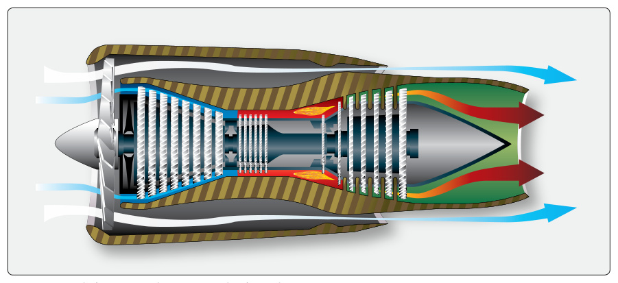
- A. 힘이 질량에 작용하면 가속도가 생긴다. 질량이 클수록 필요한 힘이 크다.Acceleration is produced when a force acts on a mass. The greater the mass, the greater the amount of force needed.
- B. 모든 작용에는 크기가 같고 방향이 반대인 반작용이 있다.For every action there is an equal and opposite reaction.
- C. 모든 물체는 외력이 작용하지 않는 한 정지 또는 직선 등속 운동 상태를 유지한다.Every body persists in its state of rest, or of motion in a straight line, unless acted upon by some outside force.
압축기(Compressor)는 2종류: 원심식(Centrifugal)과 축류식(Axial).There are two types of compressors: centrifugal and axial.
원심식: 임펠러(Impeller)가 공기를 바깥으로 가속 → 디퓨저(Diffuser)에서 압력 상승. 구조 단순·튼튼.Centrifugal: the impeller accelerates air outward, then the diffuser raises the pressure. It is simple and rugged.
축류식: 회전깃(Rotor)+고정깃(Stator)을 다단으로 배치. 고압축비·고효율이라 대형 엔진에 쓴다.Axial: rotor and stator blades are arranged in multiple stages. It gives a high compression ratio and high efficiency, so it is used in large engines.
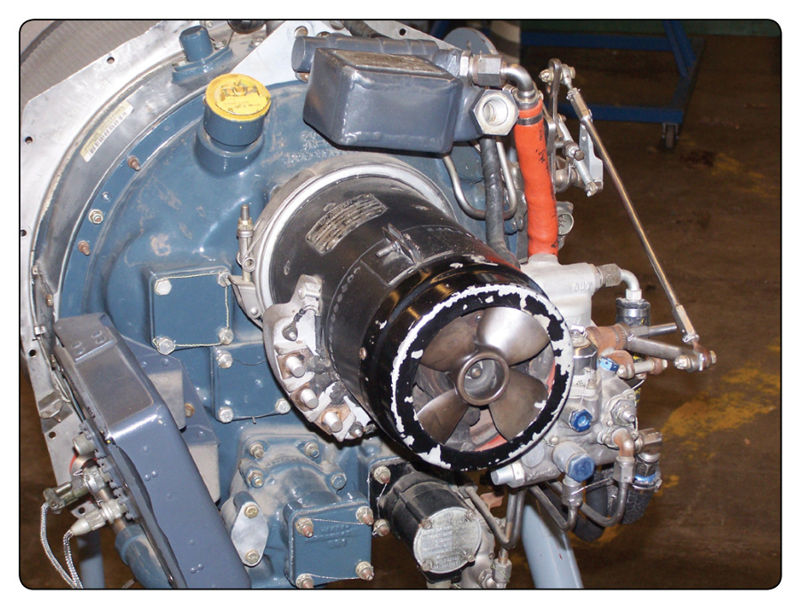
축류식 압축기는 여러 단(Stage)의 로터+스테이터로 공기를 점진적으로 압축한다.An axial-flow compressor compresses air progressively through several stages of rotors and stators.
한 단 = 로터 1열 + 스테이터 1열. 단수가 많을수록 압축비가 높다.One stage = one row of rotor blades + one row of stator vanes. The more stages, the higher the compression ratio.
압축기 실속(Compressor stall)·서지(Surge)는 주요 고장 모드다.Compressor stall and surge are the main failure modes.
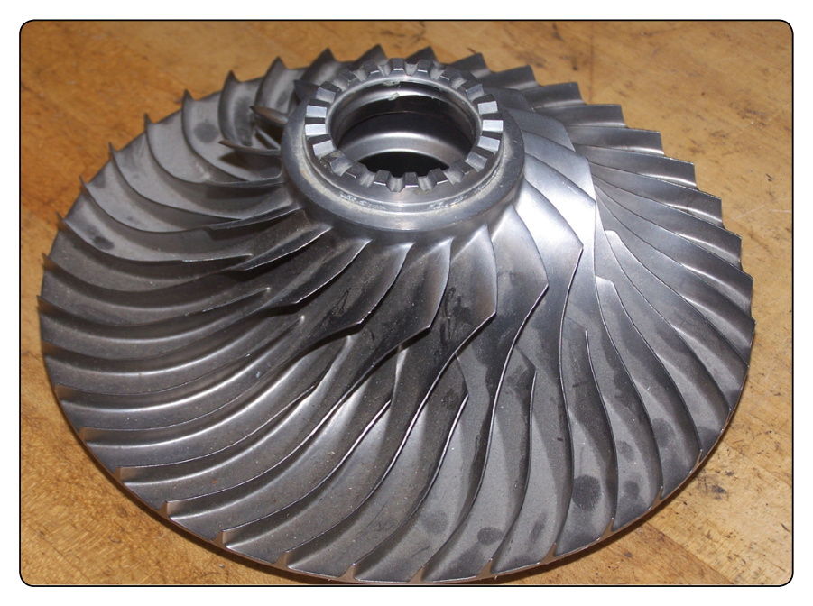
- A. 임펠러(Impeller).Impeller.
- B. 매니폴드(Manifold).Manifold.
- C. 스테이터(Stators).Stators.
- A. 증가한다.increases.
- B. 감소한다.decreases.
- C. 일정하게 유지된다.remains constant.
- A. 증가한다.increases.
- B. 감소한다.decreases.
- C. 온도에 반비례한다.is inversely proportional to the temperature.
- A. 증가한다.increases.
- B. 감소한다.decreases.
- C. 일정하게 유지된다.remains constant.
- A. 증가한다.increases.
- B. 감소한다.decreases.
- C. 온도에 반비례한다.is inversely proportional to the temperature.
연소실(Combustor)에서 압축공기와 연료가 혼합·연소된다. 형식: 캔형(Can), 애뉼러형(Annular), 캔-애뉼러형(Can-annular).In the combustion section, compressed air is mixed with fuel and burned to produce high-temperature, high-pressure gas.
1차 공기(연소)와 2차 공기(냉각·희석)로 나뉜다.Types: can (multiple-can), annular, and can-annular.
애뉼러형이 현대 엔진의 주류 — 균일한 온도분포와 컴팩트한 구조.Only about 25% of the air is used for combustion; the rest is used for cooling and dilution.
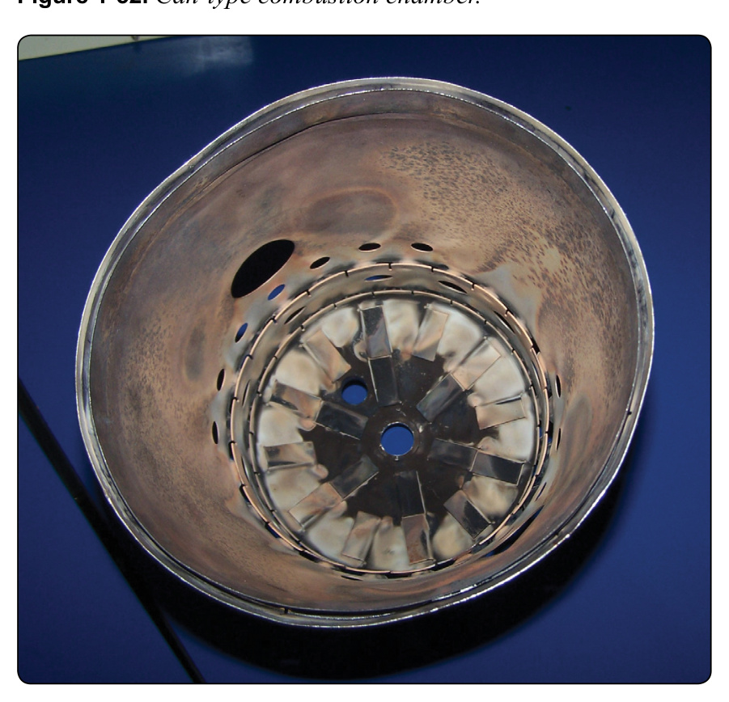
터빈(Turbine)은 연소가스 에너지를 회전력으로 추출해 압축기·액세서리를 구동한다.The turbine extracts energy from the high-temperature, high-pressure gas to drive the compressor and accessories.
구성: 터빈노즐(Nozzle/Stator)+터빈휠(Wheel/Rotor). 고온에 견디는 니켈합금·단결정 블레이드 사용.It consists of turbine nozzles (stators) and turbine wheels (rotors).
터빈입구온도(TIT)가 엔진 성능·수명의 핵심 한계 요소다.The blades withstand extreme heat, so they use heat-resistant alloys and internal cooling passages.
![turbine]()
터보팬(Turbofan)은 대형 팬으로 바이패스 공기를 만들어 효율과 정숙성을 높인 형식 — 현대 여객기의 표준.A turbofan adds a large fan at the front; bypass air produces most of the thrust.
추력(Thrust)은 뉴턴 제3법칙: 질량유량 × 속도변화. F = ṁ(V2−V1).It is fuel-efficient and quiet, so it is the mainstream engine for modern airliners.
바이패스비(Bypass ratio)가 높을수록 연비가 좋고 소음이 적다.Thrust is the reaction force produced by accelerating the air mass rearward (Newton's third law).
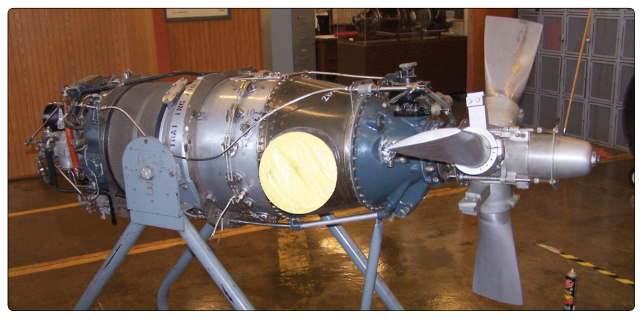
가스터빈 엔진 구성 📙 Jeppesen 참고
Gas Turbine Engine Construction가스터빈은 브레이턴 사이클로 연속 흡입→압축→연소→배기를 수행합니다. 압축기(원심식·축류식)가 공기를 가압하고, 연소실(캔·애뉼러·캔애뉼러)에서 연료를 태우며, 터빈이 가스에너지를 뽑아 압축기·액세서리를 구동하고, 배기노즐이 남은 에너지로 추력을 냅니다. 형식은 터보제트·터보팬(바이패스)·터보프롭·터보샤프트로 나뉩니다.A gas turbine runs the Brayton cycle continuously — intake, compression, combustion, exhaust. The compressor (centrifugal or axial) pressurizes air, the combustor (can, annular, or can-annular) burns fuel, the turbine extracts gas energy to drive the compressor and accessories, and the exhaust nozzle makes thrust from what remains. Types are turbojet, turbofan (bypass), turboprop, and turboshaft.
추력은 질량유량×속도변화(F=ṁΔV)로, 터보팬은 큰 바이패스 공기를 완만히 가속해 연비·소음에서 유리합니다. N1(팬/저압축)·N2(고압축) 회전수, EPR(엔진압력비), EGT(배기가스온도)로 출력을 감시합니다. 압축기 실속(stall)·서지는 받음각 과다·흡기왜곡으로 생기며, 가변정익(VSV)·블리드밸브로 방지합니다.Thrust is mass flow times velocity change (F = ṁΔV), and a turbofan gently accelerates large bypass airflow for better fuel economy and lower noise. Output is monitored by N1 (fan/low spool) and N2 (high spool) speed, EPR (engine pressure ratio), and EGT (exhaust gas temperature). Compressor stall/surge comes from excess angle of attack or inlet distortion, prevented by variable stator vanes (VSV) and bleed valves.
- A. 압력 사이클(pressure cycle).pressure cycle.
- B. 온도 사이클(temperature cycle).temperature cycle.
- C. 질량 사이클(mass cycle).mass cycle.
터빈엔진의 등장과 왕복엔진 대비 이점 심화 📙 Jeppesen 정독
The Rise of the Turbine Engine and Its Advantages작동하는 가스터빈 엔진을 설계하려는 노력은 20세기 초에 시작되었습니다. 제2차 세계대전이 끝날 무렵 기술자들은 몇 대의 터빈엔진을 실전에 투입하는 데 성공했습니다. 전쟁 수행 과정에서 가스터빈 기술에 많은 진보가 이루어졌고, 이는 상용 항공기 설계에 유용하게 쓰였습니다.Efforts to design a working gas turbine engine started at the beginning of the 20th century. By the end of World War II, engineers had succeeded in placing a few turbine engines in combat. The war effort brought about many advances in gas turbine technology, which proved useful for commercial aircraft design.
터빈엔진은 왕복엔진이 따라올 수 없는 여러 특성을 제공했습니다. 향상된 신뢰성, 더 긴 평균 오버홀 간격, 더 높은 대기속도, 고고도에서의 운용 용이성, 그리고 높은 출력 대 중량비가 그것입니다. 록히드의 슈퍼 컨스텔레이션 같은 항공기는 피스톤 동력 기술의 실용적 한계를 보여 주었고 잦은 엔진 정비를 필요로 했습니다. 1950년대에 걸쳐 피스톤 동력에서 가스터빈 제트와 터보프롭으로의 점진적 전환이 시작되었고, 더글러스 DC-3과 DC-7 같은 고전적 주력기가 보잉 707과 더글러스 DC-8에 자리를 내주었습니다.Turbine engines offered several characteristics that reciprocating engines could not match, including increased reliability, longer mean times between overhaul, higher airspeeds, ease of operation at high altitudes, and a high power-to-weight ratio. Aircraft such as Lockheed's Super Constellation represented the practical limits of piston power technology and required frequent engine maintenance. During the 1950s, a gradual transition began from piston power to gas turbine jets and turboprops, and classic workhorses like the Douglas DC-3 and DC-7 gave way to the Boeing 707 and Douglas DC-8.
제트 추진의 반작용 원리와 역사 심화 📙 Jeppesen 정독
The Reaction Principle and History of Jet Propulsion뉴턴의 제3 운동법칙은 모든 작용에 대해 크기가 같고 방향이 반대인 반작용이 있다고 말합니다. 제트 추진은 일정량의 공기를 오리피스(노즐)를 통해 가속시켜 이 법칙을 적용합니다. 공기의 가속이 작용이고 전방으로의 움직임이 반작용입니다. 자연에서는 오징어가 제트 추진의 한 형태로 물속을 나아갑니다. 오징어는 바닷물을 몸 안으로 들이고 근육으로 물에 에너지를 더한 뒤 제트 형태로 뿜어냅니다. 이 작용이 오징어를 앞으로 미는 반작용을 만들어 냅니다.Newton's third law of motion states that for every action there is an equal and opposite reaction. Jet propulsion applies this law by accelerating a quantity of air through an orifice (or nozzle): the acceleration of the air is the action and forward movement is the reaction. In nature, a squid propels itself through the water using a form of jet propulsion, taking sea water into its body, using its muscles to add energy to the water, then expelling the water as a jet. This action produces a reaction that propels the squid forward.
일찍이 기원전 250년경, 헤로(Hero)라는 저술가이자 수학자가 이 반작용 원리를 이용한 장난감을 고안했습니다. 아에올리파일(aeolipile)이라 불린 이 장난감은 증기를 만들도록 가열되는 뚜껑 덮인 물주전자로 이루어져 있었습니다. 증기는 두 개의 수직 관을 통해 구형 용기로 보내졌습니다. 구형 용기에는 여러 개의 배출관이 방사상으로 배치되어 있었습니다. 증기가 용기를 채우면 배출관을 통해 빠져나가면서 구를 회전시켰습니다.As early as 250 B.C., a writer and mathematician named Hero devised a toy using this reaction principle. The toy, called the aeolipile, consisted of a covered kettle of water that was heated to produce steam. The steam was routed through two vertical tubes into a spherical container, to which several discharge tubes were attached radially. As steam filled the container, it escaped through the discharge tubes causing the sphere to rotate.
뉴턴의 반작용 원리를 보여 주는 현대적 예는 부풀린 풍선의 끝을 놓았을 때 관찰됩니다. 풍선 속 공기가 입구로 쏟아져 나오면서 풍선이 방 안을 마구 날아다닙니다. 이런 일상적 사례에도 불구하고, 뉴턴의 반작용 원리를 기계 설계에 적용하려는 과학적 노력은 20세기에 이르기까지 대체로 성공하지 못했습니다.A modern example of Newton's reaction principle is observed when the end of an inflated balloon is released: as the air rushes out the opening, the balloon flies wildly around a room. In spite of such everyday examples, scientific efforts to apply Newton's reaction principle to mechanical designs were largely unsuccessful until the 20th century.
기계식 제트 추진의 역사는 1900년 샌포드 모스(Sanford Moss) 박사가 가스터빈에 관한 논문을 제출하면서 시작되었습니다. 이후 모스 박사는 영국에서 제너럴 일렉트릭사의 기술자가 되었고, 그곳에서 자신의 개념 일부를 터보 슈퍼차저 개발에 적용했습니다. 그의 설계는 배기가스로 구동되는 작은 터빈 휠을 사용해 슈퍼차저를 돌리는 방식이었습니다.The history of mechanical jet propulsion began in 1900, when Dr. Sanford Moss submitted a thesis on gas turbines. Later, Dr. Moss became an engineer for the General Electric Company in England, where he applied some of his concepts in the development of the turbo-supercharger. His design used a small turbine wheel, driven by exhaust gases, to turn a supercharger.
모스 박사의 연구는 최초의 성공적인 터보제트 엔진이 된 것의 개발에 영향을 주었습니다. 영국의 프랭크 휘틀(Frank Whittle) 박사는 1930년에 제트엔진에 대한 첫 특허를 받았습니다. 11년 뒤 그 엔진은 글로스터 E28/39 항공기로 첫 비행을 마쳤으며, 약 1,000파운드의 추력을 냈습니다.Dr. Moss's research influenced the development of what became the first successful turbojet engine. Dr. Frank Whittle of England was granted his first patent for a jet engine in 1930. Eleven years later, the engine completed its first flight in a Gloster model E28/39 aircraft, producing about one thousand pounds of thrust.


- A. 모든 작용에는 크기가 같고 방향이 반대인 반작용이 있다.To every action there is an equal and opposite reaction.
- B. 힘은 질량과 가속도의 곱에 비례한다.Force is proportional to the product of mass and acceleration.
- C. 모든 물체는 외력이 작용하지 않는 한 정지 또는 직선 등속 운동 상태를 유지한다.Every body persists in its state of rest, or of motion in a straight line, unless acted upon by some outside force.
제트 추진의 발전사와 오늘날 심화 📙 Jeppesen 정독
Development of Jet Propulsion and Jet Propulsion Today휘틀의 W1 엔진은 항공기를 시속 400마일이 넘는 속도로 추진했습니다. 휘틀이 영국에서 가스터빈 엔진을 개발하는 동안, 독일 기술자 한스 폰 오하인(Hans Von Ohain)은 1,100파운드의 추력을 내는 제트엔진을 설계·제작했습니다. 이 엔진은 하인켈 He-178 항공기에 장착되어 1939년 8월 27일 비행에 성공했고, 그 결과 세계 최초의 실용적인 제트 추진 항공기 비행으로 인정받습니다.Whittle's W1 engine propelled the aircraft at speeds over 400 miles per hour. While Whittle was developing the gas turbine engine in England, Hans Von Ohain, a German engineer, designed and built a jet engine that produced 1,100 pounds of thrust. This engine was installed in a Heinkel He-178 aircraft and made a successful flight on August 27, 1939. As a result, it is recognized as the first practical flight of a jet-propelled aircraft.
미국에서는 제트 추진 분야의 연구가 뒤처져 있었습니다. 발전용 터빈과 터보 슈퍼차저를 만든 폭넓은 경험 덕분에 제너럴 일렉트릭사가 1941년 가스터빈 엔진을 연구·개발하는 계약을 따냈습니다. 그 결과물이 GE-1A 엔진으로, 약 1,650파운드의 추력을 내는 원심식 압축기 형식이었습니다. 이 엔진 두 대가 벨 XP-59 '에어라코멧(Airacomet)'에 동력을 공급했습니다. 에어라코멧은 1942년 10월에 처음 비행해 제트 추진 비행의 개념을 입증했지만, 비행시간이 30분으로 제한되어 실전에는 사용되지 못했습니다.In the United States, research in the field of jet propulsion lagged. Because of its extensive experience in building electrical generating turbines and turbo-superchargers, the General Electric Company received a contract to research and develop a gas turbine engine in 1941. The result was the GE-1A engine, a centrifugal-compressor type engine that produced approximately 1,650 pounds of thrust. Two of these engines were used to power a Bell XP-59 Airacomet. The Airacomet flew for the first time in October 1942 and proved the concept of jet-powered flight; however, it was never used in combat due to a limited flight time of 30 minutes.
오늘날 상용 항공기의 대다수가 어떤 형태로든 제트 추진을 사용합니다. 현재 여러 제작사가 시속 600마일을 넘는 속도로 순항하며 최대 500명의 승객이나 수 톤의 화물을 실어 나르는 제트 추진 항공기 계열 전체를 생산하고 있습니다.Today, the majority of commercial aircraft use some form of jet propulsion. Currently, several manufacturers produce entire lines of jet-powered aircraft that cruise in excess of 600 miles per hour and carry up to five hundred passengers or several tons of cargo.
상용·군용 항공 발전의 또 다른 단계는 항공기를 음속보다 빠르게 추진할 수 있는 엔진의 생산이었습니다. 오늘날 여러 군용기가 마하 1을 넘는 속도로 비행합니다. 초음속 항공기는 현재 군사 및 연구 용도로 사용되고 있습니다. 영국과 프랑스 컨소시엄이 공동 제작한 초음속 상용기 콩코드는 1976년부터 2003년까지 운항했으며 음속의 2.2배로 비행할 수 있었습니다. 군용·상용 항공 외에 비즈니스 제트에서도 제트 추진이 널리 쓰이며, 제트엔진의 효율과 신뢰성 덕분에 쌍발기의 사용이 늘어났습니다.Another step in the progression of commercial and military aviation was the ability to produce an engine that would propel an aircraft faster than the speed of sound. Today, several military aircraft travel at speeds in excess of Mach one. Supersonic aircraft are presently in use in military and research applications. The Concorde, a supersonic commercial aircraft built collaboratively by a British and French consortium, was in service from 1976 through 2003 and was capable of flying at 2.2 times the speed of sound. In addition to military and commercial aviation, jet propulsion is widely used in business jets, and the use of twin-engine aircraft has grown in part due to the efficiency and reliability of jet engines.


- A. 터빈과 압축기.Turbine and compressor.
- B. 버킷(bucket)과 익스팬더(expander).Bucket and expander.
- C. 임펠러(impeller)와 디퓨저(diffuser).Impeller and diffuser.
- A. 제너럴 일렉트릭(General Electric).General Electric.
- B. 프랫 앤 휘트니(Pratt & Whitney).Pratt & Whitney.
- C. 롤스로이스(Rolls-Royce).Rolls-Royce.
로켓: 고체·액체 추진제 심화 📙 Jeppesen 정독
Rockets: Solid and Liquid Propellant뉴턴의 반작용 원리는 항공에 쓰이는 여러 추진 장치에 적용되어 왔습니다. 모두 같은 방식으로 추력을 만들어 냅니다. 엔진 안에서 일정 질량의 기체를 가속시키는 것입니다. 가장 흔한 추진 엔진 형식은 로켓, 램제트, 펄스제트, 가스터빈입니다.Newton's reaction principle has been applied to several propulsive devices used in aviation. All produce thrust in the same manner: they accelerate a mass of gases within the engine. The most common types of propulsive engines are the rocket, the ramjet, the pulsejet, and the gas turbine.
로켓은 공기를 흡입하지 않는 엔진으로, 자체 연료와 그 연료를 태우는 데 필요한 산소를 함께 싣고 다닙니다. 사용되는 로켓은 고체 추진제 로켓과 액체 추진제 로켓 두 종류입니다. 고체 추진제 로켓은 산화제와 섞였을 때 최적의 연소율을 내도록 특정 형상으로 성형한 고체 연료를 사용합니다. 연료가 점화되면 로켓 동체 후방의 노즐을 통해 극히 높은 속도로 기체가 방출됩니다. 이 급속한 방출에 대한 반작용이 로켓 동체의 전진 운동입니다.A rocket is a non-air-breathing engine that carries its own fuel and the oxygen needed for the fuel to burn. The two types of rockets in use are solid-propellant rockets and liquid-propellant rockets. Solid-propellant rockets use a solid fuel formed into a specific shape that promotes an optimum burning rate when mixed with an oxidizer. After the fuel is ignited, it produces an extremely high-velocity discharge of gas through a nozzle at the rear of the rocket body. The reaction to the rapid discharge is forward motion of the rocket body.
고체 연료 로켓은 주로 일부 군용 무기를 추진하는 데 쓰이며, 때때로 중량이 많이 실린 항공기의 이륙에 추가 추력을 제공하는 데에도 쓰입니다. 후자의 경우 항공기 구조에 부착된 부스터 로켓이 특수 조건 이륙에 필요한 추가 추력을 제공합니다. 이런 장치를 로켓 보조 이륙(RATO) 장치라고 하며, 고고도 공항이나 극히 무거운 하중을 들어올릴 때 사용하는 작은 고체 추진제 로켓 모터입니다.Solid fuel rockets are used primarily to propel some military weapons and occasionally to provide additional thrust for takeoff of heavily loaded aircraft. In the latter case, booster rockets attached to an aircraft structure provide the additional thrust needed for special-condition takeoffs. These are known as rocket assisted takeoff (RATO) devices, small solid propellant rocket motors used at high-altitude airports or for lifting extremely heavy loads.
두 번째 종류는 액체 연료 로켓으로, 연료와 액체 산소 같은 산화제를 사용합니다. 두 액체는 로켓에 실린 탱크에 담겨 있습니다. 두 액체가 혼합되면 격렬한 반응이 일어나 엄청난 양의 열이 발생합니다. 그 결과 로켓 뒤로 생기는 고속 기체 제트가 로켓을 추진하기에 충분한 추력을 제공합니다.The second type of rocket is a liquid-fuel rocket, which uses fuel and an oxidizing agent such as liquid oxygen. The two liquids are carried in tanks aboard the rocket. When the liquids are mixed, a violent reaction occurs, which generates a tremendous amount of heat. The resulting high-velocity gas jet behind the rocket provides enough thrust to propel it.

램제트와 펄스제트 심화 📙 Jeppesen 정독
Ramjet and Pulsejet램제트는 아소디드(athodyd), 즉 항공열역학적 덕트(aero-thermodynamic-duct)라고도 불리는, 움직이는 부품이 없는 공기 흡입식 엔진입니다. 공기를 엔진 안으로 끌어들이는 회전 압축기가 없기 때문에, 램제트는 추력을 낼 수 있으려면 먼저 높은 속도로 전진하고 있어야 합니다. 공기가 엔진에 들어오면 연료를 분사해 점화시켜 공기를 가속하고 추력을 내는 데 필요한 열을 공급합니다.A ramjet is an athodyd (or aero-thermodynamic-duct), an air-breathing engine with no moving parts. With no rotating compressor to draw air into the engine, a ramjet must be moving forward at high velocity before it can produce thrust. After air enters the engine, fuel is injected and ignited to provide the heat needed to accelerate the air and produce thrust.
램제트는 추력을 내려면 전진하고 있어야 하기 때문에 용도가 제한됩니다. 램제트는 일부 군용 무기 투발 시스템에 쓰이는데, 비행체를 램제트가 지속 비행의 동력을 넘겨받을 수 있을 만큼 충분히 높은 속도로 가속시키는 방식입니다.Because ramjets must be moving forward to produce thrust, their use is limited. Ramjets are used in some military weapons delivery systems in which the vehicle is accelerated to a high enough velocity for the ramjet to take over power for sustained flight.
펄스제트 엔진은 램제트와 비슷하지만, 흡입 공기 덕트에 스프링으로 열림 위치에 유지되는 일련의 셔터 밸브가 달려 있다는 점이 다릅니다. 열린 밸브를 통해 빨려 들어온 공기는 연소실로 들어가 연료가 타면서 가열됩니다. 연소실 안의 공기가 팽창하면서 공기압이 높아져 셔터 밸브를 닫히게 만듭니다. 셔터 뒤쪽으로 갇히고 나면 챔버 안에서 팽창하는 공기가 후방으로 밀려 나가 추력을 만듭니다. 펄스제트는 높은 전진 속도에 도달하기 전에도 추력을 낼 수 있기 때문에 통상 램제트보다 유용하다고 여겨집니다.Pulsejet engines are similar to ramjets except that the air intake duct is equipped with a series of shutter valves that are spring-loaded to the open position. Air drawn through the open valves enters a combustion chamber where it is heated by burning fuel. As the air within the combustion chamber expands, the increased air pressure forces the shutter valves closed. After it is enclosed aft of the shutters, the expanding air in the chamber is forced rearward to produce thrust. A pulsejet is typically considered more useful than a ramjet because pulsejets can produce thrust prior to achieving a high forward speed.


터보제트 작동원리와 EPR 심화 📙 Jeppesen 정독
Turbojet Operating Principles and Engine Pressure Ratio가스터빈 엔진은 오늘날 사용되는 제트엔진 중 가장 실용적인 형태입니다. 실제로 터빈엔진은 거의 모든 상용(수송류), 비즈니스, 군용 항공기의 표준이 되었습니다. 가장 흔한 네 가지 가스터빈 엔진 형식은 터보제트, 터보프로펠러(터보프롭), 터보샤프트, 터보팬입니다.The gas turbine engine is the most practical form of jet engine in use today. In fact, the turbine engine has become the standard on nearly all commercial (transport category), business, and military aircraft. The four most common types of gas turbine engines are the turbojet, turbopropeller (turboprop), turboshaft, and turbofan.
터보제트 엔진의 기본 작동원리는 단순명료합니다. 공기가 흡입 덕트를 통해 들어와 압축기로 진행합니다. 공기가 압축된 뒤에는 연소기 섹션으로 흘러 연료가 더해지고 점화됩니다. 타는 연료가 만든 열이 압축된 공기를 팽창시켜 엔진 후방으로 흐르게 합니다. 공기가 후방으로 이동하면서 압축기 블레이드와 연결된 일련의 터빈 휠을 통과합니다. 팽창하는 공기가 터빈을 돌리고, 터빈은 다시 압축기를 구동합니다. 터빈을 지난 공기는 들어올 때보다 훨씬 높은 속도로 엔진을 빠져나갑니다. 엔진에 들어가는 공기와 나오는 공기의 속도 차이가 추력을 만들어 냅니다.The basic operating principles of a turbojet engine are straightforward. Air enters through an inlet duct and proceeds to the compressor. After the air is compressed, it flows to a combustor section where fuel is added and ignited. The heat generated by the burning fuel causes the compressed air to expand and flow toward the rear of the engine. As the air moves rearward, it passes through a set of turbine wheels connected to the compressor blades. The expanding air spins the turbines, which in turn drive the compressor. After it moves past the turbines, the air exits the engine at a much higher velocity than the incoming air. The difference in velocity between the air entering and the air exiting the engine produces thrust.
터보제트 엔진 운용에서 반드시 알아야 할 가장 중요한 요소 중 하나가 엔진 압력비(engine pressure ratio), 즉 EPR입니다. 엔진의 EPR은 터빈 배출 압력과 엔진 흡입 공기 압력의 비입니다. EPR 게이지 지시는 주어진 파워 레버 설정에서 생산되고 있는 추력의 양을 나타냅니다. 전압력 픽업, 즉 EPR 프로브가 엔진의 두 지점에서 공기 압력을 측정합니다. 하나는 압축기 입구에, 다른 하나는 배기 섹션의 최종단 터빈 바로 뒤에 위치합니다.One of the most important aspects of turbojet engine operation is the engine pressure ratio, or EPR. An engine's EPR is the ratio of the turbine discharge pressure to the engine inlet air pressure. EPR gauge readings are an indication of the amount of thrust being produced for a given power lever setting. Total pressure pickups, or EPR probes, measure the air pressure at two points in the engine; one EPR probe is located at the compressor inlet and a second just aft of the last stage turbine in the exhaust section.
EPR 지시는 이륙, 상승, 순항의 출력 설정을 확인하는 데 자주 사용됩니다. EPR 지시는 기압고도와 외기온도(OAT)의 영향을 받으며 그에 좌우됩니다.EPR readings are often used to verify power settings for takeoff, climb, and cruise. EPR readings are affected by and are dependent on pressure altitude and outside air temperature (OAT).
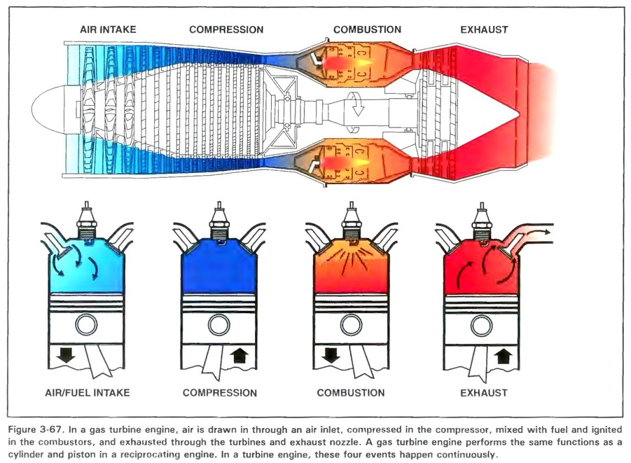
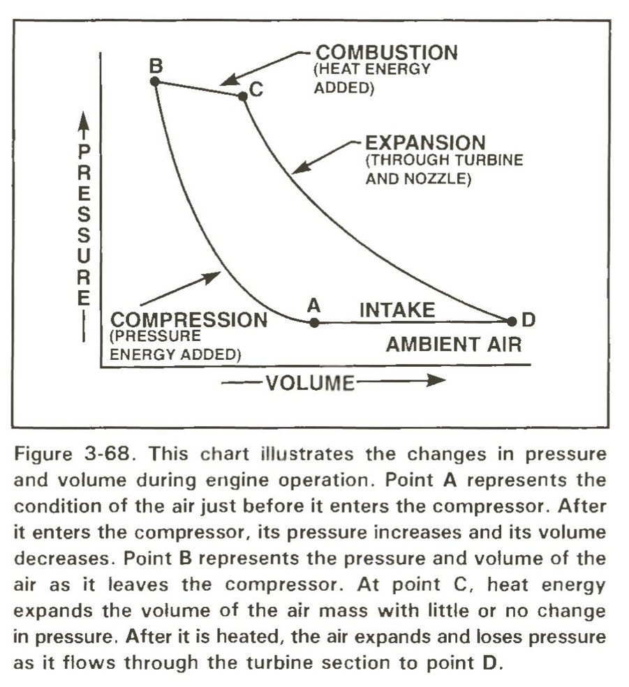
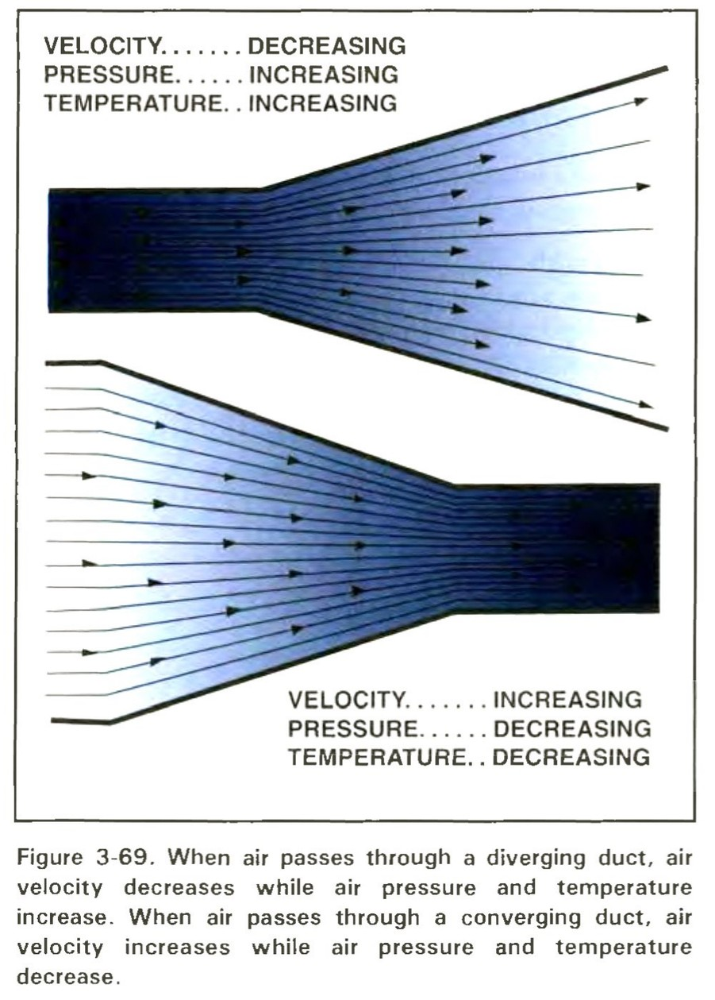
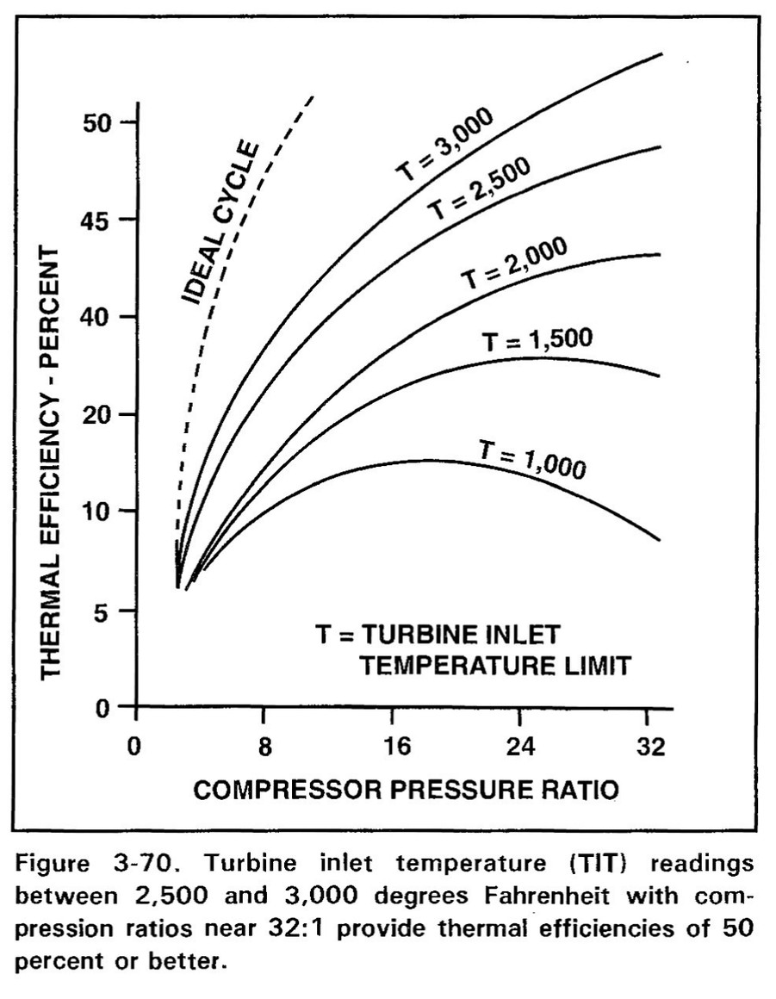
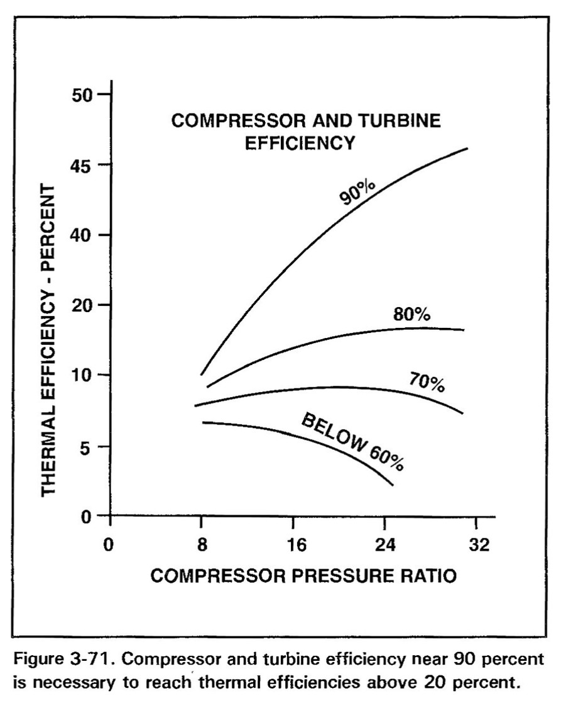
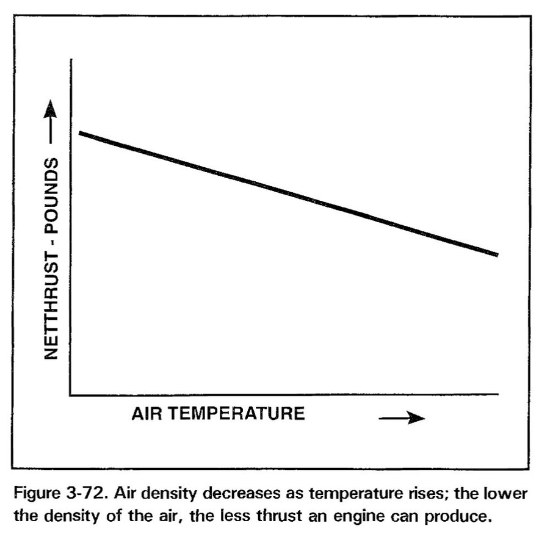
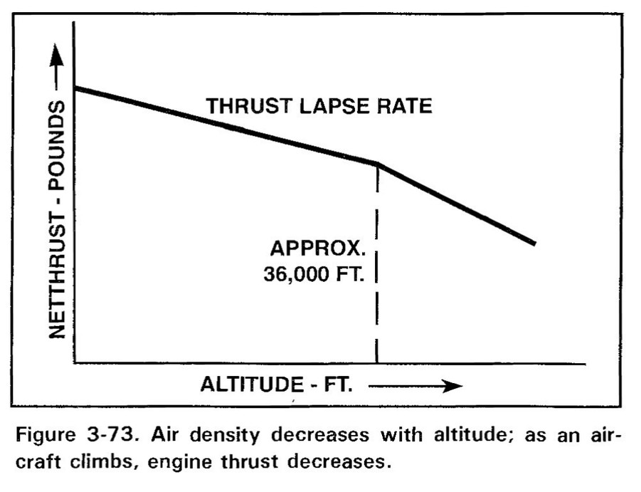
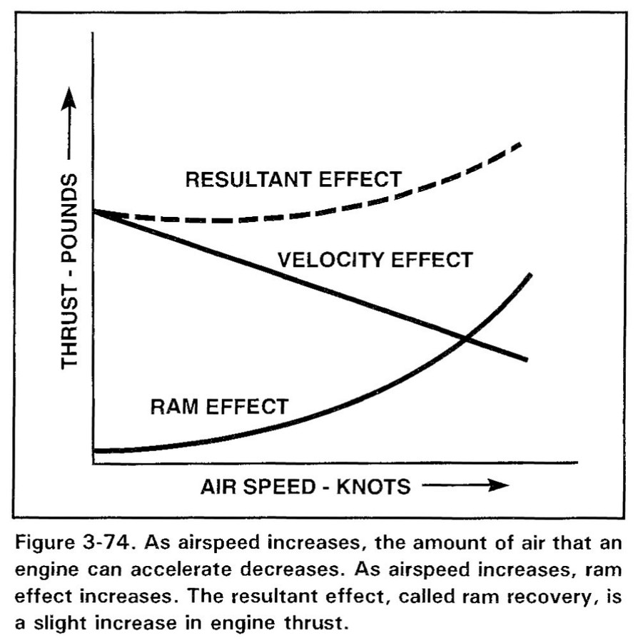
- A. 29.0" Hg.29.0" Hg.
- B. 29.29" Hg.29.29" Hg.
- C. 29.92" Hg.29.92" Hg.
- A. 59°F.59°F.
- B. 59°C.59°C.
- C. 29°C.29°C.
- A. 항공기 속도, 압축비, 주변 온도.Speed of the aircraft, compression ratio, and ambient temperature.
- B. 항공기 속도, 항공기 고도, 주변 온도.Speed of the aircraft, altitude of the aircraft, and ambient temperature.
- C. 압축비, 터빈 입구 온도, 터빈·압축기 효율.Compression ratio, turbine inlet temperature, and turbine and compressor efficiency.
- A. 주변 온도, 항공기 속도, 항공기 고도.Ambient temperature, speed of the aircraft, and altitude of the aircraft.
- B. 터빈 입구 온도, 압축비, 터빈·압축기 효율.Turbine inlet temperature, compression ratio, and turbine and compressor efficiency.
- C. 터빈 입구 온도와 주변 온도.Turbine inlet temperature and ambient temperature.
- A. 압축기 입구.Compressor inlet.
- B. 터빈 출구.Turbine outlet.
- C. 압축기 출구.Compressor outlet.
- A. 전체 입구 압력.the total inlet pressure.
- B. 스테이션 7의 압력과 온도.pressure and temperature at station 7.
- C. 스테이션 7의 전압(total pressure).the total pressure at station 7.
- A. 반동형(Reaction).Reaction.
- B. 충동형(Impulse).Impulse.
- C. 충동-반동형(Impulse-reaction).Impulse-reaction.
- A. 배기가스에 높은 배출 속도(high exit velocity)를 부여한다.impart a high exit velocity to the exhaust gases.
- B. 온도를 높여 속도를 증가시킨다.increase temperature, therefore increasing velocity.
- C. 온도를 낮춰 압력을 감소시킨다.decrease temperature, therefore decreasing pressure.
터보프롭과 터보샤프트 엔진 심화 📙 Jeppesen 정독
Turbopropeller and Turboshaft Engines프로펠러에 동력을 전달하는 가스터빈 엔진을 터보프로펠러, 즉 터보프롭 엔진이라고 합니다. 터보프롭 엔진은 설계상 터보제트 엔진과 유사하지만, 터보프롭이 생산한 동력이 프로펠러를 돌리는 감속기어 계통으로 전달된다는 점이 다릅니다. 감속기어가 필요한 이유는 프로펠러의 최적 성능이 엔진 작동 속도보다 훨씬 느린 속도에서 얻어지기 때문입니다.A gas turbine engine that delivers power to a propeller is referred to as a turbopropeller, or turboprop, engine. Turboprop engines are similar in design to turbojet engines except that the power produced by a turboprop engine is delivered to a reduction gear system that spins a propeller. Reduction gearing is necessary because optimum propeller performance is achieved at much slower speeds than the engine operating speed.
터보프롭 엔진은 비즈니스기와 커뮤터 항공기에 널리 쓰이는데, 제트 동력과 프로펠러 효율의 조합이 시속 300~400마일 사이에서 좋은 성능 특성을 제공하기 때문입니다. 여기에 더해 대부분의 터보프롭 엔진은 모든 가스터빈 엔진 중 가장 좋은 비연료소비율(SFC)로 작동합니다.Turboprop engines are used extensively in business and commuter aircraft because the combination of jet power and propeller efficiency provides good performance characteristics at speeds between 300 and 400 miles per hour. Additionally, most turboprop engines operate with the best specific fuel consumption of any gas turbine engine.
다른 것을 구동할 수 있는 샤프트에 동력을 전달하는 가스터빈 엔진을 터보샤프트 엔진이라고 합니다. 터보제트와 터보샤프트 엔진의 가장 큰 차이는, 터보샤프트에서는 팽창하는 가스가 만든 에너지의 대부분이 추력을 내는 데 쓰이지 않고 터빈을 구동하는 데 쓰인다는 점입니다. 많은 헬리콥터가 터보샤프트 가스터빈 엔진을 사용합니다. 이 밖에도 터보샤프트 엔진은 보조동력장치(APU)로 널리 쓰이고, 산업 분야에서는 발전기와 지상 수송 시스템을 구동하는 데 쓰입니다. 터보프롭이나 터보샤프트 엔진의 출력은 추력이 아니라 축마력(shaft horsepower)으로 측정합니다.A gas turbine engine that delivers power to a shaft that can drive something else is referred to as a turboshaft engine. The biggest difference between a turbojet and turboshaft engine is that on a turboshaft engine, most of the energy produced by the expanding gases is used to drive a turbine rather than produce thrust. Many helicopters use a turboshaft gas turbine engine. In addition, turboshaft engines are widely used as auxiliary power units and, in industrial applications, to drive electrical generators and surface transportation systems. The output of a turboprop or turboshaft engine is measured by shaft horsepower rather than thrust.

- A. 낮은 엔진 속도에서 RPM의 작은 증가로 추력이 급격히 증가한다.At the lower engine speeds, thrust increases rapidly with small increases in RPM.
- B. 높은 엔진 속도에서 RPM의 작은 증가로 추력이 급격히 증가한다.At the higher engine speeds, thrust increases rapidly with small increases in RPM.
- C. 소비 공기 1파운드당 전달 추력은 고고도에서 저고도보다 작다.The thrust delivered per pound of air consumed is less at high altitude than at low altitude.
터보팬 엔진과 바이패스비 심화 📙 Jeppesen 정독
Turbofan Engines and Bypass Ratio터보팬 엔진은 가스터빈 엔진으로 구동되는 다중 블레이드 덕티드 프로펠러로 구성됩니다. 터보팬은 터보제트와 터보프롭의 가장 좋은 특징 사이에서 절충안을 제공하기 위해 개발되었습니다. 터보팬 엔진은 터보제트 수준의 순항 속도 능력을 가지면서도 터보프롭의 단거리 이륙 능력을 어느 정도 유지합니다. 이런 이유와 함께 터보팬이 비교적 연료 효율이 좋다는 점 때문에 오늘날 거의 모든 여객기가 터보팬 엔진으로 추진됩니다.A turbofan engine consists of a multibladed, ducted propeller driven by a gas turbine engine. Turbofans were developed to provide a compromise between the best features of the turbojet and the turboprop. Turbofan engines have turbojet-type cruise speed capability, yet retain some of the short-field takeoff capability of a turboprop. Nearly all present day airliners are powered by turbofan engines for these reasons as well as because turbofans are relatively fuel-efficient.
터보팬 엔진은 팬을 엔진의 앞쪽이나 뒤쪽 어느 쪽에도 장착할 수 있습니다. 압축기 앞에 팬이 장착된 엔진을 전방팬 엔진(forward-fan engine), 터빈 섹션에 팬이 장착된 터보팬 엔진을 후방팬 엔진(aft-fan engine)이라고 합니다. 후방팬 방식은 후방팬이 흡입구에서의 공기 압축에 기여하지 못하기 때문에 거의 쓰이지 않습니다.A turbofan engine can have the fan mounted either in the front or back of the engine. Engines that have the fan mounted in front of the compressor are called forward-fan engines, and turbofan engines that have the fan mounted to the turbine section are called aft-fan engines. The aft-fan arrangement is rarely used because an aft fan does not contribute to air compression at the inlet.
터보팬 엔진을 통과하는 흡입 공기는 통상 두 개의 분리된 흐름으로 나뉩니다. 한 흐름은 엔진 코어를 통과하고, 두 번째 흐름은 코어를 동축으로 우회합니다. 이 바이패스 공기 흐름 때문에 이런 동력장치를 바이패스 엔진이라고 부릅니다. 바이패스 엔진을 논하려면 세 가지 용어에 익숙해야 합니다. 추력비(thrust ratio), 바이패스비(bypass ratio), 팬 압력비(fan pressure ratio)입니다. 터보팬 엔진의 추력비는 팬이 만든 추력과 엔진 코어 배기가 만든 추력의 비교입니다. 반면 터보팬의 바이패스비는 코어를 우회하는 흡입 공기와 엔진 코어를 통과하는 공기의 비를 말합니다.Inlet air passing through a turbofan engine is usually divided into two separate streams of air. One stream passes through the engine core, and a second stream coaxially bypasses the engine core. From this bypass stream of air, this powerplant is referred to as a bypass engine. To discuss bypass engines, you must be familiar with three terms: thrust ratio, bypass ratio, and fan pressure ratio. A turbofan engine's thrust ratio is a comparison of the thrust produced by the fan to the thrust produced by the engine core exhaust. On the other hand, a turbofan's bypass ratio refers to the ratio of incoming air that bypasses the core to the amount of air that passes through the engine core.
민간 항공기의 터보팬은 일반적으로 바이패스비를 기준으로 세 가지로 분류합니다. 저바이패스(1:1), 중간바이패스(2:1 또는 3:1), 고바이패스(4:1 이상)입니다. 팬 직경이 팬의 바이패스비와 추력비를 결정합니다.Turbofans in civil aircraft are generally divided into three classifications based on bypass ratio: low bypass (1:1); medium bypass (2:1 or 3:1); and high bypass (4:1 or greater). Fan diameter determines a fan's bypass ratio and thrust ratio.
일반적으로 저바이패스 엔진의 팬 섹션 공기 질량 유량은 압축기의 공기 질량 유량과 같습니다. 엔진 모델에 따라 팬 배출이 약간 더 높거나 낮을 수 있지만 바이패스비는 대략 1:1입니다. 일부 엔진에서는 바이패스 공기가 짧은 팬 덕트를 통해 곧바로 기외로 배출됩니다. 그러나 덕티드 팬(ducted fan)에서는 바이패스 공기가 엔진 전 길이를 따라 덕트로 유도됩니다. 완전한 팬 덕트는 공기역학적 항력과 소음 방출을 줄여 줍니다. 어느 경우든 덕트의 끝에는 통상 수렴형 배출 노즐이 있어 속도를 높이고 반작용 추력을 만들어 냅니다.Generally, airflow mass in the fan section of a low-bypass engine is the same as airflow mass in the compressor. The fan discharge could be slightly higher or lower depending on the engine model, but bypass ratios are approximately 1:1. In some engines, the bypass air is vented directly overboard through a short fan duct. However, in a ducted fan, the bypass air is ducted along the entire length of the engine. Full fan ducts reduce aerodynamic drag and noise emissions. In either case, the end of the duct usually has a converging discharge nozzle that increases velocity and produces reactive thrust.
중간(또는 인터미디어트) 바이패스 엔진은 공기 바이패스비가 2:1에서 3:1 범위입니다. 이런 엔진은 추력비가 바이패스비와 비슷합니다. 이 엔진들에 쓰이는 팬은 비슷한 출력의 저바이패스 엔진에 쓰이는 팬보다 직경이 큽니다.Medium- or intermediate-bypass engines have airflow bypass ratios ranging from 2:1 to 3:1. These engines have thrust ratios similar to their bypass ratios. The fans used on these engines have a larger diameter than the fans used on low-bypass engines of comparable power.


- A. 엔진 구동 프로펠러는 큰 질량의 공기에 비교적 작은 가속을 부여한다.An engine driven propeller imparts a relatively small amount of acceleration to a large mass of air.
- B. 엔진 구동 프로펠러는 작은 질량의 공기에 비교적 큰 가속을 부여한다.An engine driven propeller imparts a relatively large amount of acceleration to a smaller mass of air.
- C. 최신 터보프롭 엔진은 배기가스 에너지의 약 50%를 터빈으로 추출하고 나머지로 배기추력을 낸다.In modern turboprop engines, nearly 50 percent of the exhaust gas energy is extracted by turbines to drive the propeller and compressor with the rest providing exhaust thrust.
- A. 압력을 높이고 속도를 줄인다.To increase pressure and reduce velocity.
- B. 압력을 속도로 변환한다.To convert pressure to velocity.
- C. 압력을 줄이고 속도를 높인다.To reduce pressure and increase velocity.
- A. 추력 생성을 위해 공기 속도를 증가시킨다.increases air velocity to generate thrust forces.
- B. 열에너지를 이용해 유입 가스를 팽창·가속한다.utilizes heat energy to expand and accelerate the incoming gas flow.
- C. 압축기 섹션을 구동한다.drives the compressor section.
- A. 가스 흐름의 속도를 높인다.increase the velocity of the gas flow.
- B. 가스 흐름의 속도를 낮춘다.decrease the velocity of the gas flow.
- C. 가스 흐름의 압력을 높인다.increase the pressure of the gas flow.
고바이패스 터보팬과 팬 압력비·종횡비 심화 📙 Jeppesen 정독
High-Bypass Turbofans, Fan Pressure Ratio, and Aspect Ratio고바이패스 터보팬 엔진은 바이패스비가 4:1 이상이며 바이패스 엔진 중 가장 큰 직경의 팬을 사용합니다. 고바이패스 터빈은 저바이패스나 중간바이패스 터빈보다 더 높은 추진 효율과 더 좋은 연료 경제성을 제공합니다. 그 결과 장거리 비행에 쓰이는 대형 여객기의 선택 엔진이 되었습니다. 흔한 고바이패스 터보팬 엔진으로는 프랫 앤 휘트니의 JT9D와 PW4000, 롤스로이스 RB-211, 제너럴 일렉트릭 CF6이 있습니다. JT9D의 한 형식은 바이패스비 5:1로 추력의 80퍼센트를 팬이, 20퍼센트만을 코어 엔진이 제공합니다.High bypass turbofan engines have bypass ratios of 4:1 or greater and use the largest diameter fan of any of the bypass engines. High bypass turbines offer higher propulsive efficiencies and better fuel economy than low or medium bypass turbines. Consequently, they are the engines of choice on large airliners used for long flights. Some common high-bypass turbofan engines include Pratt and Whitney's JT9D and PW4000, the Rolls-Royce RB-211, and the General Electric CF6. One version of the JT9D has a bypass ratio of 5:1 with 80 percent of the thrust provided by the fan, and only 20 percent by the core engine.
반드시 알아야 할 또 다른 용어는 팬 압력비(fan pressure ratio)로, 팬을 떠나는 공기 압력과 팬으로 들어가는 공기 압력의 비입니다. 전형적인 저바이패스 팬의 팬 압력비는 약 1.5:1인 반면, 일부 고바이패스 팬의 팬 압력비는 7:1까지 높을 수 있습니다.Another term you must be familiar with is fan pressure ratio, which is the ratio of air pressure leaving the fan to the air pressure entering the fan. The fan pressure ratio on a typical low bypass fan is approximately 1.5:1, whereas the fan pressure ratio for some high bypass fans can be as high as 7:1.
높은 팬 압력비를 얻기 위해 대부분의 고바이패스 엔진은 높은 종횡비(aspect ratio) 블레이드로 설계됩니다. 종횡비는 블레이드의 길이와 폭(코드)의 비입니다. 따라서 코드가 좁고 긴 블레이드는 코드가 넓고 짧은 블레이드보다 종횡비가 높습니다. 높은 종횡비 팬 블레이드가 가장 흔히 쓰이지만, 낮은 종횡비 블레이드도 현재 더 널리 사용되고 있습니다. 블레이드 제작 기술의 발전이 과거 낮은 종횡비 블레이드가 안고 있던 무게 문제를 극복했습니다. 낮은 종횡비 블레이드의 무게 절감은 복합재로 만든 내부 보강재를 넣은 중공 티타늄 블레이드로 달성되었습니다. 낮은 종횡비 블레이드의 또 다른 이점은 그 크기 덕분에 이물질 손상, 특히 조류 충돌에 덜 취약하다는 것입니다.To obtain high fan pressure ratios, most high bypass engines are designed with high aspect ratio blades. Aspect ratio is the ratio of a blade's length to its width, or chord. Therefore, a long blade with a narrow chord has a higher aspect ratio than a short blade with a wide chord. Although high aspect ratio fan blades are used most often, low aspect ratio blades are currently coming into wider use. Technological advances in blade construction have overcome the weight problems associated with low aspect ratio blades in the past; weight savings have been achieved with hollow titanium blades with inner reinforcements made of composite materials. Another benefit of low aspect ratio blades is their size, which makes them less susceptible to foreign object damage, particularly bird strikes.

초고바이패스 프로프팬과 언덕티드 팬(UDF) 심화 📙 Jeppesen 정독
Ultra-High Bypass Propfans and Unducted Fan Engines사용 중인 대부분의 엔진보다 높은 효율을 가진 새로운 엔진 설계를 초고바이패스(UHB) 프로프팬 및 언덕티드 팬(UDF) 엔진이라고 부릅니다. 이 새로운 엔진들은 티타늄, 경량 스테인리스강, 복합재를 사용해 여러 고바이패스 터보팬 엔진 대비 연료 경제성을 15퍼센트 이상 개선합니다. 직경 12~15피트의 복합재 블레이드 프로펠러를 채용해 엔진 설계자들은 30:1의 바이패스비를 달성했습니다. 복합재 프로펠러 블레이드는 더 가볍고 기존 블레이드보다 높은 팁 속도에서도 안전한 작동을 제공합니다.New engine designs with higher efficiencies than most engines in use are designated as ultra-high bypass (UHB) propfan and unducted fan (UDF) engines. These new engines use titanium, lightweight stainless steel, and composite materials to improve fuel economy over several high-bypass turbofan engines by more than 15 percent. By incorporating propellers with composite blades between 12 and 15 feet in diameter, engine designers have achieved 30:1 bypass ratios. Composite propeller blades are lighter and provide safe operation at tip speeds higher than conventional blades.
현재의 연구개발은 이 엔진들이 150~200명의 승객을 태운 항공기를 마하 0.8에 가까운 속도로 운항시키면서 10,000~15,000마력을 낼 잠재력이 있음을 보여 줍니다. 또 다른 설계는 프로프팬을 통상적인 카울 흡입구 안에 넣는 방식으로 마하 0.9를 달성할 수 있습니다. 이런 엔진을 덕티드 초고바이패스 엔진(ducted ultra-high bypass engine)이라고 합니다.Current research and development indicates that these engines have the potential to produce 10,000 to 15,000 horsepower for an aircraft carrying 150 to 200 passengers at speeds near 0.8 Mach. Another design encases the propfan in a conventional cowl inlet, which can achieve Mach 0.9. These engines are known as ducted ultra-high bypass engines.

가스터빈 엔진의 기본 구성과 핫·콜드 섹션 심화 📙 Jeppesen 정독
Gas Turbine Engine Components and Hot/Cold Sections모든 가스터빈 엔진은 같은 기본 구성품으로 이루어져 있습니다. 다만 각 구성품을 기술하는 구체적 명칭은 제작사마다 다르며, 명칭 차이는 해당 정비교범에 반영되어 있습니다.All gas turbine engines consist of the same basic components. However, the specific nomenclature describing each component varies among manufacturers, and nomenclature differences are reflected in applicable maintenance manuals.
모든 가스터빈 엔진에 있는 기본 섹션은 흡입 공기 덕트, 압축기 섹션, 연소 섹션, 터빈 섹션, 배기 섹션, 부속장비 섹션입니다. 여기에 더해 시동, 윤활, 연료 공급과 방빙·냉각·여압 같은 보조 목적에 필요한 계통들이 있습니다.The basic sections within every gas turbine engine are the air inlet duct, compressor section, combustion section, turbine section, exhaust section, and accessory section. In addition, there are systems necessary for starting, lubrication, fuel supply, and auxiliary purposes such as anti-icing, cooling, and pressurization.
자주 접하게 되는 추가 용어로 핫 섹션(hot section)과 콜드 섹션(cold section)이 있습니다. 핫 섹션은 연소, 터빈, 배기 섹션을 포함합니다. 콜드 섹션은 흡입 공기 덕트와 압축기 섹션을 포함합니다.Additional terms you will likely encounter include hot section and cold section. The hot section includes the combustion, turbine, and exhaust sections. The cold section includes the air inlet duct and the compressor section.

흡입 공기 덕트와 램 회복 심화 📙 Jeppesen 정독
Air Inlet Duct and Ram Recovery터보제트 엔진의 흡입 공기 덕트는 통상 동력장치가 아니라 기체의 일부로 간주됩니다. 그러나 흡입 공기 덕트의 기능과 엔진 성능에 대한 중요성 때문에, 가스터빈 엔진 설계와 구조를 논할 때 반드시 다루어야 할 부분입니다.The air inlet duct on a turbojet engine is normally considered part of the airframe, not the powerplant. However, the function of an air inlet duct and its importance to engine performance make it a necessary part of any discussion on gas turbine engine design and construction.
터빈엔진의 흡입구는 자유 기류의 전압력을 가능한 한 많이 회복해 압축기로 전달하도록 설계됩니다. 이를 램 회복(ram recovery) 또는 압력 회복이라고 합니다. 자유 기류의 압력을 회복하고 유지하는 것에 더해, 흡입구는 공기압을 대기압 이상으로 높이도록 형상화할 수 있습니다. 이 램 효과(ram effect)는 공기가 흡입구에 '쌓이게' 만듭니다. 항공기가 빠르게 날수록 더 많은 공기가 쌓이고 흡입구 공기압은 주위 대기압보다 더 높아집니다.The air inlet to a turbine engine is designed to recover as much of the total pressure of the free airstream as possible and deliver it to the compressor. This is known as ram recovery or pressure recovery. In addition to recovering and maintaining the pressure of the free airstream, inlets can be shaped to increase air pressure above atmospheric pressure. This ram effect causes air to pile up in the inlet; the faster an aircraft flies the more air piles up and the higher the inlet air pressure increases above ambient.
흡입 공기 덕트는 또한 효율적인 작동을 위해 압축기에 균일한 공기를 공급합니다. 흡입 덕트는 가능한 한 항력을 적게 일으키도록 설계됩니다. 덕트 내부 기류에 작은 장애물만 있어도 심각한 효율 손실이 생깁니다. 흡입 덕트가 최소한의 난류로 최대 체적의 공기를 공급하려면 원래 상태에 최대한 가깝게 유지되어야 합니다. 흡입 덕트에 대한 어떤 수리도 덕트의 매끄러운 공기역학적 형상을 유지해야 합니다. 흡입 덕트의 손상이나 부식을 막기 위해, 엔진이 작동하지 않을 때는 언제나 흡입구 커버를 장착해야 합니다.The air inlet duct also provides a uniform supply of air to the compressor for efficient operation. The inlet duct is designed to cause as little drag as possible; it takes only a small obstruction to the airflow inside a duct to cause a severe loss of efficiency. For an inlet duct to deliver the maximal volume of air with minimal turbulence, it must be maintained as close to its original condition as possible. Any repairs to an inlet duct must retain the duct's smooth aerodynamic shape. To help prevent damage or corrosion, an inlet cover should be installed any time the engine is not operating.

- A. 더 많은 터빈 휠을 사용할 수 있다.More turbine wheels can be used.
- B. 더 높은 압축비를 얻을 수 있다.Higher compression ratios can be obtained.
- C. 연소실로 들어가는 공기 속도가 증가한다.The velocity of the air entering the combustion chamber is increased.
흡입 덕트의 장착 위치별 형식 심화 📙 Jeppesen 정독
Air Inlet Duct Types by Mounting Location기체와 엔진 조합의 변화와 엔진 장착 위치에 맞추기 위해 여러 종류의 흡입 공기 덕트가 설계되었습니다. 또한 흡입구는 서로 다른 대기속도에서의 운용을 위해 다르게 설계됩니다. 가장 흔한 엔진 흡입 덕트 장착 위치는 엔진 자체, 날개 안, 동체입니다. 마지막으로 항공기 속도가 흡입 덕트 설계에 큰 역할을 하며, 아음속 비행, 초음속 비행, 그리고 전진 속도가 아주 느리거나 전혀 없는 상태에서의 엔진 작동에 특별한 고려가 주어집니다.Many types of air inlet ducts have been designed to accommodate variations in airframe and engine combinations as well as engine-mounting locations. In addition, air inlets are designed differently for operation at different airspeeds. Some of the most common engine inlet duct mounting locations are on the engine itself, in the wing, and on the fuselage. Finally, aircraft speed plays a major part in air inlet ducts design, with special consideration given to subsonic flight, supersonic flight, and engine operation at very slow or no forward speed at all.
여러 대형 상용기와 대형 군용기가 날개 장착 엔진을 사용합니다. DC-10과 L-1011처럼 몇몇 경우에는 날개 장착 엔진과 수직안정판 장착 엔진의 조합이 쓰입니다. 이런 경우 흡입 공기 덕트는 압축기 바로 앞에 위치하며 엔진에 장착됩니다. 흡입구를 엔진과 일체로 장착하면 흡입구 길이가 줄어들어 효율이 높아집니다.Several large commercial aircraft and large military aircraft use wing-mounted engines. In a few cases, such as the DC-10 and L-1011, a combination of wing mounted and vertical stabilizer mounted engines are used. In these cases, the air inlet duct is located directly in front of the compressor and is mounted to the engine. Integral mounting of the inlet with an engine reduces air inlet length, which increases efficiency.
날개 및 수직안정판 장착 엔진 외에, 일부 상용기와 소형 비즈니스 제트의 다수는 후방 동체 장착 엔진을 갖추고 있습니다. 이런 방식으로 장착된 엔진의 흡입 공기 덕트는 날개 장착 엔진의 것과 동일합니다. 덕트는 비교적 짧고 엔진에 직접 장착됩니다.In addition to the wing- and vertical stabilizer-mounted engines, some commercial aircraft and a majority of small business jets are fitted with aft fuselage mounted engines. The air inlet ducts on engines mounted in this fashion are identical to air inlet ducts on wing-mounted engines; the duct is relatively short and is mounted directly to the engine.
날개 안에 엔진을 장착한 일부 항공기는 날개 앞전에 흡입 공기 덕트를 둡니다. 아에로스파시알 카라벨, 드 하빌랜드 코멧, 드 하빌랜드 뱀파이어 같은 항공기가 모두 날개 장착 흡입구를 사용합니다. 통상 날개 장착 흡입 덕트는 날개 뿌리 부근에 위치합니다.Some aircraft with engines mounted inside the wings feature air inlet ducts in the wing's leading edge. Aircraft such as the Aerospatiale Caravelle, the de Havilland Comet, and the de Havilland Vampire all use wing-mounted inlets. Typically, wing-mounted inlet ducts are positioned near the wing root area.
동체 안에 장착된 엔진은 통상 동체 앞부분 근처에 위치한 흡입 공기 덕트를 사용합니다. 예를 들어 초기 군용기 다수가 동체 기수에 흡입 공기 덕트를 두도록 설계되었습니다. 또한 일부 현대 초음속 군용기는 기수 바로 아래에 흡입 덕트를 둡니다. 이런 형식의 흡입 덕트를 쓰면 제작사가 공기역학적으로 더 효율적인 항공기를 만들 수 있지만, 흡입 덕트의 길이가 길어져 어느 정도 비효율이 생깁니다.Engines mounted inside a fuselage typically use air inlet ducts located near the front of the fuselage. For example, many early military aircraft were designed with an air inlet duct in the nose of the fuselage. In addition, some modern supersonic military aircraft have inlet ducts located just under the aircraft nose. Although using an air inlet duct of this type enables the aircraft manufacturer to build a more aerodynamically efficient aircraft, the increased length of the inlet duct introduces some inefficiency.
일부 군용기는 동체 측면에 장착된 흡입 공기 덕트를 사용합니다. 이 방식은 단발기와 쌍발기 모두에 잘 맞습니다. 항공기 양쪽에 흡입 공기 덕트를 장착하면 항공기에 항력을 크게 더하지 않으면서 덕트 길이를 짧게 할 수 있습니다. 그러나 이 방식의 단점은 갑작스러운 비행 기동이 두 덕트 사이에 램 공기압 불균형을 일으킬 수 있다는 것입니다. 압축기 면에 작용하는 공기압 불균형은 약간의 출력 손실로 이어질 수 있습니다.Some military aircraft use air inlet ducts mounted on the sides of the fuselage. This arrangement works well for both single- and twin-engine aircraft. By mounting an air inlet duct on each side of an aircraft, the duct length can be shortened without adding a significant amount of drag. However, a disadvantage to this arrangement is that some sudden flight maneuvers can cause an imbalance in ram air pressure between the two ducts, and an air pressure imbalance acting on a compressor face can result in a slight loss of power.


속도별 흡입구 설계: 아음속·초음속·벨마우스 심화 📙 Jeppesen 정독
Inlet Design by Speed: Subsonic, Supersonic, and Bellmouth전형적인 아음속 흡입구는 앞에서 뒤로 갈수록 직경이 점진적으로 커지는 고정 기하 덕트로 이루어집니다. 이 확산형(divergent) 형상은 벤투리처럼 작동합니다. 흡입 공기가 퍼져 나가면서 공기의 속도가 줄고 압력이 올라갑니다. 이렇게 더해진 압력은 항공기가 설계 순항속도에 도달한 뒤 엔진 효율에 크게 기여합니다. 이 속도에서 압축기는 최적의 공기역학적 효율에 도달해 최선의 연료 경제성으로 가장 큰 압축을 만들어 냅니다. 흡입구, 압축기, 연소기, 터빈, 배기 덕트가 하나의 유닛으로 서로 맞도록 설계된 것이 바로 이 설계 순항속도에서입니다. 손상, 오염, 또는 주위 조건 때문에 불일치가 생기면 엔진 성능이 저하됩니다.A typical subsonic air inlet consists of a fixed geometry duct with a diameter that progressively increases from front to back. This divergent shape works like a venturi: as the intake air spreads out, the velocity of the air decreases and the pressure increases. This added pressure contributes significantly to engine efficiency after the aircraft reaches its design cruising speed. At this speed, the compressor reaches its optimum aerodynamic efficiency and produces the most compression at the best fuel economy. It is at this design cruise speed that the inlet, compressor, combustor, turbine, and exhaust duct are designed to match each other as a unit. If any mismatch occurs because of damage, contamination, or ambient conditions, engine performance suffers.
초음속 항공기에서 전형적인 흡입 공기 덕트는 고정 또는 가변 기하를 가지며, 직경이 앞에서 뒤로 가면서 점진적으로 줄었다가 다시 늘어납니다. 이 수렴-확산형(convergent-divergent) 형상은 들어오는 기류를 압축기에 도달하기 전에 아음속으로 늦추는 데 사용됩니다.On supersonic aircraft, a typical air inlet duct has either a fixed or variable geometry with a diameter that progressively decreases, then increases from front to back. This convergent-divergent shape is used to slow the incoming airflow to subsonic speed before it reaches the compressor.
수렴-확산 형상에 더해, 많은 초음속 흡입 덕트는 비행 조건에 따라 덕트 기하를 바꾸는 가동식 플러그나 스로트를 사용합니다. 이 가변 기하는 덕트가 넓은 범위의 비행 속도를 수용할 수 있게 하기 위해 필요합니다.In addition to the convergent-divergent shape, many supersonic inlet ducts employ a movable plug or throat that changes duct geometry according to flight conditions. This variable geometry is necessary so that the duct can accommodate a wide range of flight speeds.
벨마우스(bellmouth) 흡입 덕트는 정지 상태나 저속 비행에서 높은 공기역학적 효율을 얻도록 설계된 수렴형 프로파일을 가집니다. 벨마우스 흡입 덕트는 통상 헬리콥터, 일부 저속 항공기, 그리고 지상 시험대에서 운전하는 엔진에 쓰입니다. 전형적인 벨마우스 흡입 덕트는 길이가 짧고 공기 저항이 거의 없는 둥근 어깨를 가집니다. 그러나 그 형상이 전진 비행에서 큰 항력을 만들기 때문에 벨마우스 흡입 덕트는 통상 고속 항공기에는 쓰이지 않습니다. 벨마우스 흡입 덕트는 정지 상태에서 가장 효율적이기 때문에, 엔진 제작사는 통상 벨마우스 흡입 덕트를 장착한 엔진에서 성능 데이터를 수집합니다.Bellmouth inlet ducts have a convergent profile that is designed for obtaining high aerodynamic efficiency when stationary or in slow flight. Bellmouth inlet ducts are typically used on helicopters, some slow-moving aircraft, and on engines being run in ground test stands. A typical bellmouth inlet duct is short in length and has rounded shoulders that offer little air resistance. However, because their shape produces a great deal of drag in forward flight, bellmouth inlet ducts are typically not used on high-speed aircraft. Because bellmouth inlet ducts are most efficient when stationary, engine manufacturers typically collect engine performance data from engines fitted with a bellmouth inlet duct.


이물질 손상(FOD) 방지 장치 심화 📙 Jeppesen 정독
Foreign Object Damage Prevention Devices이물질 손상(FOD) 예방은 터빈엔진 운영자와 제작사에게 최우선 과제입니다. 이물질 손상을 막는 가장 쉬운 방법 중 하나는 엔진 흡입 덕트 위에 흡입구 스크린을 장착하는 것입니다. 흡입구 스크린의 사용은 많은 회전익기와 터보프롭 엔진, 그리고 시험대에 장착된 엔진에서 흔합니다. 다만 대질량 기류 엔진에서는 결빙과 스크린 파손이 심각한 엔진 손상을 일으킬 수 있어 흡입구 스크린을 거의 사용하지 않습니다.Prevention of foreign object damage (FOD) is a top priority among turbine engine operators and manufacturers. One of the easiest ways to help prevent foreign object damage is to install an inlet screen over an engine's inlet duct. The use of inlet screens is common on many rotorcraft and turboprop engines as well as on engines installed in test stands. However, inlet screens are seldom used on high mass airflow engines because icing and screen failures can cause serious engine damage.
이물질 손상을 막는 추가 장치로 모래·얼음 분리기가 있습니다. 모래 또는 얼음 분리기의 기본 설계는 적어도 하나의 벤투리와 일련의 급격한 굽힘부를 가진 공기 흡입구로 이루어집니다. 벤투리가 들어오는 공기와 이물질의 흐름을 가속하고, 이물질의 관성 때문에 이물질이 흡입구의 굽힘부를 따라가지 못합니다. 이 작용으로 모래 입자와 기타 작은 이물질이 압축기에서 벗어나 침전 트랩으로 유도됩니다.Additional devices that prevent foreign object damage include sand and ice separators. The basic design of a sand or ice separator consists of an air intake with at least one venturi and a series of sharp bends. The venturi accelerates the flow of incoming air and debris, and the inertia of the debris prevents it from following the bends in the intake. This action enables sand particles and other small debris to be channeled away from the compressor and into a sediment trap.
일부 터보프롭 항공기에 쓰이는 또 다른 형식의 분리기는 흡입 기류 속으로 뻗어 나오는 가동식 베인을 포함합니다. 이 베인은 엔진 흡입구에 더 뚜렷한 벤투리와 급격한 방향 전환을 만들어 냅니다. 연소용 공기는 이 급격한 곡선을 따라갈 수 있지만 모래와 얼음 입자는 그러지 못합니다. 이 가동식 베인은 조종실의 조작 핸들을 통해 조종사가 작동시킵니다.Another type of separator used on some turboprop aircraft incorporates a movable vane that extends into the inlet airstream, where it creates a more prominent venturi and a sudden turn in the engine inlet. Combustion air can follow the sharp curve, but sand and ice particles cannot. The movable vane is operated by a pilot through a control handle in the cockpit.
일부 가스터빈 엔진 흡입구는 지상 운전 중 지면과 흡입구 사이에 와류를 형성하는 경향이 있습니다. 이 와류는 모래, 작은 돌, 작은 하드웨어 같은 물과 이물질을 지면에서 들어올려 엔진으로 유도할 만큼 강해질 수 있습니다. 이 문제를 줄이기 위해 일부 가스터빈 엔진에는 보텍스 디시페이터(vortex dissipater)를 장착하며, 보텍스 디스트로이어(vortex destroyer)나 블로어웨이 제트(blow-away jet)라고도 부릅니다.Some gas turbine engine inlets tend to form a vortex between the ground and the inlet during ground operations. This vortex can become strong enough to lift water and debris, such as sand, small stones, and small hardware, from the ground and direct it into the engine. To help alleviate this problem, a vortex dissipater, sometimes called a vortex destroyer or a blow-away jet, is installed on some gas turbine engines.
전형적인 보텍스 디시페이터는 고압 블리드 공기를 엔진 카울 하부에 위치한 배출 노즐로 보냅니다. 이 배출 노즐이 지면과 흡입구 사이로 블리드 공기를 계속 뿜어내 와류가 형성되는 것을 막습니다. 보텍스 디시페이터를 갖춘 대부분의 항공기에는 착륙장치 스위치도 있어, 주 착륙장치에 중량이 실린 상태로 엔진이 작동할 때마다 디시페이터를 작동 대기 상태로 만듭니다.A typical vortex dissipater routes high-pressure bleed air to a discharge nozzle located in the lower part of the engine cowl. This discharge nozzle directs a continuous blast of bleed air between the ground and air inlet to prevent a vortex from developing. Most aircraft equipped with a vortex dissipater also have a landing gear switch that arms the dissipater whenever the engine is operating with weight on the main gear.


📌 입자 분리기(particle separator) 검사 — 터보프롭·헬리콥터 엔진의 관성식 입자 분리기는 흡입 공기를 급하게 꺾어 무거운 모래·얼음·이물질이 엔진으로 들어가지 않고 바이패스 통로로 빠지게 합니다. 검사는 흡입 통로와 분리 베인의 침식·균열·찌그러짐, 바이패스 도어·베인 작동기의 작동과 위치 지시(조종석의 분리기 ON/OFF·결빙 조건 위치), 배출구 막힘, 스크린 상태를 봅니다. 모래가 많은 곳이나 결빙 조건에서는 매뉴얼대로 분리기를 작동 위치에 두어야 하므로, 위치 지시가 실제와 맞는지가 중요합니다.📌 Inspecting a particle separator — An inertial particle separator on turboprop and helicopter engines turns the intake air sharply so heavy sand, ice, and debris bypass the engine and leave through a bypass duct. Inspect the intake passages and separator vanes for erosion, cracks, and dents, the operation and position indication of the bypass door or vane actuator (the cockpit separator ON/OFF or icing-condition position), blocked exits, and screen condition. In sandy areas or icing conditions the separator must be in the operating position as the manual directs, so it matters that the position indication matches the actual position.
- A. 일부 공기를 외부로 배출해 압축기 실속을 방지한다.vent some of the air overboard to prevent a compressor stall.
- B. 과도하게 높은 RPM을 제어해 압축기 실속을 방지한다.control excessively high RPM to prevent a compressor stall.
- C. 높은 램 공기 압력을 외부로 배출해 압축기 실속을 방지한다.vent high ram air pressure overboard to prevent a compressor stall.
압축기 섹션의 역할과 압축기 압력비 심화 📙 Jeppesen 정독
Compressor Section Function and Compressor Pressure Ratio가스터빈 엔진은 일정량의 공기를 받아들여 에너지를 더한 뒤 그 공기를 배출해 추력을 만듭니다. 따라서 엔진에 밀어 넣는 공기가 많을수록 엔진이 낼 수 있는 추력도 커집니다. 공기를 엔진 안으로 밀어 넣는 구성품이 압축기입니다. 효과적이려면 압축기는 흡입 공기압을 주위 대기압의 20~30배로 높이고 공기를 초당 400~500피트의 속도로 움직여야 합니다.A gas turbine engine takes in a quantity of air, adds energy to it, and then discharges the air to produce thrust. Accordingly, the more air forced into an engine, the more thrust the engine can produce. The component forcing air into an engine is the compressor. To be effective, the compressor must increase intake air pressure 20 to 30 times above ambient and move the air at a velocity of 400 to 500 feet per second.
압축기의 효과를 측정하는 한 가지 방법은 압축기 배출부의 정압과 흡입구의 정압을 비교하는 것입니다. 배출 공기압이 흡입 공기압의 30배라면 압축기 압력비(compressor pressure ratio)는 30:1입니다.One way to measure a compressor's effectiveness is by comparing the static pressure of the compressor discharge and the static air pressure at the inlet. If the discharge air pressure is 30 times greater than the inlet air pressure, the compressor pressure ratio is 30:1.
연소를 지원하고 추력 생산에 필요한 공기를 공급하는 것 외에도, 압축기 섹션은 여러 부수적 기능을 수행합니다. 예를 들어 압축기는 핫 섹션을 냉각하는 블리드 공기와 방빙용 가열 공기를 공급합니다. 여기에 더해 압축기 블리드 공기는 객실 여압, 공기조화, 연료계통 제빙, 공압 엔진 시동에도 사용됩니다.In addition to supporting combustion and providing the air necessary to produce thrust, the compressor section performs several secondary functions. For example, a compressor supplies bleed air to cool the hot section and heated air for anti-icing. Additionally, compressor bleed air is used for cabin pressurization, air conditioning, fuel system deicing, and pneumatic engine starting.
현재 사용되는 압축기의 두 가지 기본 형식은 원심류 압축기(centrifugal flow compressor)와 축류 압축기(axial flow compressor)입니다. 각각 공기가 압축기를 통과하는 방향에 따라 이름 붙여졌으며, 하나의 엔진 설계에 둘 중 하나 또는 둘 다가 쓰일 수 있습니다.The two basic types of compressors currently in use are the centrifugal flow compressor and the axial flow compressor. Each is named according to the direction that the air flows through the compressor, and one or both might be used in an engine design.
원심류 압축기 심화 📙 Jeppesen 정독
Centrifugal Flow Compressors원심류 압축기는 반경류 출력 압축기(radial outflow compressor)라고도 하며 가장 초기 압축기 설계 중 하나입니다. 오늘날에도 일부 소형 엔진과 보조동력장치(APU)에 여전히 쓰입니다. 원심류 압축기는 임펠러, 디퓨저, 매니폴드로 구성됩니다.The centrifugal flow compressor, sometimes called a radial outflow compressor, is one of the earliest compressor designs, and it is still used today in some smaller engines and auxiliary power units (APUs). Centrifugal flow compressors consist of an impeller, a diffuser, and a manifold.
임펠러 또는 로터는 일체형 블레이드가 있는 단조 디스크로 이루어지며 스플라인으로 공통 동력축에 결합됩니다. 임펠러는 공기를 빨아들여 원심력으로 바깥쪽으로 가속시킵니다. 원심 압축기는 임펠러를 하나 또는 둘 가질 수 있습니다. 임펠러가 하나뿐인 압축기를 단단 압축기(single-stage compressor), 둘인 것을 2단 압축기(double-stage compressor)라고 합니다. 두 단을 넘는 것은 실용적이지 않은데, 추가 단으로 얻는 이점이 임펠러 사이에서 기류가 느려질 때의 에너지 손실로 상쇄되기 때문입니다. 게다가 각 임펠러가 더해지는 무게 때문에 압축기 구동에 더 많은 엔진 에너지가 필요합니다.The impeller, or rotor, consists of a forged disk with integral blades coupled to a common power shaft by splines. The impeller draws in air and accelerates it outward by centrifugal force. Centrifugal compressors can have one or two impellers: compressors having only one impeller are referred to as single-stage compressors; those with two impellers are referred to as double-stage compressors. More than two compressor stages is impractical because the benefits gained by additional stages are negated by energy losses when the airflow slows between impellers. Furthermore, the added weight of each impeller requires more energy from an engine to drive the compressor.
두 임펠러를 등을 맞대어 장착하면 양면(double-sided) 또는 양입구(double entry) 임펠러가 됩니다. 단단 양면 임펠러는 단단 단면 임펠러보다 높은 질량 기류를 허용합니다. 따라서 양면 임펠러를 가진 엔진은 통상 전체 직경이 더 작습니다. 양면 임펠러의 단점은 흡입 공기를 임펠러 양쪽으로 보내는 데 필요한 덕팅이 복잡하다는 것입니다. 양입구 압축기 엔진의 덕팅은 플레넘 챔버(plenum chamber)를 사용합니다. 이 챔버가 필요한 이유는 공기가 엔진 축에 거의 수직인 각도로 엔진에 들어가야 하고, 공기가 양압으로 엔진 압축기를 둘러싸야 하기 때문입니다.When two impellers are mounted back-to-back, a double-sided or double entry impeller is created. A single-stage, double-sided impeller permits a higher mass airflow than single-stage, single-sided impellers; therefore, engines with double-sided impellers typically have a smaller overall diameter. A drawback of the double-sided impeller is that the ducting necessary to move intake air to both sides of the impeller is complex. Ducting for double-entry compressor engines employs a plenum chamber. This chamber is necessary because the air must enter the engine at an angle nearly perpendicular to the engine axis; the air must surround the engine compressor with positive pressure.
플레넘 챔버에 더해, 일부 양입구 압축기는 보조 흡입 도어(blow-in door)를 사용합니다. 이 블로인 도어는 지상 운전 중 엔진의 공기 요구량이 사용 가능한 유입 기류를 초과할 때 엔진 구획으로 공기를 들여보냅니다. 엔진이 작동하지 않을 때는 스프링 작용으로 도어가 닫혀 있습니다. 그러나 작동 중에는 엔진 구획 압력이 대기압 아래로 떨어질 때마다 도어가 열립니다. 이륙과 비행 중에는 램 공기압이 스프링과 함께 작용해 도어가 닫힌 상태를 유지합니다.In addition to the plenum chamber, some double-entry compressors use auxiliary air-intake doors (blow-in doors). These blow-in doors admit air into the engine compartment during ground operation when engine air requirements exceed the available incoming airflow. The doors stay closed by spring action when the engine is not operating. During operation, however, the doors open whenever engine compartment pressure drops below atmospheric pressure. During takeoff and flight, the doors remain closed as ram air pressure works with the springs.
공기가 임펠러를 지난 뒤에는 디퓨저(diffuser)라는 확산형 덕트로 배출됩니다. 디퓨저 섹션에서 공기는 분산되고, 속도는 줄고 압력은 올라갑니다. 압축기 매니폴드는 공기를 연소 섹션으로 매끄럽게 분배합니다. 매니폴드에는 각 연소실마다 출구 포트가 있어 공기가 고르게 나뉩니다. 각 출구 포트에는 압축기 출구 엘보가 볼트로 결합됩니다. 각 엘보는 에어 덕트로 기능하며, 이 유닛들은 흔히 출구 덕트(outlet duct), 출구 엘보(outlet elbow), 또는 연소실 흡입 덕트라고 불립니다. 이 덕트들은 기류 방향을 반경 방향에서 축 방향으로 바꿉니다. 효율을 높이기 위해 엘보 안에 터닝 베인(turning vane) 또는 캐스케이드 베인(cascade vane)을 장착하기도 합니다. 이 베인들은 매끄러운 전향면을 제공해 공기압 손실을 줄여 줍니다.After the air moves through the impeller, it is expelled into a divergent duct called a diffuser. In the diffuser section, the air becomes dispersed; its velocity is decreased, and its pressure is increased. The compressor manifold distributes the air in a smooth flow to the combustion section. The manifold has an outlet port for each combustion chamber, and the air is evenly divided. A compressor outlet elbow is bolted to each outlet port; each elbow functions as an air duct, and these units are often referred to as outlet ducts, outlet elbows, or combustion chamber inlet ducts. The ducts change the direction of the airflow from radial to axial. To improve efficiency, turning vanes or cascade vanes are sometimes fitted inside the elbows; these vanes reduce air pressure losses by providing a smooth, turning surface.
원심류 압축기의 장점으로는 제조의 단순성, 비교적 낮은 비용, 가벼운 무게, 낮은 시동 동력 요구량, 넓은 회전속도 범위에 걸친 좋은 작동 효율이 있습니다. 또한 원심류 압축기의 짧은 길이와 바퀴살 같은 설계 덕분에 공기를 빠르게 가속해 즉시 디퓨저로 전달할 수 있습니다. 원심 압축기의 팁 속도는 마하 1.3에 이를 수 있지만, 압축기 케이싱 내부의 압력이 기류 박리를 막고 기류로의 효율적인 에너지 전달을 제공합니다. 대부분의 원심 압축기가 2단으로 제한되지만, 단당 높은 압력 상승 덕분에 현대 원심 압축기는 15:1의 압축기 압력비를 얻을 수 있습니다.Advantages of centrifugal flow compressors include simplicity of manufacture, relatively low cost, low weight, low starting power requirements, and good operating efficiency over a wide range of rotational speeds. Additionally, the short length and spoke-like design of a centrifugal flow compressor enable it to accelerate air rapidly and immediately deliver it to the diffuser. Tip speeds of centrifugal compressors can reach Mach 1.3, but pressure within the compressor casing prevents airflow separation and provides an efficient energy transfer into the airflow. Although most centrifugal compressors are limited to two stages, the high-pressure rise per stage enables modern centrifugal compressors to obtain compressor pressure ratios of 15:1.
전형적인 원심 압축기에는 일부 엔진에서의 사용을 부적합하게 만드는 몇 가지 단점이 있습니다. 예를 들어 주어진 기류에 필요한 큰 전면 면적이 공기역학적 항력을 증가시킵니다. 또한 단 수에 대한 실질적 제한 때문에 더 크고 강력한 엔진으로 규모를 키우는 데 제약이 있습니다.A typical centrifugal compressor has a few disadvantages that make it unsuitable for use in some engines. For example, the large frontal area required for a given airflow increases aerodynamic drag. In addition, the practical limitations on the number of stages restrict scaling up for larger and more powerful engines.

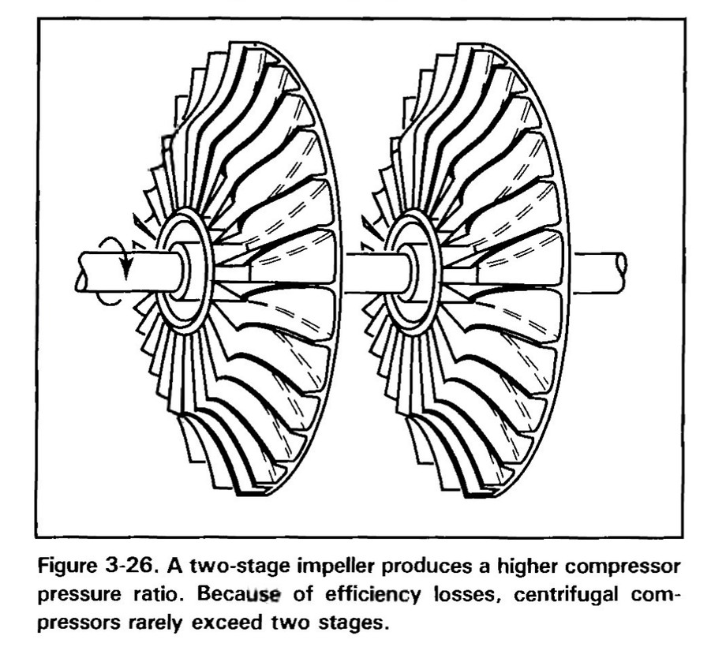
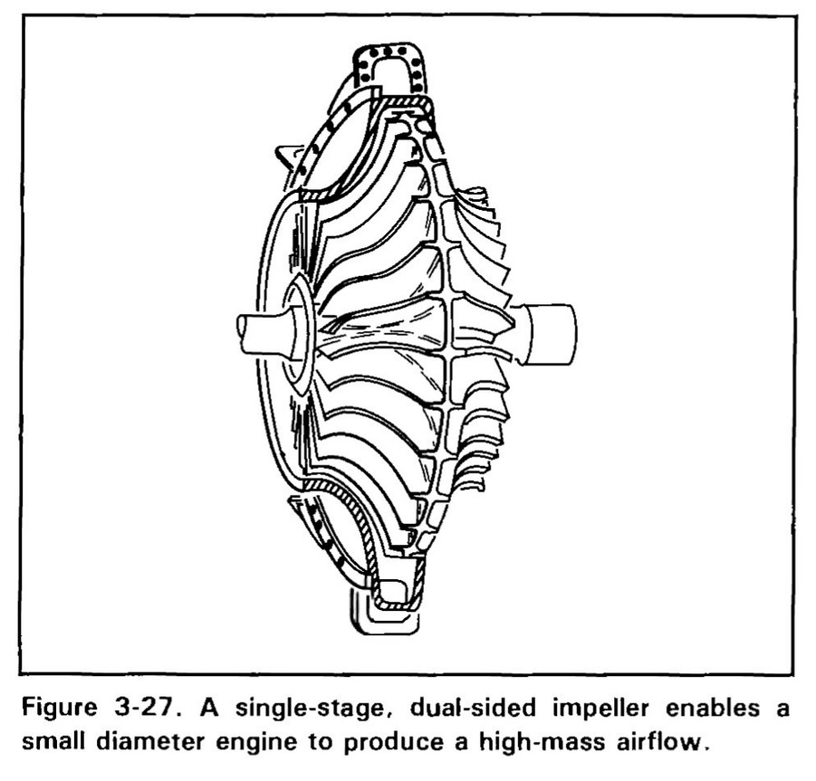
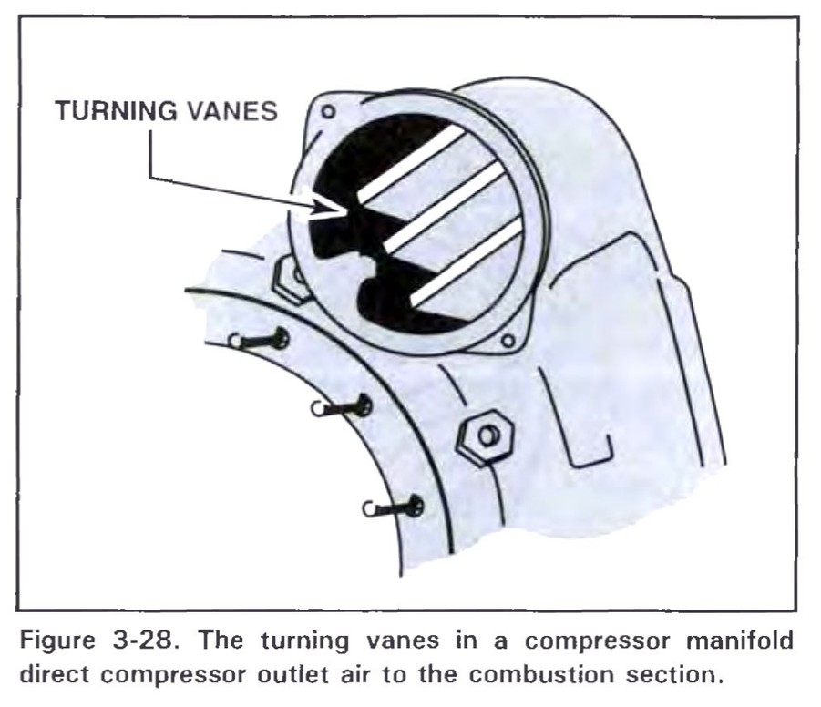
- A. 복류식 원심 압축기(double entry centrifugal compressor).double entry centrifugal compressor.
- B. 복류식 축류 압축기(double entry axial-flow compressor).double entry axial-flow compressor.
- C. 단류식 축류 압축기(single entry axial-flow compressor).single entry axial-flow compressor.
- A. 단당 압력 상승(pressure rise per stage).pressure rise per stage.
- B. 램 효율(ram efficiency).ram efficiency.
- C. 최고 효율(peak efficiency).peak efficiency.
- A. 단류(single entry)와 복류(double entry).single entry and double entry.
- B. 로터와 스테이터.rotor and stator.
- C. 임펠러와 디퓨저.impeller and diffuser.
- A. 흡입구가 두 개인 압축기.A compressor that has two intakes.
- B. 주 축에 독립적으로 연결된 2단 압축기.A two-stage compressor independently connected to the main shaft.
- C. 임펠러 양쪽에 베인이 있는 압축기.A compressor with vanes on both sides of the impeller.
- A. 낮은 시동 동력 요구.low starting power requirements.
- B. 가벼운 무게.low weight.
- C. 높은 최고 효율(high peak efficiency).high peak efficiency.
- A. 전면 면적(frontal area)이 크다.High frontal area.
- B. 덜 비싸다.Less expensive.
- C. 압축비(pressure ratio)가 더 크다.Greater pressure ratio.
- A. 압축기의 단(stage) 수.Number of stages in compressor.
- B. 압축기 입구 압력.Compressor inlet pressure.
- C. 압축기 입구 온도.Compressor inlet temperature.
- A. 압축기 단(stage) 수.number of compressor stages.
- B. 로터 직경.rotor diameter.
- C. 공기 입구 속도.air inlet velocity.
축류 압축기 심화 📙 Jeppesen 정독
Axial Flow Compressors축류 압축기는 두 개의 주요 요소, 즉 로터(rotor)와 스테이터(stator)를 가집니다. 로터는 회전하는 스핀들에 고정된 블레이드 열들을 포함합니다. 블레이드의 각도와 에어포일 윤곽이 프로펠러처럼 공기를 후방으로 밀어냅니다. 스테이터 베인은 로터 블레이드 열들 사이에 고정된 열로 배치되며 디퓨저 역할을 합니다. 각 단에서 공기 속도는 줄고 압력은 올라갑니다. 연속되는 로터 블레이드 열과 스테이터 베인 열 하나하나가 압력 단(pressure stage)을 구성합니다. 단 수는 엔진 설계에서 요구되는 공기량과 총 압력 상승으로 결정됩니다.An axial flow compressor has two main elements: a rotor and a stator. The rotor includes rows of blades fixed on a rotating spindle. The angle and airfoil contour of the blades force air rearward, much like a propeller. The stator vanes are arranged in fixed rows between the rows of rotor blades and act as diffusers. At each stage, air velocity decreases and pressure increases. Each consecutive row of rotor blades and stator vanes comprises a pressure stage. The number of stages is determined by the amount of air and total pressure rise required in the design of an engine.
15:1의 압축기 압력비를 낼 수 있는 원심 압축기와 달리, 축류 압축기의 단 하나의 단은 겨우 1.25:1의 압축기 압력비만 낼 수 있습니다. 축류 압축기로 높은 압축기 압력비를 얻는 유일한 방법은 압축기 단을 더 추가하는 것입니다.Unlike a centrifugal compressor, which is capable of compressor pressure ratios of 15:1, a single stage in an axial flow compressor is capable of producing a compressor pressure ratio of only 1.25:1. The only way to achieve high compressor pressure ratios with an axial flow compressor is by adding more compressor stages.
축류 압축기는 공기 압력을 높이지만 속도에는 전체적으로 큰 영향을 주지 않습니다. 각 압축기 단이 들어오는 공기의 압력을 높이는 동안 속도는 압축기를 지나며 번갈아 증가하고 감소합니다. 로터 블레이드가 기류를 약간 가속시키지만, 스테이터 베인이 공기를 확산시키면서 공기는 느려지고 압력은 올라갑니다. 전체적인 결과는 압축기 흡입구에서 출구까지 비교적 일정한 공기 속도를 유지하면서 공기압이 증가하는 것입니다.An axial compressor increases air pressure but has little overall effect on velocity. Each compressor stage raises the pressure of the incoming air while the velocity is alternately increased and decreased through the compressor. Rotor blades slightly accelerate the airflow, but as the stator vanes diffuse the air, it slows while increasing the pressure. The overall result is increased air pressure with relatively constant air velocity from compressor inlet to outlet.
공기가 축류 압축기를 지나면서 로터 축과 스테이터 케이싱 사이의 공간이 점차 줄어듭니다. 각 블레이드와 베인 단은 앞선 단보다 작습니다. 이 수렴이 각 압축 단에서 공기 밀도가 증가할 때 일정한 공기 속도를 유지하게 해 줍니다. 대부분의 축류 압축기에서 케이스는 수평으로 반으로 나뉘어 있어 정비사가 로터 블레이드와 스테이터 베인을 검사하고 정비할 수 있습니다. 압축기 케이스에는 또한 다양한 용도로 블리드 공기를 추출하는 장치가 마련되어 있습니다.As air passes through an axial flow compressor, the space between the rotor shaft and the stator casing gradually decreases; each stage of blades and vanes is smaller than the preceding stage. This convergence maintains a constant air velocity as air density increases in each stage of compression. On most axial flow compressors, the case is divided horizontally in halves, which permits technicians to inspect and maintain rotor blades and stator vanes. A compressor case also contains provisions to extract bleed air for a variety of uses.
축류 압축기의 단점으로는 비교적 큰 무게와 높은 시동 동력 요구량이 있습니다. 또한 단당 1.25:1이라는 낮은 압력 상승 때문에 높은 압축기 압력비를 얻으려면 많은 단이 필요합니다. 게다가 축류 압축기는 비싸고 제조가 어렵습니다. 이런 단점에도 불구하고 축류 압축기는 여러 면에서 원심류 압축기를 능가합니다. 직진 관통 설계가 램 효율을 개선하고, 단을 추가하면 더 높은 압축기 압력비가 가능합니다. 끝으로 축류 압축기의 작은 전면 면적이 공기역학적 항력을 줄여 줍니다.Disadvantages of axial flow compressors include a relatively high weight and high starting power requirements. Also, the low-pressure rise per stage of 1.25:1 requires many stages to achieve high compressor pressure ratios. Furthermore, axial flow compressors are expensive and difficult to manufacture. In spite of these drawbacks, axial flow compressors outperform centrifugal flow compressors in several areas: the straight-through design improves ram efficiency, adding stages makes higher compressor pressure ratios possible, and the small frontal area of an axial flow compressor reduces aerodynamic drag.
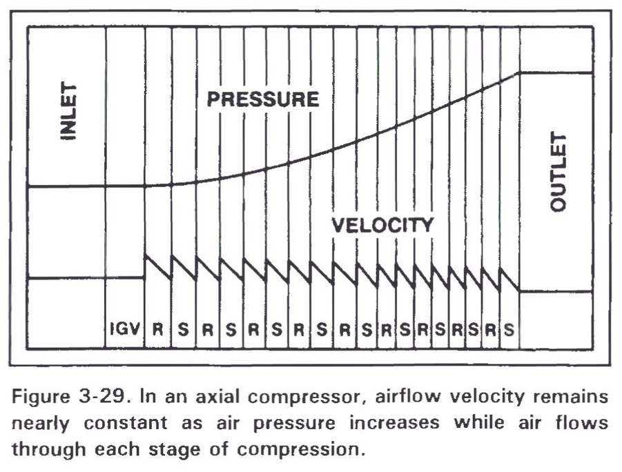
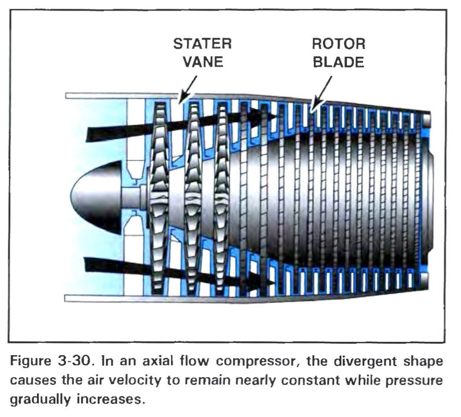
- A. 1만 옳다.only 1 is true.
- B. 2만 옳다.only 2 is true.
- C. 1, 2 모두 옳다.both 1 and 2 are true.
- A. 가스 흐름의 속도를 줄인다.decrease the velocity of the gas flow.
- B. 가스 흐름의 속도를 높인다.increase the velocity of the gas flow.
- C. 속도를 높이고 가스 압력을 낮춘다.increase the velocity and decrease the pressure of the gas.
- A. 기류 속도(velocity of the airflow)를 바꾼다.changing the velocity of the airflow.
- B. 압축기 직경을 바꾼다.changing the compressor diameter.
- C. 압축비를 증가시킨다.increasing the pressure ratio.
압축기 로터 블레이드 심화 📙 Jeppesen 정독
Compressor Rotor Blades축류 압축기에 쓰이는 로터 블레이드의 에어포일 단면은 각도가 변하는 받음각, 즉 비틀림(twist)을 가집니다. 이 비틀림은 회전축으로부터의 상대적 거리 때문에 생기는 블레이드 속도 변화를 보상합니다. 즉 블레이드의 어떤 부분이 축에서 멀수록 더 빠르게 움직입니다.The airfoil cross-section of rotor blades used in an axial flow compressor has a varied angle of incidence, or twist. This twist compensates for variations in blade velocity caused by relative distance from the rotational axis; that is, the further a section of blade is from the axis, the faster it travels.
축류 압축기는 통상 10~18개의 압축 단을 가집니다(터보팬 엔진에서는 팬을 1단 로터로 봅니다). 로터 블레이드의 밑동, 즉 루트(root)는 흔히 로터 디스크에 헐겁게 끼워지도록 설계되어 조립을 쉽게 하고 진동 감쇠를 제공합니다. 압축기 로터가 회전하면 원심력이 블레이드를 올바른 위치에 유지하고, 각 블레이드 위를 지나는 기류가 충격 흡수 또는 완충 효과를 제공합니다. 로터 블레이드 루트는 벌브(bulb), 파이어 트리(fir tree), 도브테일(dovetail) 등 여러 형상으로 설계됩니다. 블레이드가 슬롯에서 빠져나오지 못하도록 대부분의 블레이드는 핀과 락 탭 또는 로커로 결합을 고정합니다.Axial flow compressors typically have from 10 to 18 compression stages. (In a turbofan engine, the fan is considered the first stage rotor.) The base, or root, of a rotor blade is often designed to fit loosely into the rotor disk to enable easy assembly and to provide vibration dampening. As the compressor rotor rotates, centrifugal force holds the blades in their correct position, and the airstream over each blade provides a shock-absorbing or cushioning effect. Rotor blade roots are designed with a number of different shapes such as a bulb, fir tree, or dovetail. To prevent them from backing out of their slots, most blades are attached with a pin and a lock tab or locker to secure the coupling.
일부 긴 팬 블레이드는 미드스팬 슈라우드(mid-span shroud)로 지지되어 기류가 만드는 굽힘력에 더 잘 견딥니다. 이 슈라우드들은 기류의 일부를 막고 공기역학적 항력을 만들어 팬 효율을 떨어뜨립니다. 또한 미드스팬 슈라우드의 접촉면이 과도하게 마모되면 슈라우드가 서로 겹칠 수 있습니다. 이를 싱글링(shingling)이라고 하며 팬 진동과 엔진 손상을 일으킬 수 있습니다.Some long fan blades are supported by a mid-span shroud, which makes them more resistant to the bending forces created by the airstream. These shrouds block some of the airflow and create aerodynamic drag, reducing fan efficiency. In addition, when the mating surfaces on a mid-span shroud become excessively worn, the shrouds can overlap. This is known as shingling and can cause fan vibration and engine damage.
일부 블레이드는 팁이 직각으로 잘려 있으며 플랫 머신 팁(flat machine tip)이라고 부릅니다. 다른 블레이드는 팁 두께를 줄인 형태로 프로파일 팁(profile tip)이라고 합니다. 모든 회전 기계는 진동하는 경향이 있는데, 압축기 블레이드를 프로파일 가공하면 그 고유 진동수가 높아집니다. 블레이드의 고유 진동수를 회전 진동수보다 높이면 전체 진동이 줄어듭니다. 또한 프로파일 팁 블레이드의 얇은 뒷전은 와류를 만들어 공기 속도를 높이고 공기가 블레이드 팁 위로 되넘치는 것을 막아 줍니다.Some blades are cut off square at the tip and are referred to as flat machine tips. Other blades have a reduced thickness at the tips and are called profile tips. All rotating machinery has a tendency to vibrate, and profiling a compressor blade increases its natural vibration frequency; increasing the natural frequency of a blade above the frequency of rotation reduces overall vibration. Also, the thin trailing edge of profile tipped blades creates a vortex that increases air velocity and prevents air from spilling back over the blade tips.
일부 신형 엔진에서는 프로파일 팁 블레이드가 빡빡한 작동 간극으로 설계되어 마모성 재료로 된 슈라우드 스트립 안에서 회전합니다. 로터 블레이드는 통상 스테인리스강 합금으로 만들어지기 때문에, 접촉 하중이 발생하면 블레이드 길이의 손실 없이 슈라우드 스트립이 마모됩니다. 엔진 정지 후 로터가 서서히 멈추는 동안 높은 음조의 소음이 들릴 때가 있는데, 이 소음은 블레이드 팁과 슈라우드 스트립의 접촉 결과입니다. 이런 이유로 프로파일 팁 블레이드를 스퀼러 팁(squealer tip)이라고 부르기도 합니다.On some newer engines, the profile-tipped blades are designed with tight running clearances and rotate within a shroud strip of abradable material. Because rotor blades are usually made of a stainless steel alloy, if contact loading takes place, the shroud strip wears away with no loss of blade length. Sometimes after engine shutdown, a high-pitched noise is audible as the rotor coasts to a stop; this noise is a result of contact between the blade tip and shroud strip. For this reason, profile tip blades are sometimes referred to as squealer tips.
압축기 효율을 높이는 또 다른 블레이드 설계는 블레이드 팁과 루트 양쪽에서 블레이드 캠버를 국부적으로 증가시키는 방식입니다. 이 설계는 압축기 케이스 근처 공기 경계층이 만드는 마찰을 보상합니다. 증가된 블레이드 캠버가 마찰을 극복하는 데 도움을 주며, 블레이드 끝부분이 각 모서리에서 구부러진 것처럼 보이게 만들어 엔드 벤드(end bend)라는 용어가 생겼습니다.Another blade design that increases compressor efficiency uses a localized increase in blade camber, both at the blade tip and the blade root. This design compensates for friction caused by the boundary layer of air near the compressor case. The increased blade camber helps overcome the friction and makes the blade extremities appear as if they were bent over at each corner, hence the term end bend.
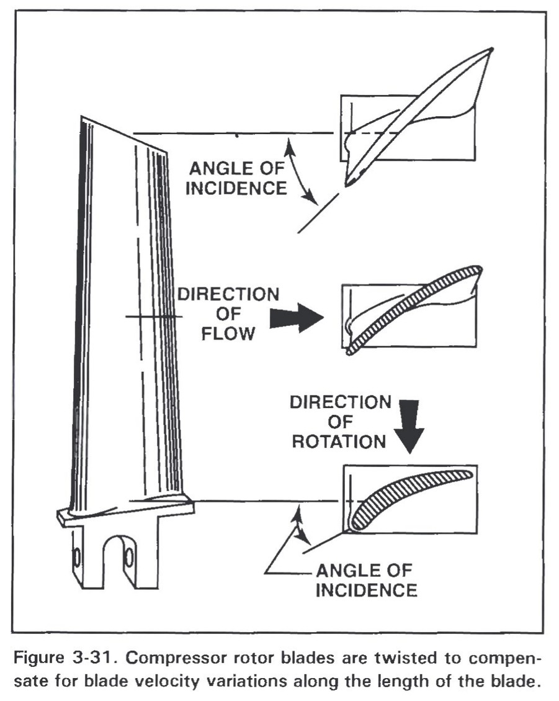
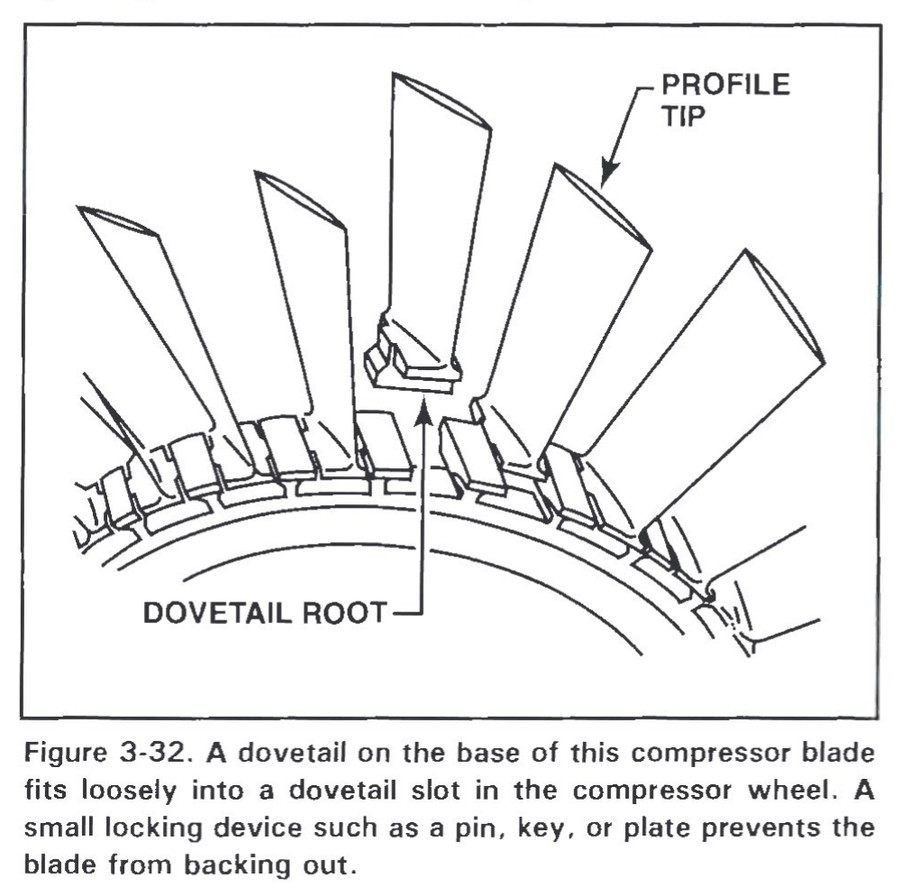
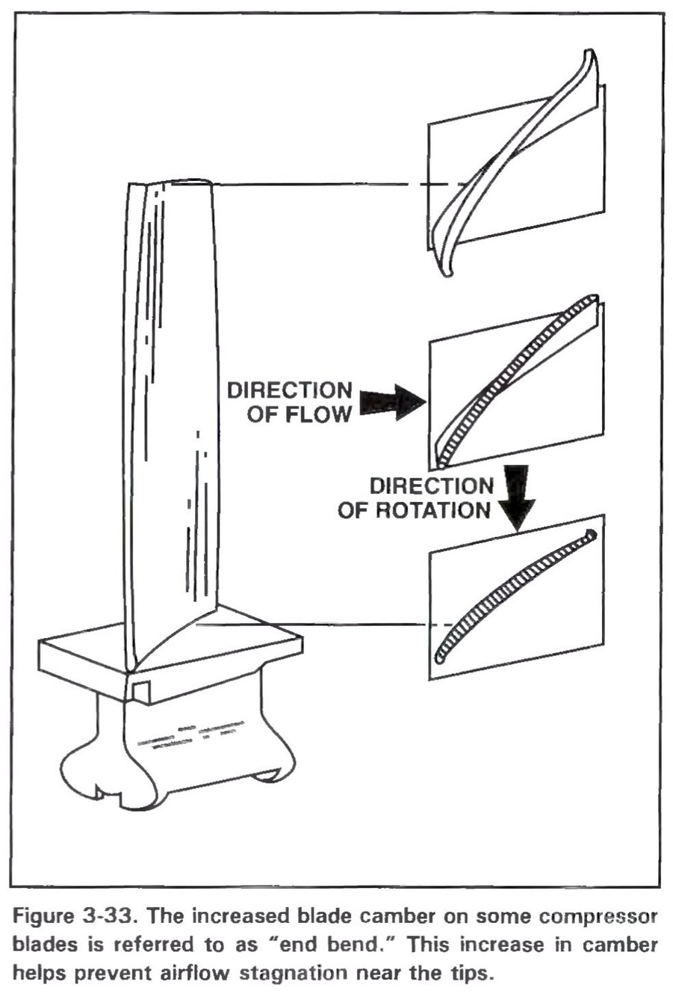
- A. 공기 속도를 높이고 와류를 방지한다.increase the air velocity and prevent swirling.
- B. 기류를 정렬하고 가속한다.straighten the airflow and accelerate it.
- C. 공기 속도를 줄이고 와류를 방지한다.decrease the air velocity and prevent swirling.
- A. 로터 블레이드(rotor blades).rotor blades.
- B. 스테이터 베인(stator vanes).stator vanes.
- C. 디스크 림(disc rims).disc rims.
- A. 압축 첫 단을 통과하는 낮은 받음각 기류.a low angle of attack airflow through the first stages of compression.
- B. 압축 첫 단을 통과하는 높은 받음각 기류.a high angle of attack airflow through the first stages of compression.
- C. 급격한 엔진 감속.rapid engine deceleration.
압축기 스테이터 베인과 IGV 심화 📙 Jeppesen 정독
Compressor Stator Vanes and Inlet Guide Vanes스테이터 베인은 축류 압축기에서 각 로터 블레이드 열 사이에 위치한 고정 블레이드입니다. 스테이터 베인은 로터에서 나오는 공기를 확산시켜 속도를 줄이고 압력을 높입니다. 스테이터는 또한 한 단에서 나오는 공기 흐름을 적절한 각도로 다음 단에 전달함으로써 선회(swirling)를 방지하는 데 도움을 줍니다.Stator vanes are stationary blades located between each row of rotor blades in an axial flow compressor. Stator vanes diffuse air coming off the rotor, which decreases its velocity and increases its pressure. Stators also help prevent swirling by directing the flow of air from one stage and delivering it to the next at an appropriate angle.
로터 블레이드처럼 스테이터 베인도 에어포일 형상을 가집니다. 스테이터 베인의 받음각은 고정식일 수도 가변식일 수도 있습니다. 스테이터 베인은 통상 강이나 니켈로 제작되는데, 이 재료들이 높은 피로 강도를 갖기 때문입니다. 저압·저온 단에서는 스테이터 베인을 티타늄으로 제작하기도 합니다.Like rotor blades, stator vanes have an airfoil shape. The angle of attack for stator vanes can be fixed or variable. Stator vanes are normally constructed out of steel or nickel because the materials possess high fatigue strength. In low-pressure and temperature stages, stator vanes are sometimes constructed from titanium.
스테이터 베인은 압축기 케이스에 직접 고정하거나, 압축기 케이스에 고정된 스테이터 베인 리테이닝 링에 고정할 수 있습니다. 대부분의 스테이터 베인은 도브테일 방식으로 열을 이루어 부착되며 로터 축을 향해 방사상으로 뻗습니다. 스테이터 베인은 진동 경향을 최소화하기 위해 팁에 슈라우드를 두는 경우가 많습니다.Stator vanes can be secured directly to the compressor case or to a stator vane retaining ring that is secured to the compressor case. Most stator vanes are attached in rows with a dovetail arrangement and radiate toward the rotor axis. Stator vanes are often shrouded at their tips to minimize vibration tendencies.
1단 로터 블레이드 앞에 위치한 스테이터 베인을 인렛 가이드 베인(inlet guide vane, IGV)이라고 합니다. 이 베인들은 기류를 최적 각도로 1단 로터 블레이드에 보내면서 엔진 회전 방향으로 선회 운동을 만들어 냅니다. 이 작용이 1단 로터 블레이드의 항력을 줄여 압축기의 공기역학을 개선합니다. 높은 압축기 압력비를 가진 일부 축류 압축기는 가변 인렛 가이드 베인과 함께 여러 단의 가변 스테이터 베인을 사용합니다. 가변 인렛 가이드 베인과 스테이터는 변화하는 운전 조건에서 엔진을 통과하는 적절한 기류를 유지하기 위해 스스로 위치를 재조정합니다.Stator vanes positioned in front of the first stage rotor blades are called inlet guide vanes. These vanes direct airflow to the first stage rotor blades at the best angle while creating a swirling motion in the direction of engine rotation. This action improves aerodynamics of the compressor by reducing drag on the first stage rotor blades. Some axial compressors with high compressor pressure ratios use variable inlet guide vanes plus several stages of variable stator vanes. Variable inlet guide vanes and stators automatically reposition themselves to maintain proper airflow through the engine under varying operating conditions.
압축기 공기가 통과하는 마지막 베인 세트는 출구 베인 조립체(outlet vane assembly)입니다. 이 베인들은 디퓨저로 가는 기류를 곧게 펴고 매끄럽게 하여 연소를 위한 공기 질량을 준비시킵니다.The last set of vanes through which the compressor air passes is the outlet vane assembly. These vanes straighten and smooth airflow to the diffuser and prepare the air mass for combustion.
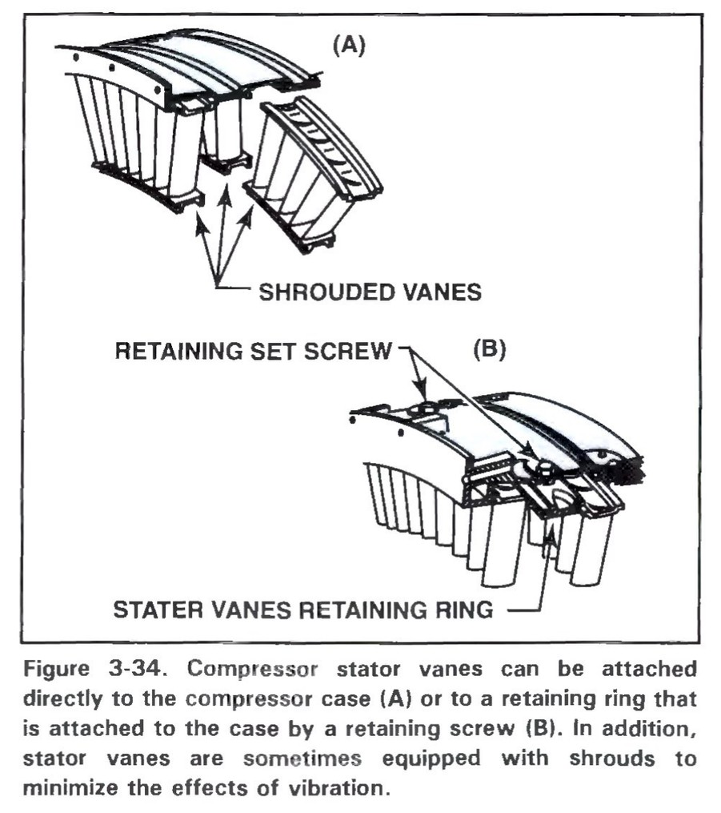
- A. 기류를 정렬하여 난류를 제거한다.To straighten airflow to eliminate turbulence.
- B. 가스 흐름을 연소실로 인도한다.To direct the flow of gases into the combustion chambers.
- C. 연소실로 들어가는 공기의 와류 운동을 증가시킨다.To increase air swirling motion into the combustion chambers.
- A. 버킷(buckets).buckets.
- B. 로터(rotors).rotors.
- C. 스테이터(stators).stators.
- A. 기류를 정렬하고 난류를 제거한다.straighten the airflow and eliminate turbulence.
- B. 속도를 높이고 와류·소용돌이를 방지한다.increase the velocity and prevent swirling and eddying.
- C. 속도를 줄이고 와류를 방지하며 압력을 낮춘다.decrease the velocity, prevent swirling, and decrease pressure.
- A. 공기를 첫 단 로터 블레이드에 적절한 각도로 인도한다.Directs the air into the first stage rotor blades at the proper angle.
- B. 속도 에너지를 압력 에너지로 변환한다.Converts velocity energy into pressure energy.
- C. 압력 에너지를 속도 에너지로 변환한다.Converts pressure energy into velocity energy.
단일·이중·삼중 스풀 압축기 심화 📙 Jeppesen 정독
Single, Dual, and Triple-Spool Compressors기본적인 축류 압축기에서는 압축기와 터빈이 하나의 샤프트로 연결되어 하나의 유닛으로 회전합니다. 압축기 유닛이 하나뿐이기 때문에 이 압축기를 흔히 단일 스풀 압축기(single-spool compressor)라고 부릅니다. 단일 스풀 압축기는 비교적 단순하고 제조 비용이 저렴하지만 몇 가지 단점이 있습니다. 예를 들어 긴 축류 압축기에서는 후방 단들이 용량의 일부만으로 작동하는 반면 전방 단들은 통상 과부하 상태가 됩니다. 게다가 단일 스풀 압축기의 큰 질량은 급격한 조작 입력 변화에 빠르게 반응하지 못합니다.In a basic axial flow compressor, the compressor and turbine are connected by a single shaft and rotate as a single unit. Because there is only one compressor unit, the compressor is commonly referred to as a single-spool compressor. Although single-spool compressors are relatively simple and inexpensive to manufacture, they have a few drawbacks. For example, in a long axial compressor, the rear stages operate at a fraction of their capacity, while the forward stages are typically overloaded. Furthermore, the large mass of a single-spool compressor does not respond quickly to abrupt control input changes.
엔진 설계자들은 압축기를 두세 개의 섹션으로 나누어 단일 스풀 압축기의 한계를 극복하는 방법을 고안했습니다. 각 섹션은 동축 샤프트로 터빈 섹션의 일부와 연결됩니다. 예를 들어 압축기 섹션이 둘인 분할 압축기 엔진을 이중 스풀(dual-spool) 또는 트윈 스풀(twin-spool) 압축기라고 합니다. 이중 스풀 압축기의 전방 섹션을 저압, 저속, 또는 N1 압축기라고 합니다. 이 저압 압축기는 통상 터빈 섹션 후방의 2단 터빈으로 구동됩니다. 트윈 스풀 압축기의 두 번째 압축기 섹션은 고압, 고속, 또는 N2 압축기라고 하며 통상 터빈 섹션 전방의 단단 고압 터빈으로 구동됩니다.Engine designers devised a way to overcome the limitations of single-spool compressors by splitting the compressor into two or three sections. Each section connects to a portion of the turbine section by coaxial shafts. For example, split-compressor engines with two compressor sections are identified as dual-spool or twin-spool compressors. The front section of a dual-spool compressor is called the low-pressure, low-speed, or N1 compressor. This low-pressure compressor is typically driven by a two-stage turbine at the rear of the turbine section. The second compressor section is called the high-pressure, high-speed, or N2 compressor and is typically driven by a single stage high-pressure turbine at the front of the turbine section.
저압 압축기와 터빈을 연결하는 샤프트는 통상 고압 압축기와 터빈을 연결하는 샤프트 안쪽에서 회전합니다. 일부 터보팬 엔진에서는 전방 팬이 저압 압축기에 부착되어 둘이 같은 속도로 돕니다. 스풀들이 물리적으로 서로 연결되어 있지 않기 때문에 각각이 자신의 최적 작동 속도를 찾아갑니다. 다만 주어진 파워 레버 설정에서 고압 압축기의 속도는 연료 조절 거버너의 설정에 따라 비교적 일정합니다.The shaft connecting the low-pressure compressor and turbine typically rotates inside the shaft connecting the high-pressure compressor and turbine. On some turbofan engines, the forward fan is attached to the low-pressure compressor and both turn at the same speed. Because the spools are not physically connected to one another, each seeks its best operating speed. However, for any given power lever setting, the speed of the high-pressure compressor is relatively constant based on the setting of the fuel control governor.
터빈에서의 에너지 수준이 일정하면, 저압 압축기의 속도는 대기압 변동이나 비행 기동으로 인한 흡입 기류의 변화에 따라 증가하거나 감소합니다. 예를 들어 항공기가 고도를 올리면 대기가 희박해져 필요한 공기량을 엔진으로 밀어 넣기 위해 더 많은 회전속도가 필요하므로 저압 압축기의 속도가 올라갑니다. 반대로 항공기가 강하하면 공기가 조밀해지고 압축이 쉬워져 저압 압축기가 느려집니다. 저압 압축기는 각 출력 설정마다 고압 압축기에 일정한 공기압과 질량 기류를 공급합니다.With a constant level of energy at the turbine, the speed of the low-pressure compressor increases or decreases with changes in the inlet air flow caused by atmospheric pressure fluctuations or flight maneuvering. For example, low-pressure compressors increase in speed as an aircraft gains altitude because the atmosphere is less dense and more rotational speed is necessary to force the required amount of air through the engine. Conversely, as an aircraft descends, air becomes more dense and easier to compress and the low-pressure compressor slows. The low-pressure compressor supplies a high-pressure compressor with a constant air pressure and mass airflow for each power setting.
많은 터보팬 엔진은 압축기 섹션이 세 부분으로 나뉘어 있으며 이를 삼중 스풀(triple-spool) 압축기라고 합니다. 이 배치에서 팬은 저속, 즉 N1 압축기라고 합니다. 다음 압축기는 중간압, 즉 N2 압축기라고 합니다. 가장 안쪽 압축기는 고압, 즉 N3 압축기라고 합니다. 저속 압축기는 통상 다단 저압 터빈으로 구동되며, 중간압과 고압 압축기는 단단 터빈으로 구동됩니다.Many turbofan engines have a compressor section divided into three sections, referred to as a triple-spool compressor. In this arrangement, the fan is referred to as the low-speed, or N1 compressor. The next compressor is called the intermediate, or N2 compressor. The innermost compressor is called the high-pressure, or N3 compressor. The low-speed compressor is typically driven by a multiple stage, low-pressure turbine. The intermediate and high-pressure compressors are driven by single stage turbines.
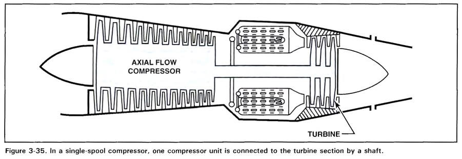
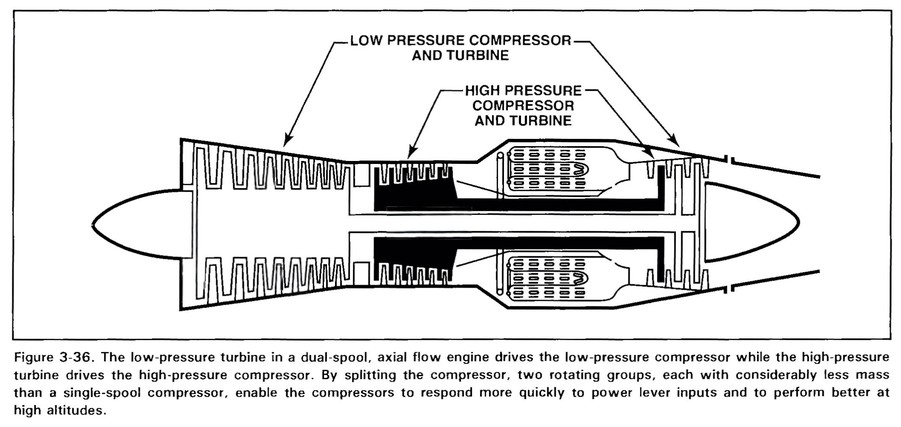
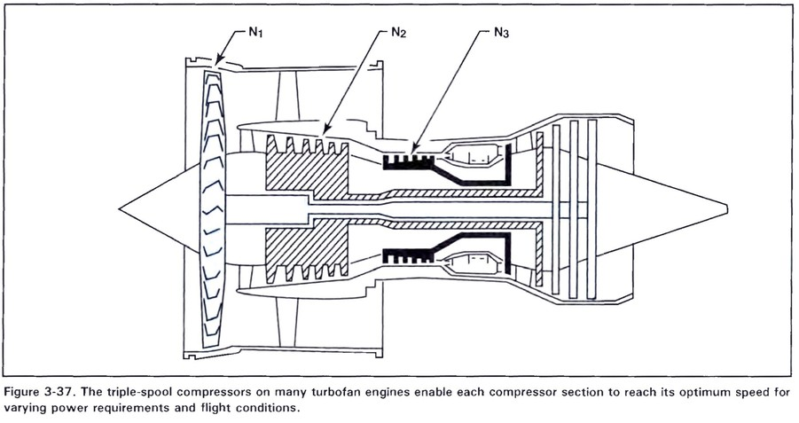
- A. 저압 압축기(low-pressure compressor).low-pressure compressor.
- B. 전방 터빈 휠(forward turbine wheel).forward turbine wheel.
- C. 고압 압축기(high-pressure compressor).high-pressure compressor.
- A. 저압 로터는 저밀도 공기에서 압축기 부하가 감소하여 속도가 증가한다.low-pressure rotor will increase in speed as the compressor load decreases in the lower density air.
- B. 고압 로터 과회전 방지를 위해 스로틀을 줄여야 한다.throttle must be retarded to prevent overspeeding of the high-pressure rotor due to the lower density air.
- C. 저압 로터는 저밀도 공기에서 압축기 부하가 감소하여 속도가 감소한다.low-pressure rotor will decrease in speed as the compressor load decreases in the lower density air.
- A. N2 압축기.N2 compressor.
- B. N1 압축기.N1 compressor.
- C. 저압 압축기(low pressure compressor).low pressure compressor.
- A. 항상 고속 압축기와 같은 속도로 회전한다.always turns at the same speed as the high speed compressor.
- B. 고속 압축기에 직접 연결되어 있다.is connected directly to the high speed compressor.
- C. 자신의 최적 작동 속도를 찾는다.seeks its own best operating speed.
- A. 각각 두 부분으로 분할된다.each split into two sections.
- B. 단일 축으로 구동된다.driven by a single shaft.
- C. 단일 고압 터빈으로 구동된다.driven by a single, high-pressure turbine.
- A. N1과 N2 압축기.N1 and N2 compressors.
- B. N2 압축기.N2 compressor.
- C. N1 압축기.N1 compressor.
압축기 실속(Compressor Stall) 심화 📙 Jeppesen 정독
Compressor Stall압축기 블레이드는 실제로 작은 에어포일이며 항공기 날개에 적용되는 것과 같은 공기역학 원리를 따릅니다. 날개처럼 압축기 블레이드도 받음각을 가집니다. 압축기 블레이드의 받음각은 흡입 공기 속도와 압축기의 회전 속도의 결과입니다. 이 두 힘이 결합해 접근하는 흡입 공기에 대한 에어포일의 실제 받음각을 정의하는 벡터를 형성합니다. 항공기 날개처럼 압축기 블레이드의 받음각도 변할 수 있습니다.Compressor blades are actually small airfoils, and are subject to the same aerodynamic principles that apply to aircraft wings. Like a wing, a compressor blade has an angle of attack. The angle of attack of a compressor blade is a result of inlet air velocity and a compressor's rotational velocity. These two forces combine to form a vector that defines the airfoil's actual angle of attack with regard to the approaching inlet air. Like an aircraft wing, the angle of attack of a compressor blade can change.
압축기 실속은 두 벡터량, 즉 흡입 속도와 압축기 회전 속도 사이의 불균형으로 설명할 수 있습니다. 압축기 실속은 압축기 블레이드의 받음각이 임계 받음각을 초과할 때 발생합니다. 이 시점에서 매끄러운 기류가 방해받아 난류와 압력 변동이 생깁니다. 압축기 실속은 압축기 안을 흐르는 공기를 느려지게 하고 정체시키며, 때로는 방향을 역전시키기도 합니다.A compressor stall can be described as an imbalance between two vector quantities: inlet velocity and compressor rotational speed. Compressor stalls occur when the compressor blade angle of attack exceeds the critical angle of attack. At this point, smooth airflow is interrupted creating turbulence and pressure fluctuations. Compressor stalls cause the air flowing in the compressor to slow down and stagnate, sometimes reversing direction.
가장 약한 형태의 압축기 실속은 맥동하거나 펄럭이는 소리로 들립니다. 발달한 상태에서 압축기 실속은 큰 폭발음처럼 들립니다. 조종실 계기가 약한 실속, 즉 일시적 압축기 실속(transient compressor stall)을 항상 지시하지는 않지만 발달한 실속은 지시합니다. 전형적인 계기 지시로는 엔진 속도의 변동과 배기가스 온도의 상승이 있습니다. 대부분의 일시적 실속은 엔진에 해롭지 않으며 한두 번의 맥동 후 스스로 회복됩니다. 그러나 심한 실속, 즉 헝 스톨(hung stall)은 엔진 성능을 크게 손상시키고 엔진 손상을 초래할 수 있습니다.In its mildest form, a compressor stall can be heard as a pulsing or fluttering sound. In a developed state, a compressor stall sounds like a loud explosion. Cockpit gauges do not always indicate a mild or transient compressor stall, but they will indicate a developed stall. Typical instrument indications include fluctuations in engine speed and an increase in exhaust gas temperature. Most transient stalls are not harmful to the engine and can correct themselves after one or two pulses. However, severe, or hung, stalls can significantly impair engine performance and result in engine damage.
압축기 실속을 극복하는 유일한 방법은 로터 블레이드의 받음각을 줄이는 것입니다. 이는 로터 블레이드에 닿는 공기의 방향을 바꾸는 가변 인렛 가이드 베인과 스테이터 베인으로 달성할 수 있습니다. 예를 들어 압축기의 회전 속도가 줄면 스테이터 베인이 점진적으로 닫혀 후속 로터 블레이드에 대한 적절한 기류 각도를 유지합니다. 스테이터 베인의 위치는 연료 조절 장치가 자동으로 제어하며, 이를 위해 연료 조절 장치는 압축기 흡입 온도와 엔진 속도를 감시합니다.The only way to overcome a compressor stall is to reduce the angle of attack on the rotor blades. This can be accomplished by variable inlet guides as well as stator vanes that change the direction of air contacting the rotor blades. For example, as the rotational speed of a compressor decreases, the stator vanes are progressively closed to maintain the appropriate airflow angle to the proceeding rotor blades. The position of stator vanes is controlled automatically by the fuel control unit, which monitors compressor inlet temperature and engine speed.
압축기 블레이드의 받음각을 바꾸는 또 다른 방법은 압축기 내부의 공기압을 빼내는 것입니다. 일부 엔진에는 저속 조건과 엔진 시동 시 작동하는 자동 공기 블리드 밸브가 있습니다. 이 자동 밸브들이 열려 압축기 고압단에 공기가 쌓이면서 생기는 압력을 해소합니다. 공기압을 조절하면 압축기 실속을 막고 엔진 시동을 쉽게 하는 데 도움이 됩니다.Another way to change the angle of attack of compressor blades is by bleeding off air pressure from within the compressor. Some engines incorporate automatic air-bleed valves that operate during low speed conditions and engine startup. The automatic valves open to relieve pressure caused by air piling up at the compressor's high-pressure end. Regulating air pressure helps prevent a compressor from stalling and makes engine starting easier.
압축기 실속은 통상 엔진 흡입 공기가 교란될 때 발생합니다. 항공기가 심한 난류 지역을 통과하거나 급격한 비행 기동을 할 때가 그렇습니다. 조종사가 급격한 엔진 가속으로 과도한 연료 유량을 만들어 엔진 속도와 기류의 조합이 맞지 않으면 압축기 실속을 유발할 수 있습니다. 압축기 블레이드, 스테이터 베인, 터빈 구성품의 물리적 오염이나 손상도 기류를 교란해 압축기 실속을 일으킬 수 있습니다.Compressor stalls typically occur when engine inlet air is disrupted, such as when an aircraft flies through areas of severe turbulence or performs abrupt flight maneuvers. A pilot can induce a compressor stall if excessive fuel flow is produced by sudden engine acceleration with an incompatible engine speed and airflow combination. Physical contamination or damage to compressor blades, stator vanes, or turbine components can also disrupt airflow and cause a compressor stall.
- A. 기류의 압력을 안정화한다.Stabilize the pressure of the airflow.
- B. 기류의 방향을 제어한다.Control the direction of the airflow.
- C. 기류의 속도를 증가시킨다.Increase the velocity of the airflow.
- A. 스테이터 베인과 로터 베인.Stator vanes and rotor vanes.
- B. 가변 가이드 베인 및/또는 압축기 블리드 밸브.Variable guide vanes and/or compressor bleed valves.
- C. 가압 및 덤프 밸브.Pressurization and dump valves.
조합형 압축기와 압축기 블리드 에어 심화 📙 Jeppesen 정독
Combination Compressors and Compressor Air Bleeds하이브리드 축류-원심류 압축기는 원심식과 축류식 압축기의 가장 좋은 특징을 결합하고 각각의 단점 일부를 없앱니다. 이 설계는 현재 비즈니스 제트와 헬리콥터에 장착된 일부 소형 엔진에 쓰이고 있습니다.Hybrid axial flow-centrifugal flow compressors combine the best features of both centrifugal and axial compressors and eliminate some of their respective disadvantages. This design is currently in use with some smaller engines installed on business jets and helicopters.
연소용 공기를 공급하는 것 외에, 압축기는 객실 여압, 난방, 냉방을 포함한 여러 부수 기능을 위해 고압·고온 공기를 공급합니다. 압축기 공기는 제빙, 방빙, 공압 엔진 시동에도 쓰일 수 있습니다. 이 공기를 블리드 에어(bleed air) 또는 압축기 블리드 에어라고 하며, 여러 위치의 블리드 포트를 통해 압축기에서 뽑아냅니다. 블리드 포트는 블리드 공기 공급을 모으는 데 사용되는 압축기 단 인접의 작은 개구부입니다.In addition to supplying air for combustion, a compressor supplies high-pressure, high-temperature air for various secondary functions including cabin pressurization, heating, and cooling. Compressor air can also be used for deicing, anti-icing, and pneumatic engine starting. This air is referred to as bleed air, or compressor bleed air, and is tapped from the compressor through bleed ports in various locations. A bleed port is a small opening adjacent to the compressor stage used to collect bleed air supply.
어느 압축기 단에서 공기를 뽑을지의 선택은 특정 기능에 필요한 압력과 온도에 달려 있습니다. 최종단, 즉 최고압 단에서 뽑은 공기는 흔히 냉각이 필요한데, 압축 작용 자체가 공기를 화씨 650도가 넘는 온도까지 가열할 수 있기 때문입니다.The choice of which compressor stage to bleed air from depends on the pressure and temperature required for a particular function. Air bled from the final or highest-pressure stage often requires cooling, because the act of compression can heat the air to temperatures in excess of 650 degrees Fahrenheit.
압축기에서 공기를 뽑아내면 엔진 출력이 작지만 눈에 띌 만큼 떨어집니다. 때로는 엔진 압력비(EPR) 지시계를 관찰해 출력 손실을 감지할 수 있습니다. 예를 들어 엔진 파워 레버를 고정된 위치에 둔 상태에서 엔진 흡입구 방빙 기능을 선택하면 EPR과 엔진 속도가 떨어집니다. 배기가스 온도(EGT) 지시도 함께 변할 수 있습니다.Bleeding air from the compressor causes a small but noticeable drop in engine power. Sometimes power loss can be detected by observing the engine pressure ratio (EPR) indicator. For example, selecting the engine inlet anti-ice function causes a drop in EPR and engine speed if the engine power lever is left in a fixed position. Exhaust gas temperature (EGT) readings might change as well.
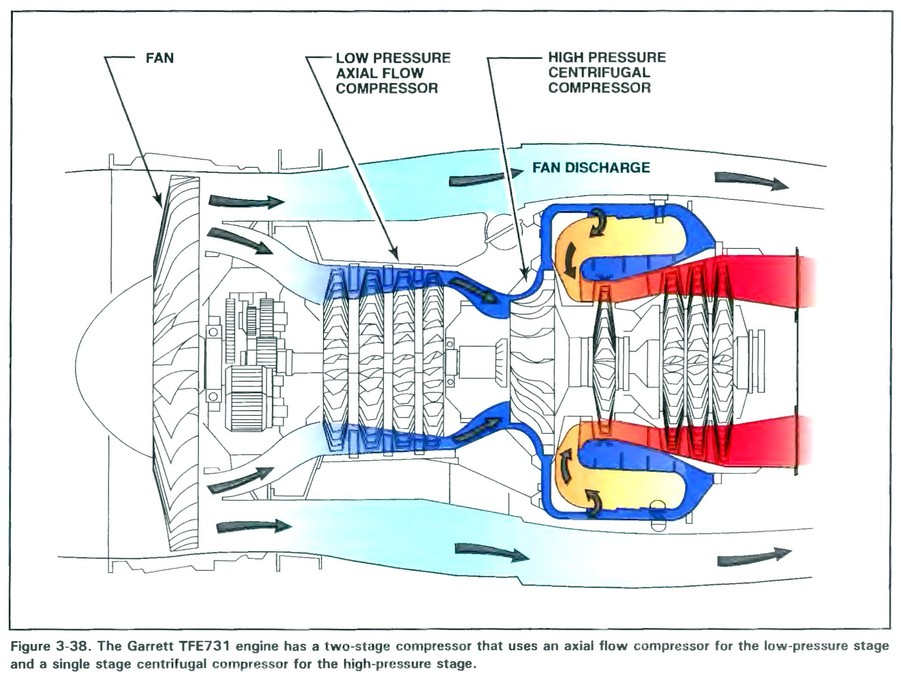
📌 압축기 블리드 공기 계통의 정비와 점검 — 블리드 공기는 압축기에서 뽑아낸 고온·고압 공기여서, 덕트를 열기 전에 엔진을 멈추고 계통 압력이 빠졌는지·충분히 식었는지 확인합니다. 덕트가 새면 주변 구조와 배선이 과열되고 과열 경고가 뜨므로, 점검은 덕트·클램프(V-밴드)·벨로우즈의 균열과 변색, 단열재, 블리드 밸브와 압력 조절·차단 밸브의 작동(위치 지시 포함), 과열 감지 소자 상태를 봅니다. 압축기 서지 방지용 블리드 밸브는 저출력에서 열리고 고출력에서 닫히는 것이 정상이며, 그렇지 않으면 실속이나 성능 저하가 생깁니다. V-밴드 클램프는 지정 토크로 조이고 재사용 한계를 지킵니다.📌 Maintaining and checking compressor bleed air systems — Bleed air is hot, high-pressure air extracted from the compressor, so before opening a duct, stop the engine and confirm that system pressure has bled off and the duct has cooled enough. A leaking duct overheats nearby structure and wiring and triggers overheat warnings, so check ducts, V-band clamps, and bellows for cracks and discoloration, the insulation, operation of bleed valves and pressure regulating and shutoff valves (including position indication), and the overheat sensing elements. Compressor anti-surge bleed valves normally open at low power and close at high power; if they do not, stalls or performance loss result. Tighten V-band clamps to the specified torque and observe their reuse limits.
- A. 2단 원심식(Dual-stage, centrifugal-flow).Dual-stage, centrifugal-flow.
- B. 분할 스풀 축류식(Split-spool, axial-flow).Split-spool, axial-flow.
- C. 단일 스풀 축류식(Single-spool, axial-flow).Single-spool, axial-flow.
디퓨저와 연소 섹션의 기본 요소 심화 📙 Jeppesen 정독
Diffuser and Basic Elements of the Combustion Section공기가 축류 압축기를 떠나 연소 섹션으로 향할 때 초당 최대 500피트의 속도로 이동합니다. 이는 연소에는 너무 빨라 크게 늦추어야 합니다. 디퓨저의 확산형 형상이 압축기 배출 공기를 늦추면서 공기압을 엔진 내 최고값까지 높입니다. 디퓨저는 통상 압축기 케이스 후방, 연소 섹션 앞에 볼트로 결합된 별도의 섹션입니다.When air leaves an axial flow compressor toward the combustion section, it travels at speeds up to 500 feet per second. This is too fast for combustion and must be slowed significantly. The divergent shape of a diffuser slows compressor discharge while increasing air pressure to its highest value in the engine. The diffuser is typically a separate section bolted to the rear of the compressor case, ahead of the combustion section.
연소 섹션은 통상 압축기 디퓨저와 터빈 섹션 사이에 바로 위치합니다. 모든 연소 섹션은 같은 기본 요소를 가집니다. 하나 이상의 연소실(연소기), 연료분사 계통, 점화원, 연료 배출 계통입니다.A combustion section is typically located directly between the compressor diffuser and turbine section. All combustion sections contain the same basic elements: one or more combustion chambers (combustors), a fuel injection system, an ignition source, and a fuel drainage system.
터빈엔진의 연소실 또는 연소기는 연료와 공기가 섞여 연소되는 곳입니다. 전형적인 연소기는 다공성 내부 라이너를 가진 외부 케이싱으로 이루어집니다. 구멍들은 다양한 크기와 형상을 가지며, 각각 라이너 안에서의 화염 전파에 특정한 영향을 줍니다.The combustion chamber or combustor in a turbine engine is where fuel and air are mixed and burned. A typical combustor consists of an outer casing with a perforated inner liner. The perforations are various sizes and shapes, all having a specific effect on the propagation of the flame within the liner.
연료분사 계통은 연료 노즐을 통해 적절한 양의 연료를 연소기로 계량해 보냅니다. 연료 노즐은 연소실 케이스나 압축기 출구 엘보에 위치합니다. 연료는 노즐을 통해 미세하게 무화된 분무 형태로 라이너 안으로 전달됩니다. 이렇게 하면 들어오는 공기와 철저히 혼합됩니다. 분무가 미세할수록 연소 과정이 더 빠르고 효율적입니다.The fuel injection system meters the appropriate amount of fuel through the fuel nozzles into the combustors. Fuel nozzles are located in the combustion chamber case or in the compressor outlet elbows. Fuel is delivered through the nozzles into the liners in a finely atomized spray, which ensures thorough mixing with the incoming air. The finer the spray, the more rapid and efficient the combustion process is.
가스터빈 엔진의 전형적인 점화원은 고에너지 커패시터 방전 계통(high-energy capacitor discharge system)으로, 익사이터 유닛 하나, 고압 케이블 두 개, 스파크 이그나이터 두 개로 구성됩니다. 이 점화계통은 분당 60~100회의 스파크를 만들어 이그나이터 전극에서 불덩어리를 형성합니다. 이 계통 중 일부는 스파크를 수 인치까지 날려 보낼 만큼 큰 에너지를 내므로, 정비 시험 중 치명적인 감전을 피하도록 주의해야 합니다.A typical ignition source for gas turbine engines is the high-energy capacitor discharge system, consisting of an exciter unit, two high-tension cables, and two spark igniters. This ignition system produces 60 to 100 sparks per minute, resulting in a ball of fire at the igniter electrodes. Some of these systems produce enough energy to shoot the sparks several inches, so take care to avoid a lethal shock during maintenance tests.
연료 배출 계통은 엔진 정지 후 연소되지 않은 연료를 배출하는 중요한 역할을 합니다. 축적된 연료를 배출하면 정지 후 엔진 화재로 인한 테일파이프 온도나 터빈 흡입구 온도 한계 초과 가능성이 줄어듭니다. 여기에 더해 연소되지 않은 연료를 배출하면 연료 매니폴드, 노즐, 연소실 안의 연료 잔류물로 생기는 검(gum) 퇴적을 예방하는 데 도움이 됩니다.A fuel drainage system accomplishes the important task of draining unburned fuel after engine shutdown. Draining accumulated fuel reduces the possibility of exceeding tailpipe or turbine inlet temperature limits caused by an engine fire after shutdown. In addition, draining unburned fuel helps prevent gum deposits caused by fuel residue in the fuel manifold, nozzles, and combustion chambers.
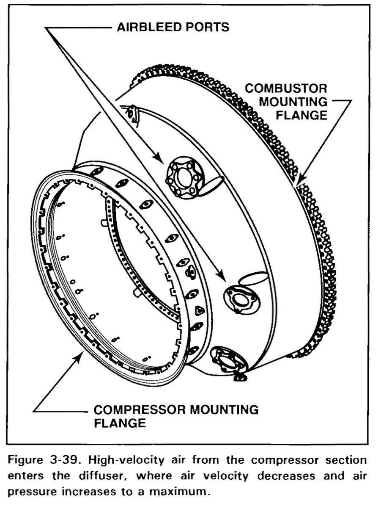
- A. 버너 섹션과 터빈 섹션 사이.the burner section and the turbine section.
- B. 스테이션 7과 스테이션 8 사이.station 7 and station 8.
- C. 압축기 섹션과 버너 섹션 사이.the compressor section and the burner section.
- A. 임펠러와 디퓨저.Impeller and diffuser.
- B. 고온부와 저온부.Hot and cold.
- C. 스테이터와 로터.Stator and rotor.
- A. 압축기, 디퓨저, 스테이터.Compressor, diffuser, and stator.
- B. 터빈, 연소, 스테이터.Turbine, combustion, and stator.
- C. 터빈, 압축기, 연소.Turbine, compressor, and combustion.
연소실 기류: 1차 공기와 2차 공기 심화 📙 Jeppesen 정독
Combustor Airflow: Primary and Secondary Air연료·공기 혼합기를 효율적으로 연소시키려면 연소실은 네 가지를 해야 합니다. 첫째, 좋은 연소를 위한 최적 비율로 연료와 공기를 효과적으로 혼합해야 합니다. 둘째, 혼합기를 가능한 한 효율적으로 연소시켜야 합니다. 셋째, 뜨거운 연소가스를 터빈 블레이드가 견딜 수 있는 온도로 냉각해야 합니다. 넷째, 뜨거운 가스를 터빈 섹션에 고르게 분배해야 합니다.To efficiently burn the fuel/air mixture, a combustion chamber must: mix fuel and air effectively in the best ratio for good combustion; burn the mixture as efficiently as possible; cool the hot combustion gases to a temperature that the turbine blades can tolerate; and distribute hot gases evenly to the turbine section.
연소 섹션이 들어오는 연료와 공기를 혼합하고 혼합기를 점화한 뒤 연소가스를 충분히 냉각할 수 있도록, 연소기를 통과하는 기류는 1차 경로와 2차 경로로 나뉩니다. 들어오는 공기의 약 25~35퍼센트가 1차 공기로 지정되고 나머지 공기가 2차 공기로 지정됩니다.To enable the combustion section to mix the incoming fuel and air, ignite the mixture, and then sufficiently cool the combustion gases, airflow through a combustor is divided into primary and secondary paths. Approximately 25 to 35 percent of the incoming air is designated as primary, and the remaining air is designated as secondary.
1차 공기, 즉 연소 공기(combustion air)는 연소기 앞쪽 끝의 라이너 안으로 유도됩니다. 이 공기가 연소기에 들어갈 때 스월 베인(swirl vane) 세트를 통과하는데, 스월 베인은 공기를 초당 5~6피트로 늦추고 와류 운동을 부여합니다. 기류 속도를 줄이는 것이 중요한 이유는 등유계 연료의 화염 전파 속도가 느리기 때문입니다. 지나치게 빠른 기류는 말 그대로 엔진 밖으로 화염을 날려 보낼 수 있습니다. 이런 상태를 플레임아웃(flameout)이라고 합니다. 화염 영역에 생긴 와류가 연료와 공기를 제대로 혼합하는 데 필요한 난류를 제공하며, 그 후 연소 과정은 연소기의 앞쪽 3분의 1에서 완료됩니다.Primary, or combustion air, is directed inside the liner in the front end of a combustor. As this air enters the combustor, it passes through a set of swirl vanes, which slow the air down to five or six feet per second and impart a vortex motion. The reduction in airflow velocity is important because kerosene-based fuels have a slow flame propagation rate; an excessively high-velocity airflow could literally blow the flame out of the engine, a condition known as a flameout. The vortex created in the flame area provides the turbulence required to mix the fuel and air properly, after which the combustion process is complete in the first third of a combustor.
연소 섹션의 2차 기류는 연소기 둘레를 따라 초당 수백 피트의 속도로 흐릅니다. 이 공기 흐름이 라이너 양쪽에 냉각 공기 담요를 형성하고 연소 화염을 중앙에 모아 라이너와 접촉하지 않게 합니다. 일부 2차 공기는 속도가 줄어 라이너의 구멍을 통해 연소기 안으로 들어갑니다. 이 공기는 남아 있는 미연소 연료의 연소를 돕습니다. 2차 공기는 또한 연소된 가스 및 냉각 공기와 섞여, 터빈 섹션이 견딜 수 있는 온도로 터빈 노즐에 에너지를 고르게 분배합니다.The secondary airflow in the combustion section flows at a velocity of several hundred feet per second around the combustor's periphery. This flow of air forms a cooling air blanket on both sides of the liner and centers the combustion flames to prevent contact with the liner. Some secondary air slows and enters the combustor through the perforations in the liner; this air supports the combustion of any remaining unburned fuel. Secondary air also mixes with the burned gases and cool air to provide an even distribution of energy to the turbine nozzle at a temperature that the turbine section can withstand.
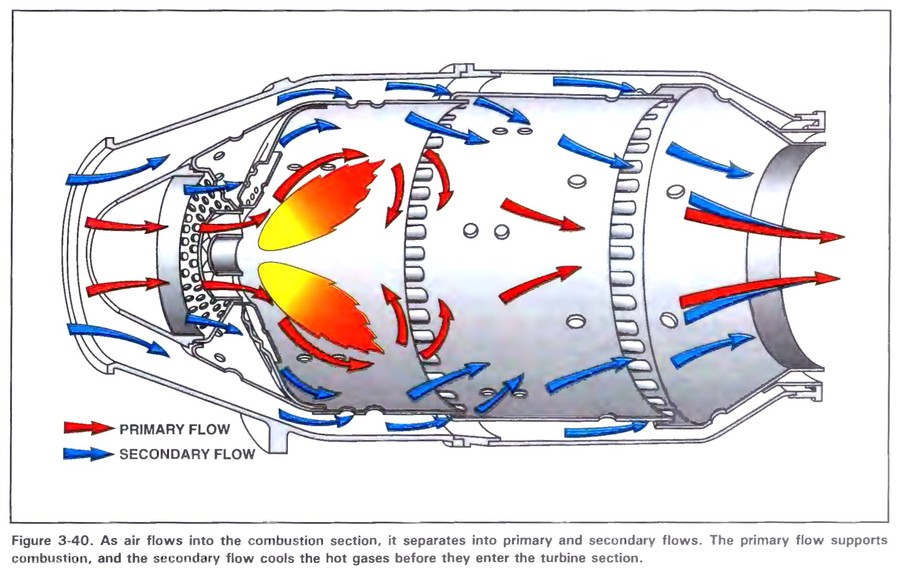
- A. 연소(Combustion) 섹션.Combustion section.
- B. 압축기(Compressor) 섹션.Compressor section.
- C. 디퓨저(Diffuser) 섹션.Diffuser section.
- A. 연소 지원과 엔진 냉각에 사용된다.used to support combustion and to cool the engine.
- B. 전부 연료와 혼합되어 연소된다.entirely combined with fuel and burned.
- C. 터빈 작용에 의해 가속·가열된다.speeded up and heated by the action of the turbines.
연소실의 세 가지 형식 심화 📙 Jeppesen 정독
Three Basic Types of Combustion Chambers연소실의 세 가지 기본 형식은 멀티플 캔형, 애뉼러(바스켓)형, 캔-애뉼러형입니다. 기능적으로는 같지만 설계와 구조가 다릅니다.The three basic types of combustion chambers are the multiple-can type, the annular (basket) type, and the can-annular type. They are the same functionally, but their design and construction are different.
멀티플 캔형 연소실은 개별 버너 유닛으로 기능하는 일련의 개별 연소기 캔으로 구성됩니다. 이 형식의 연소실은 압축기 배출 공기가 디퓨저에서 균등하게 나뉘는 방식 때문에 원심 압축기 엔진에 잘 맞습니다. 각 캔은 외부 케이스 안의 다공성 스테인리스강 라이너로 제작됩니다. 내부 라이너는 내열성이 매우 높고 검사를 위해 쉽게 떼어낼 수 있습니다. 각 연소 캔은 곡률이 커서 뒤틀림에 대한 저항이 높습니다. 그러나 이 형상은 필요한 공간의 부피와 추가되는 무게 때문에 비효율적입니다.The multiple-can combustion chamber consists of a series of individual combustor cans that function as individual burner units. This type is well suited to centrifugal compressor engines because of the way compressor discharge air is equally divided at the diffuser. Each can is constructed from a perforated stainless steel liner inside an outer case. The inner liner is highly heat resistant and easily removed for inspection. Each combustion can has a large degree of curvature that provides high resistance to warpage; however, this shape is inefficient because of the volume of space it requires and the additional weight.
전형적인 멀티플 캔형 연소실의 개별 연소기들은 작은 화염 전파관(flame propagation tube)으로 서로 연결되어 있습니다. 연소는 이그나이터 플러그가 장착된 두 개의 캔에서 시작되고, 화염이 이 관들을 통해 이동해 다른 캔의 연료·공기 혼합기를 점화합니다. 각 화염 전파관은 작은 관을 더 큰 관(재킷)이 둘러싼 형태입니다. 작은 내부 관에는 화염이 들어 있고 외부 관에는 캔 사이의 냉각·단열 기류가 흐릅니다.The individual combustors in a typical multiple-can combustion chamber are interconnected with small flame propagation tubes. The combustion starts in the two cans equipped with igniter plugs; the flame travels through the tubes to ignite the fuel/air mixture in the other cans. Each flame propagation tube consists of a small tube surrounded by a larger tube (or jacket). The small inner tube contains the flame and the outer tube contains cooling and insulating airflow between the cans.
전형적인 멀티플 캔형 연소 섹션은 캔 8개 또는 10개를 포함합니다. 대부분의 미국제 엔진에서는 엔진 후방을 바라볼 때 1번 캔이 맨 위에 오고 시계 방향으로 번호가 매겨집니다. 모든 연소기 캔은 터빈 노즐 입구의 열린 영역으로 배기가스를 배출합니다. 멀티플 캔 설계는 정비나 교환을 위해 어느 연소기든 쉽게 떼어낼 수 있다는 장점이 있으며, 주로 초기 터빈엔진 설계에 쓰였습니다.A typical multiple-can combustion section includes 8 or 10 cans. On most American-built engines, cans are numbered clockwise with the number one can on the top when facing the rear of the engine. All of the combustor cans discharge exhaust gases into an open area at the turbine nozzle inlet. The multiple-can design has the advantage of easy removal of any combustor for maintenance or replacement, and was used primarily in early turbine engine designs.
오늘날 애뉼러 연소기는 소형과 대형 엔진 모두에 흔히 쓰입니다. 열효율, 무게, 물리적 크기의 관점에서 애뉼러 연소기가 가장 효율적입니다. 애뉼러 연소실은 하우징과 다공성 내부 라이너, 즉 바스켓으로 구성됩니다. 라이너는 터빈 샤프트 하우징 외부를 둘러싸는 단일 유닛입니다. 슈라우드는 하나 이상의 동심 바스켓을 담도록 형상화됩니다. 바스켓이 둘인 애뉼러 연소기를 이중 애뉼러 연소실(double-annular combustion chamber)이라고 합니다. 통상 점화원은 멀티플 캔형 연소기에 쓰이는 것과 유사한 스파크 이그나이터 두 개로 이루어집니다.Today, annular combustors are commonly used in both small and large engines. From a standpoint of thermal efficiency, weight, and physical size, the annular combustor is the most efficient. An annular combustion chamber consists of a housing and perforated inner liner, or basket. The liner is a single unit encircling the outside of the turbine shaft housing. The shroud is shaped to contain one or more concentric baskets; an annular combustor with two baskets is known as a double-annular combustion chamber. Normally, the ignition source consists of two spark igniters similar to the type found in multiple-can combustors.
통상적인 애뉼러 연소기에서 기류는 앞에서 들어와 뒤로 배출되며, 1차·2차 기류는 멀티플 캔 설계와 거의 같습니다. 그러나 캔형 연소기와 달리 애뉼러 연소기는 수리나 교환을 위해 단일 유닛으로 떼어내야 합니다. 이는 통상 주 플랜지에서 엔진을 완전히 분리하는 작업을 수반합니다. 또한 얕은 곡률 때문에 애뉼러 연소기는 뒤틀림에 더 취약합니다. 일부 애뉼러 연소기는 역방향 기류로 설계되며, 이런 리버스 플로 연소기(reverse-flow combustor)는 통상적인 흐름 연소기와 같은 방식으로 작동합니다.In a conventional annular combustor, airflow enters at the front and is discharged at the rear, and primary and secondary airflow are much the same as the multiple-can design. However, unlike can combustors, an annular combustor must be removed as a single unit for repair or replacement, which usually involves complete separation of the engine at a major flange. Also, the shallow curvature makes this combustor more susceptible to warping. Some annular combustors are designed with a reverse direction airflow; reverse-flow combustors work the same as conventional flow combustors.
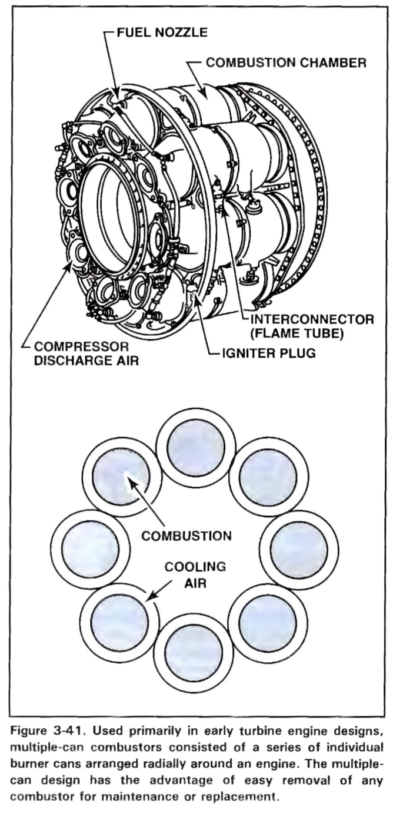
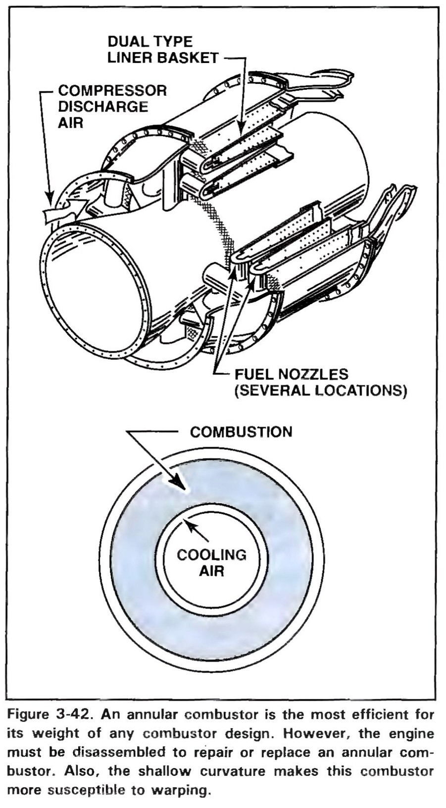
- A. 부피(volume).volume.
- B. 압력(pressure).pressure.
- C. 밀도(density).density.
- A. 캔-환형(Can-annular).Can-annular.
- B. 환형(Annular).Annular.
- C. 역류식(Reverse-flow).Reverse-flow.
- A. 1만 옳다.only 1 is true.
- B. 2만 옳다.only 2 is true.
- C. 1, 2 모두 옳지 않다.neither 1 nor 2 is true.
- A. 버너 캔.burner cans.
- B. 터빈 입구 가이드 베인.turbine inlet guide vanes.
- C. 터빈 블레이드.turbine blades.
역류식 애뉼러·캔애뉼러 연소실과 플레임아웃 심화 📙 Jeppesen 정독
Reverse-Flow & Can-Annular Combustors, and Flameout역류식(reverse-flow) 애뉼러 연소실에서는 공기가 연소실 바깥을 돌아 후방에서 유입되므로, 연소가스가 정상 공기 흐름과 반대 방향으로 엔진을 통과합니다. 이 방식은 초창기 휘틀(Whittle)의 설계에서 처음 채택되었습니다.In a reverse-flow annular combustor, air flows around the chamber and enters from the rear, so the combustion gases travel through the engine opposite to the normal airflow direction. This idea was first used in Whittle's early designs.
전형적인 역류식 애뉼러 연소실에서는 터빈 휠이 일반적인 하류(downstream) 배치와 달리 연소실 안쪽에 위치합니다. 이 구조 덕분에 엔진이 더 짧고 가벼워지며, 뜨거운 가스가 압축기 배출 공기를 예열하는 효과가 있습니다. 이런 이점이 가스가 역방향으로 흐르며 생기는 효율 손실을 어느 정도 보상해 줍니다.In a typical reverse-flow annular combustor, the turbine wheels sit inside the combustor rather than downstream. This makes the engine shorter and lighter, and lets the hot gases preheat the compressor discharge air—benefits that help offset the efficiency loss from the reverse gas flow.
캔-애뉼러(can-annular) 연소실은 멀티플 캔형과 애뉼러형을 결합한 형식으로, 프랫 앤 휘트니(Pratt & Whitney)가 개발했습니다. 전체 연소 섹션을 감싸는 탈착식 강철 슈라우드(케이싱) 안에, 총알 형태의 다공성 라이너를 가진 여러 개의 버너 캔이 엔진 축을 중심으로 방사형으로 배열됩니다. 각 버너 캔 앞쪽에는 연료 노즐 클러스터가 달리고, 노즐 주위에 프리스월 베인(pre-swirl vane)이 배치됩니다.The can-annular combustor combines the multiple-can and annular types and was developed by Pratt & Whitney. Inside a removable steel shroud (casing) that surrounds the whole combustion section, several burner cans with bullet-shaped perforated liners are arranged radially about the engine axis. A fuel-nozzle cluster is attached to the front of each can, with pre-swirl vanes placed around each nozzle.
프리스월 베인은 연료와 공기를 고르게 섞고 버너 캔 안의 축방향 공기 속도를 늦춰 연소를 촉진합니다. 개별 라이너들은 화염 전파관으로 연결되고, 두 개의 이그나이터 플러그가 점화를 시작합니다. 각 캔과 라이너는 정비 시 하나의 유닛으로 떼어내고 장착할 수 있어, 멀티플 캔형의 정비 용이성과 애뉼러형의 콤팩트함을 동시에 갖춥니다.The pre-swirl vanes promote thorough fuel/air mixing and slow the axial air velocity in the can to enhance combustion. The individual liners are connected by flame propagation tubes, and two igniter plugs start combustion. Each can and liner is removed and installed as a single unit for maintenance, combining the ease of service of the multiple-can type with the compact design of the annular type.
연소 화염은 공기 유량이 지나치게 높거나 지나치게 낮을 때 꺼질 수 있는데, 이를 플레임아웃(flameout)이라 합니다. 현대 엔진에서는 드물지만, 난기류·고고도·느린 가속·고속 기동 같은 조건이 겹치면 연소 불안정으로 완전한 플레임아웃이 발생하기도 합니다. 플레임아웃에는 두 종류가 있습니다.The combustion flame can be extinguished when airflow is either too high or too low—this is called a flameout. Although uncommon in modern engines, the right combination of turbulence, high altitude, slow acceleration, and high-speed maneuvers can cause combustion instability leading to a complete flameout. There are two types.
린 다이아웃(lean die-out)은 주로 고고도에서 낮은 엔진 회전수와 낮은 연료 압력이 약한 화염을 형성하고, 이 화염이 정상 기류에 의해 꺼지는 현상입니다. 리치 블로아웃(rich blowout)은 급격한 엔진 가속 중 과농(overly rich) 혼합기 상태에서, 연료 온도가 연소에 필요한 온도 아래로 떨어지거나 연소를 지탱할 공기량이 부족할 때 발생합니다.A lean die-out usually happens at high altitude, where low engine speed and low fuel pressure form a weak flame that a normal airflow extinguishes. A rich blowout occurs during rapid acceleration with an overly rich mixture, when the fuel temperature drops below what combustion requires or there is not enough airflow to sustain combustion.
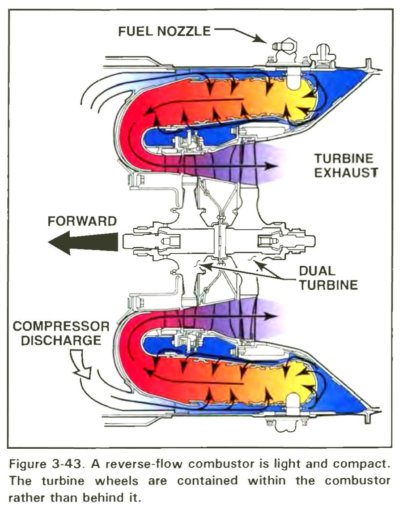
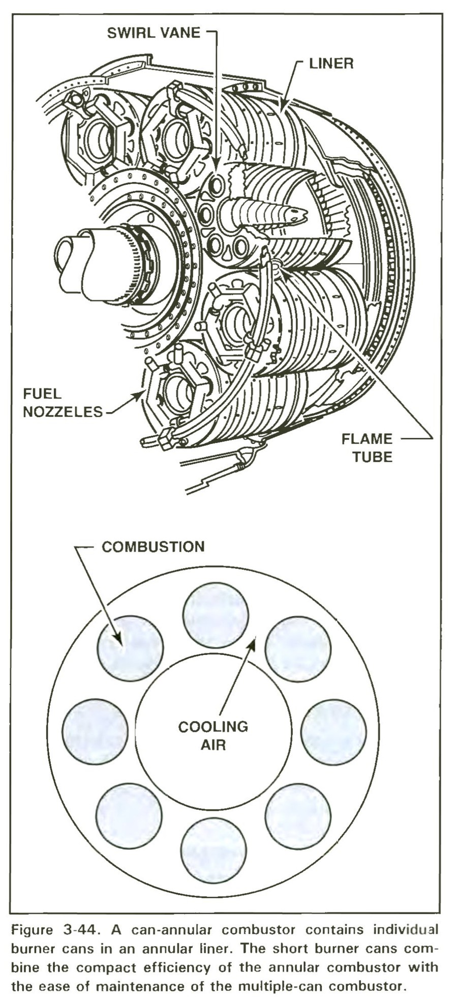
- A. 캔(Can).Can.
- B. 캔-환형(Can-annular).Can-annular.
- C. 환형(Annular).Annular.
- A. 환형(annular), 가변형, 캐스케이드 베인.Annular, variable, and cascade vane.
- B. 캔(can), 멀티플 캔, 가변형.Can, multiple-can, and variable.
- C. 멀티플 캔, 환형, 캔-환형(can-annular).Multiple-can, annular, and can-annular.
- A. 린 다이아웃(lean die-out).Lean die-out.
- B. 리치 블로아웃(rich blowout).Rich blowout.
- C. 핫 스타트(hot start).Hot start.
- A. 터빈 휠이 연소실 하류에 위치한다.The turbine wheels are located downstream of the combustor.
- B. 터빈 휠이 연소실 안쪽에 위치해 엔진이 더 짧고 가볍다.The turbine wheels sit inside the combustor, making the engine shorter and lighter.
- C. 압축기 배출 공기를 냉각하지 않는다.It does not cool the compressor discharge air.
터빈 섹션: 케이스·스테이터·슈라우드·로터 심화 📙 Jeppesen 정독
Turbine Section: Case, Stator, Shroud, and Rotor연소실에서 연료·공기 혼합기가 연소된 뒤에는 그 에너지를 추출해야 합니다. 터빈은 뜨거운 배기가스의 운동 에너지 일부를 기계적 에너지로 변환해 압축기와 부속장치를 구동합니다. 터보제트 엔진에서 터빈은 배기가스 전체 압력 에너지의 약 60~80%를 흡수합니다. 터빈 섹션은 연소 섹션 하류에 위치하며 케이스, 스테이터, 슈라우드, 로터의 네 가지 기본 요소로 구성됩니다.After the fuel/air mixture burns in the combustor, its energy must be extracted. The turbine converts part of the kinetic energy in the hot exhaust gases into mechanical energy to drive the compressor and accessories. In a turbojet engine, the turbine absorbs roughly 60–80% of the total pressure energy of the exhaust gases. Located downstream of the combustion section, the turbine section consists of four basic elements: a case, a stator, a shroud, and a rotor.
터빈 케이스는 터빈 로터와 스테이터 조립체를 감싸며 스테이터 요소를 직접 또는 간접적으로 지지합니다. 전형적인 케이스는 양 끝에 플랜지가 있어 연소 섹션과 배기 조립체에 부착할 수 있습니다.The turbine case encloses the turbine rotor and stator assembly and provides direct or indirect support to the stator elements. A typical case has flanges at each end so it can attach to the combustion section and the exhaust assembly.
스테이터 요소는 흔히 터빈 노즐(turbine nozzle)이라 불리며, 터빈 가이드 베인 또는 노즐 다이어프램이라고도 합니다. 터빈 노즐은 연소 섹션 바로 뒤, 터빈 휠 바로 앞에 위치합니다. 이 위치 때문에 터빈 노즐은 가스터빈 엔진 내에서 가장 높은 온도에 노출됩니다.The stator element is commonly called the turbine nozzle, and also the turbine guide vanes or the nozzle diaphragm. It sits just aft of the combustion section and immediately ahead of the turbine wheel. Because of this location, the turbine nozzle is exposed to the highest temperatures within the gas turbine engine.
터빈 노즐의 목적은 연소기에서 나온 고에너지 기류를 모아 적절한 각도로 터빈 로터에 부딪히도록 유도하는 것입니다. 노즐의 베인은 여러 개의 수렴 노즐을 형성하도록 윤곽과 위치가 정해져, 배기가스 압력 에너지의 일부를 속도 에너지로 변환합니다. 또한 스테이터 베인의 각도는 터빈 휠 회전 방향으로 설정되어 속도를 기계적 에너지로 가장 효율적으로 변환합니다.The turbine nozzle collects the high-energy airflow from the combustors and directs it to strike the turbine rotor at the proper angle. Its vanes are contoured and positioned to form several converging nozzles that convert some exhaust-gas pressure energy into velocity energy. The stator-vane angle is set in the direction of turbine-wheel rotation to convert that velocity into mechanical energy most efficiently.
모든 터빈 노즐에 공통되는 핵심은 노즐 베인이 열팽창을 허용하도록 제작된다는 점입니다. 그렇지 않으면 엔진의 급격한 온도 변화가 노즐 조립체를 심하게 변형·뒤틀리게 만듭니다. 한 가지 방법은 베인을 안·바깥 슈라우드 안에 느슨하게 조립하는 것입니다. 슈라우드에는 각 베인 형상에 맞춘 윤곽 슬롯이 있고, 슬롯을 베인보다 약간 크게 만들어 느슨한 끼움을 제공합니다. 강도와 강성을 위해 안·바깥 슈라우드는 지지 링으로 감싸며, 이 지지 링은 노즐 베인을 하나의 유닛으로 떼어낼 수 있게 해줍니다.A key point common to all turbine nozzles is that the vanes are built to allow thermal expansion; otherwise, rapid temperature changes would severely distort or warp the assembly. One method assembles the vanes loosely within inner and outer shrouds. The shrouds have contoured slots shaped for each vane, made slightly larger than the vanes for a loose fit. For strength and rigidity the shrouds are encased in support rings, which also let the vanes be removed as a unit.
두 번째 방법은 베인을 안·바깥 슈라우드에 단단히 용접하거나 리벳으로 고정하는 것입니다. 이때 열팽창을 허용하기 위해 안쪽 또는 바깥쪽 슈라우드 링을 여러 세그먼트로 절단합니다. 열팽창이 일어나면 슈라우드가 팽창하며 세그먼트 사이 간극을 메웁니다. 이 간극은 응력과 뒤틀림을 방지할 충분한 팽창 공간을 주도록 정밀하게 설계됩니다. 터빈 로터의 회전 요소는 샤프트와 터빈 로터(휠)로 구성됩니다.A second method rigidly welds or rivets the vanes into the shrouds. To allow expansion, the inner or outer shroud ring is cut into segments; as thermal expansion occurs, the shrouds expand and close the gaps between segments. These gaps are carefully engineered to give enough room for expansion to prevent stress and warping. The rotating elements of the turbine consist of a shaft and a turbine rotor, or wheel.
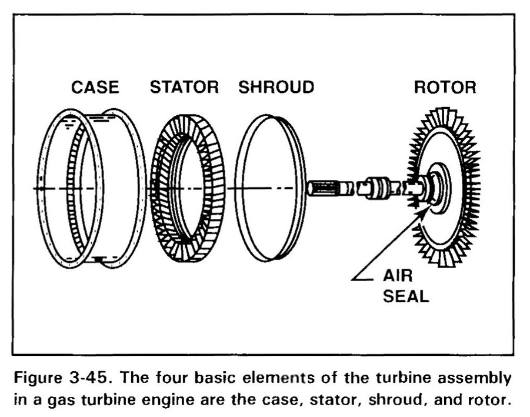
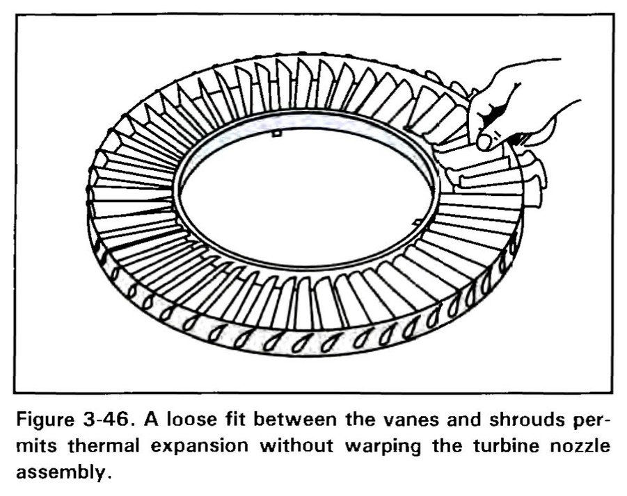
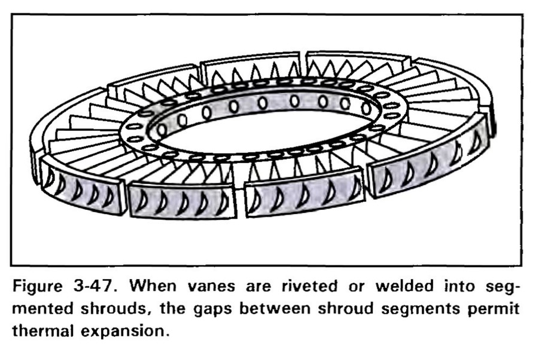
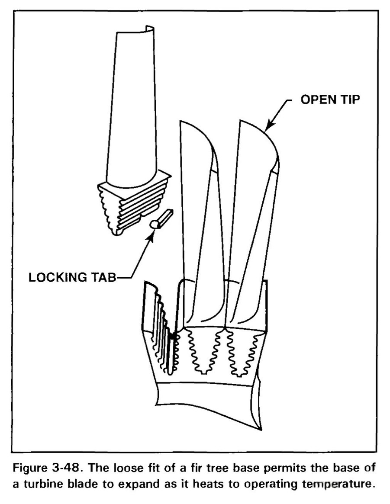
- A. 터빈 입구.At the turbine entrance.
- B. 버너 섹션 내부.Within the burner section.
- C. 압축기 출구.At the compressor outlet.
- A. 테일파이프 섹션 출구.At the outlet of the tailpipe section.
- B. 터빈 섹션 입구.At the entrance of the turbine section.
- C. 버너 섹션 입구.In the entrance of the burner section.
- A. 로터와 스테이터(Rotor and stator).Rotor and stator.
- B. 압축기와 매니폴드.Compressor and manifold.
- C. 스테이터와 디퓨저.Stator and diffuser.
- A. 속도 에너지를 압력 에너지로 변환한다.convert velocity energy into pressure energy.
- B. 압력 에너지를 속도 에너지로 변환한다.convert pressure energy into velocity energy.
- C. 공기를 첫 단 로터 베인에 적절한 각도로 인도한다.direct air into the first stage rotor vanes at the proper angle.
- A. 배기가스 속도를 감소시킨다.Decrease the velocity of exhaust gases.
- B. 연소실에서 연료 분사를 중앙에 모은다.Center the fuel spray in the combustion chamber.
- C. 원하는 각도로 가스를 터빈 블레이드에 부딪치도록 방향을 정한다.Direct the flow of gases to strike the turbine blades at the desired angle.
- A. 이 지점을 지나는 가열 가스의 속도를 감소시킨다.decrease the velocity of the heated gases flowing past this point.
- B. 가스 흐름을 터빈 블레이드의 수직선과 평행하게 인도한다.direct the flow of gases parallel to the vertical line of the turbine blades.
- C. 이 지점을 지나는 가열 가스의 속도를 증가시킨다.increase the velocity of the heated gases flowing past this point.
- A. 가스를 테일파이프로 올바른 방향으로 인도한다.Directs the gases in the proper direction to the tailpipe.
- B. 압축기를 돌릴 동력을 공급한다.Supplies the power to turn the compressor.
- C. 배기가스 온도를 높인다.Increases the temperature of the exhaust gases.
- A. 연소(Combustion).Combustion.
- B. 터빈(Turbine).Turbine.
- C. 배기(Exhaust).Exhaust.
- A. 약 20~40%.About 20–40%.
- B. 약 60~80%.About 60–80%.
- C. 약 90~100%.About 90–100%.
- A. 압축기 로터.The compressor rotor.
- B. 터빈 노즐(스테이터).The turbine nozzle (stator).
- C. 배기 콘.The exhaust cone.
- A. 무게를 줄이기 위해.To reduce weight.
- B. 급격한 온도 변화로 인한 변형·뒤틀림을 방지하기 위해.To prevent distortion and warping from rapid temperature changes.
- C. 연료 소비를 줄이기 위해.To reduce fuel consumption.
배기 노즐·애프터버너·역추진장치 심화 📙 Jeppesen 정독
Exhaust Nozzles, Afterburners, and Thrust Reversers배기 노즐의 두 가지 설계는 수렴형(converging)과 수렴확산형(converging-diverging)입니다. 수렴형 배기 노즐은 앞에서 뒤로 갈수록 지름이 작아집니다. 이 수렴 형상이 벤투리를 형성해 배기가스를 가속하고 엔진 추력을 증가시킵니다.The two exhaust-nozzle designs are the converging and the converging-diverging types. In a converging nozzle, the diameter decreases from front to back. This convergent shape forms a venturi that accelerates the exhaust gases and increases thrust.
수렴확산형 덕트는 앞에서 뒤로 갈수록 지름이 먼저 줄었다가 다시 커집니다. 수렴 부분이 터빈 배기가스를 덕트의 가장 좁은 지점에서 초음속으로 가속하고, 음속에 도달한 가스는 확산 부분에서 더욱 가속되어 음속을 훨씬 넘는 속도로 노즐을 빠져나갑니다.In a converging-diverging duct, the diameter first decreases and then increases from front to back. The converging portion accelerates the turbine exhaust to supersonic speed at the narrowest point, and once at the speed of sound the gases are accelerated further in the divergent portion, exiting well above the speed of sound.
팬(바이패스) 엔진에서는 두 개의 가스 흐름이 대기로 배출됩니다. 고온 가스는 터빈에서 배출되고, 차가운 공기 덩어리는 팬 섹션에 의해 후방으로 이동합니다. 저바이패스 엔진에서는 차가운 공기와 뜨거운 공기가 엔진을 빠져나가기 전 믹서에서 결합됩니다. 고바이패스 엔진은 보통 두 흐름을 두 개의 동축 노즐로 따로 배출하지만, 일부는 공통(통합) 노즐에서 나셀을 나가기 전 가스를 섞기 시작합니다. 배기 노즐 개구 면적은 고정식이거나 가변식일 수 있으며, 애프터버너를 쓰는 엔진에는 가변 지오메트리 노즐이 필요할 때가 있습니다.In fan (bypass) engines, two gas streams are vented to the atmosphere—hot gases from the turbine and a cool air mass moved rearward by the fan. In a low-bypass engine, the cool and hot flows combine in a mixer before exiting. High-bypass engines usually exhaust the two streams separately through coaxial nozzles, though some begin mixing in a common (integrated) nozzle before leaving the nacelle. The nozzle-opening area can be fixed or variable, and a variable-geometry nozzle is sometimes needed on afterburner-equipped engines.
애프터버너(afterburner)는 배기가스를 가속해 추력을 증가시키는 장치로, 보통 마지막 단 터빈 바로 뒤, 배기 노즐 앞에 설치됩니다. 구성 요소는 연료 매니폴드, 점화원, 플레임 홀더(flame holder)입니다. 애프터버너가 작동할 수 있는 이유는 테일파이프의 가스에 여전히 많은 산소가 남아 있기 때문입니다. 압축기 배출 공기의 약 25%만 연소를 지탱하고 나머지 약 75%는 냉각에 사용되는데, 이 냉각 공기의 일부가 터빈 후방에서 배기가스와 섞입니다.An afterburner accelerates the exhaust gases to increase thrust and is typically installed just aft of the last-stage turbine and ahead of the exhaust nozzle. It consists of a fuel manifold, an ignition source, and a flame holder. It works because the tailpipe gases still contain much oxygen: only about 25% of compressor discharge air supports combustion while roughly 75% is used for cooling, and part of that cooling air mixes with the exhaust aft of the turbine.
테일파이프 입구에는 애프터버너 노즐(스프레이 바)이 달린 연료 매니폴드가 있어 연료를 테일파이프에 분사합니다. 연료와 공기가 섞여 애프터버너에서 점화·연소하고, 이때 발생하는 추가 열이 배기가스를 가속해 추가 추력을 만듭니다. 연료와 공기를 확실히 섞기 위해 연료 노즐 하류에 관 격자나 스포크 형태의 장애물인 플레임 홀더를 두어, 다가오는 가스가 소용돌이치며 충분히 섞이게 합니다.At the tailpipe entrance a fuel manifold with afterburner nozzles (spray-bars) injects fuel into the tailpipe. The fuel and air mix, ignite, and burn in the afterburner, and the added heat accelerates the exhaust to create extra thrust. To ensure thorough mixing, a tubular grid or spoke-shaped obstruction called a flame holder is placed downstream of the nozzles so the approaching gases swirl and mix well.
애프터버너를 사용하면 온도와 추력이 극적으로 증가하므로 배기 노즐 면적을 반드시 키워야 합니다. 그렇지 않으면 터빈 후방에 배압이 생겨 터빈 온도가 안전 수준을 넘어 상승합니다. 노즐 크기를 키우면 배기가스 온도를 허용 한계 내로 유지할 수 있습니다. 애프터버너는 주로 군용기의 이륙 보조나 급격한 상승 속도 확보에 쓰이며, 추력을 최대 100%까지 증가시킬 수 있지만 연료 유량은 정상보다 3~5배 높아집니다.Because an afterburner dramatically raises temperature and thrust, the exhaust-nozzle area must be enlarged; otherwise back pressure behind the turbine would push turbine temperature past safe limits. Enlarging the nozzle keeps exhaust-gas temperature within tolerable limits. Afterburners are used mainly on military aircraft to assist takeoff or produce rapid climb-out, and can add as much as a 100% thrust increase—though fuel flow rises three to five times above normal.
대부분의 터빈 엔진 항공기에서는 착륙 시 브레이크만으로 항공기를 충분히 감속하기 어렵기 때문에 역추력장치(thrust reverser)가 사용됩니다.On most turbine-engine aircraft, the brakes alone cannot adequately slow the aircraft during landing, so thrust reversers are used.
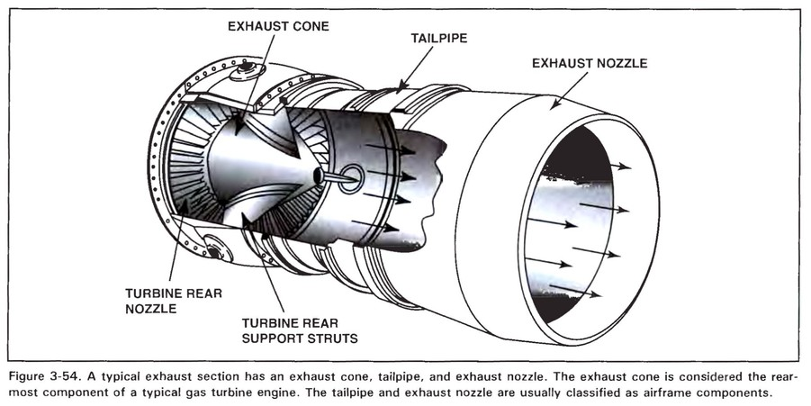
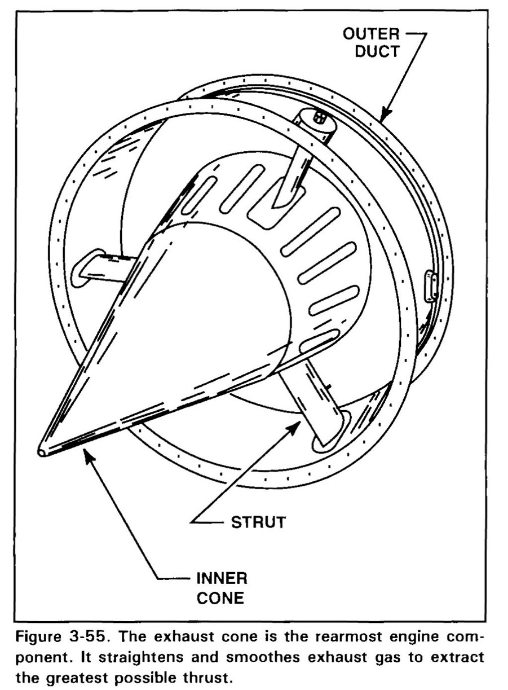
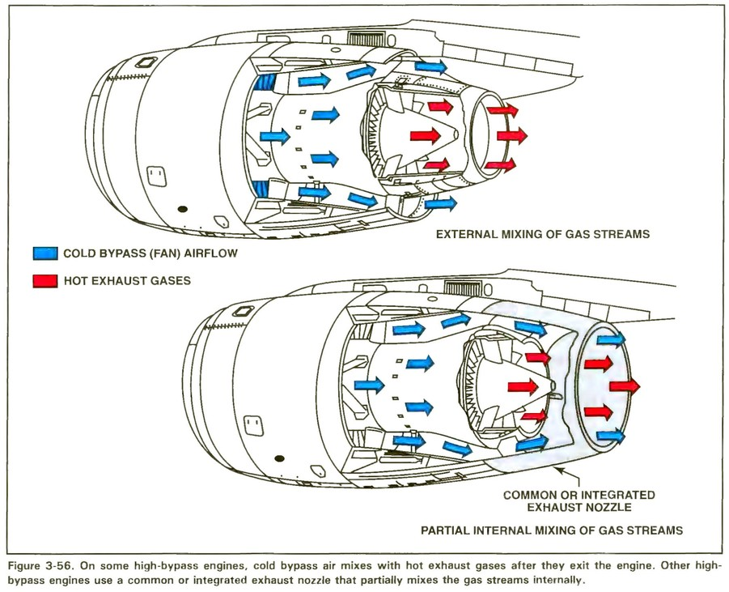
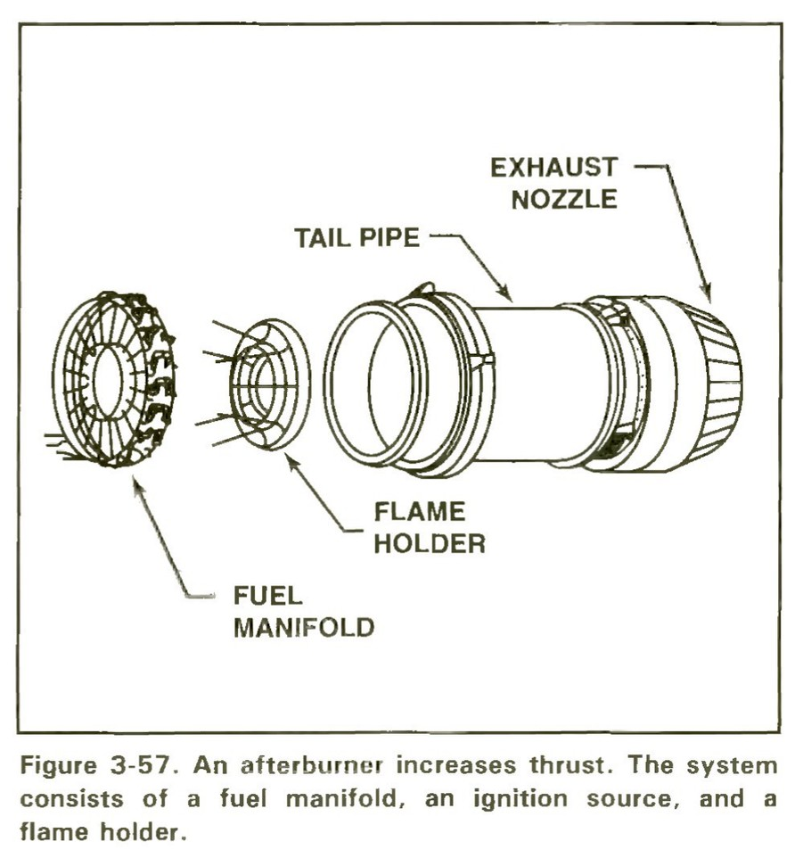
- A. 증가하고 속도는 감소한다.increase and the velocity to decrease.
- B. 증가하고 속도는 증가한다.increase and the velocity to increase.
- C. 감소하고 속도는 증가한다.decrease and the velocity to increase.
- A. 충동형, 수렴형, 충동-수렴형.impulse, converging, and impulse-converging.
- B. 충동형, 반동형, 충동-반동형.impulse, reaction, and impulse-reaction.
- C. 충동형, 발산형, 충동-발산형.impulse, diverging, and impulse-diverging.
- A. 덕트의 가장 넓은 지점.At the widest part of the duct.
- B. 덕트의 가장 좁은 지점.At the narrowest part of the duct.
- C. 노즐 입구.At the nozzle inlet.
- A. 테일파이프의 가스에 여전히 많은 산소가 남아 있기 때문.Because the tailpipe gases still contain much oxygen.
- B. 터빈이 산소를 추가로 공급하기 때문.Because the turbine supplies extra oxygen.
- C. 연료가 산소 없이 연소하기 때문.Because fuel burns without oxygen.
- A. 추력을 줄이기 위해.To reduce thrust.
- B. 터빈 후방 배압으로 터빈 온도가 안전 수준을 넘는 것을 막기 위해.To prevent back pressure behind the turbine from pushing turbine temperature past safe limits.
- C. 연료 소비를 늘리기 위해.To increase fuel consumption.
터빈 엔진 정비: 블렌딩과 손상 허용 기준 심화 📙 Jeppesen 정독
Turbine Engine Maintenance: Blending and Damage Limits인렛 가이드 베인이 손상되었더라도 손상이 베인 외피(outer shell)를 관통하지 않았다면 블렌딩(blending)과 컨투어링(contouring)으로 수리할 수 있습니다. 단, 수리 후 형상이 수렴하는 것처럼 보여서는 안 되고, 가이드 베인에서 조각이 떨어져 나간 흔적이 없어야 합니다.If an inlet guide vane is damaged but the damage does not penetrate the vane's outer shell, it can be repaired by blending and contouring. However, the repaired area must not appear to be converging, and the vane must show no sign of pieces breaking away.
축류 압축기 블레이드의 경미한 손상은 수리 부위를 제조사 한계 내로 유지할 수 있을 때 외측 절반(outer half)에서 수리할 수 있습니다. 일부 제조사는 특정 기준에 따라 손상을 수리하지 않고 남겨두는 것을 허용합니다. 예를 들어 블레이드 앞전 또는 뒷전의 경미한 손상이 양쪽에서 보이고, 외측 절반에 국한되며, 잘 둥글려져 있고, 허용 한계 내라면 손상을 수리하지 않고 둘 수 있습니다.Minor damage on the outer half of an axial-flow compressor blade is repairable when the repaired area stays within the manufacturer's limits. Some manufacturers allow damage to be left unrepaired under certain criteria—for example, light leading- or trailing-edge damage that is visible from both sides, confined to the outer half, well-rounded, and within limits may be left unrepaired.
블레이드 내측 절반(inner half)의 손상은 중대하므로, 손상의 심각도와 제조사 요구사항에 따라 경미한 손상이라도 수리하거나 블레이드를 교체해야 합니다. 압축기 블레이드의 크랙은 크기에 관계없이 허용되지 않으며 반드시 블레이드를 교체해야 합니다.Damage on the inner half of a blade is critical, so even minor damage must be repaired—or the blade replaced—depending on severity and the manufacturer's requirements. Cracks of any size on a compressor blade are unacceptable and require blade replacement.
연소 섹션 부품 복원에는 여러 방법이 쓰입니다. 크랙이 생긴 부품은 대개 용접할 수 있고, 마모된 일부 부품은 세라믹 코팅 공정으로 두께를 다시 쌓아 복원합니다. 대부분의 연소 부품 수리 공정은 전문 장비가 필요해 인증된 수리소에서만 가능합니다. 연소 라이너의 크랙 수리에는 용접이 가장 널리 쓰이며, 라이너 재질에 따라 공정이 달라집니다. 연소 라이너는 보통 스테인리스강으로 제작되어 불활성 가스 용접이나 전자빔 용접으로 수리할 수 있습니다. 용접 후에는 용접 공정으로 생긴 응력을 완화하기 위해 열처리해야 합니다.Various methods restore combustion-section parts. Cracked parts can usually be welded, and some worn parts are restored with a ceramic-coating process to build up thickness. Most combustion-part repairs need specialized equipment found only at certified repair stations. Welding is the most common way to repair cracks in combustion liners, with the process depending on the liner material. Liners are typically stainless steel and can be repaired by inert-gas or electron-beam welding; after welding, the part must be heat-treated to relieve stress from the welding process.
터빈 섹션의 허용 손상량은 제조사마다 다르므로 특정 손상이 허용되는지 판단할 때는 제조사 지침을 참조해야 합니다. 일반적인 지침으로, 터빈 블레이드의 앞·뒷면에는 최대 3개의 nick, dent, pit이 허용됩니다. 그러나 필렛(fillet)에서 1/4인치 이내에는 nick, dent, pit이 단 1개만 허용됩니다. 앞전과 뒷전 등 일부 영역에도 경미한 손상이 허용될 수 있으나, 수리 가능한 손상량은 대체로 제한적입니다.The permissible turbine-section damage varies by manufacturer, so always consult the manufacturer's instructions. As a general guideline, up to three nicks, dents, or pits are allowed on the front and rear faces of a turbine blade—but only one is allowed within a quarter inch of a fillet. Some minor damage may also be allowed on the leading and trailing edges, though the serviceable amount is usually limited.
터빈 블레이드에 흔한 또 다른 손상은 침식(erosion)입니다. 침식 수리법 하나는 전자빔 용접으로 블레이드에 새 조각을 용접하는 것으로, 새 조각을 붙인 뒤 블레이드를 적절한 형상으로 연삭하고 응력 완화를 위해 열처리합니다. 플라스마 코팅(plasma coating)으로도 침식을 수리할 수 있는데, 이 공정에서는 미립화된 금속을 사용합니다.Another common turbine-blade damage is erosion. One repair welds a new piece of blade using electron-beam welding, after which the blade is ground to shape and heat-treated to relieve stress. Plasma coating can also repair erosion, a process that uses atomized metallic material.
- A. 블레이드 앞전(leading edge).The leading edge of the blade.
- B. 감소된 블레이드 팁 두께(reduced blade tip thickness).A reduced blade tip thickness.
- C. 블레이드 루트의 곡률(curvature of the blade root).The curvature of the blade root.
- A. 크기에 관계없이 블레이드를 교체한다.Replace the blade regardless of size.
- B. 외측 절반이면 블렌딩으로 수리한다.Blend-repair it if on the outer half.
- C. 한계 내이면 수리하지 않고 둔다.Leave it unrepaired if within limits.
- A. 1개.One.
- B. 3개.Three.
- C. 제한 없음.No limit.
- A. 리벳 고정.Riveting.
- B. 용접(불활성 가스 또는 전자빔).Welding (inert-gas or electron-beam).
- C. 접착제 접합.Adhesive bonding.
터빈 로터와 터빈 블레이드 심화 📙 Jeppesen 정독
Turbine Rotor and Turbine Blades터빈 휠은 회전 디스크에 블레이드가 부착된 동적 균형(dynamically balanced) 유닛입니다. 터빈 디스크는 블레이드를 고정하며 볼트나 용접으로 메인 샤프트에 결합됩니다. 샤프트는 외륜과 베어링 하우징 사이에 오일로 윤활되는 베어링에서 회전하며, 이 구조가 진동을 줄이고 샤프트의 약간의 정렬 오차를 허용합니다.The turbine wheel is a dynamically balanced unit of blades attached to a rotating disk. The disk anchors the blades and is bolted or welded to the main shaft. The shaft turns in bearings lubricated by oil between the outer race and bearing housing, which reduces vibration and allows slight shaft misalignment.
고속 가스가 터빈 노즐을 지나 블레이드에 부딪히면 터빈 휠이 회전합니다. 일부 엔진에서는 하나의 터빈 휠만으로 압축기와 부속장치를 구동할 충분한 에너지를 배기가스에서 흡수하지 못하므로, 여러 개의 터빈 단(stage)을 사용합니다. 각 단은 터빈 노즐과 휠로 구성됩니다.When high-velocity gases pass through the nozzle and strike the blades, the wheel rotates. In some engines a single wheel cannot absorb enough energy to drive the compressor and accessories, so multiple turbine stages are used, each stage consisting of a nozzle and a wheel.
고속 회전에 의한 심한 원심 하중과 높은 작동 온도는 터빈 블레이드에 극심한 응력을 가합니다. 때때로 이 응력은 블레이드가 길이 방향으로 늘어나게 하는데, 이를 방치하면 이 신장(크리프, creep)으로 블레이드가 엔진 외부 케이싱에 마찰될 수 있습니다.The severe centrifugal loads from high rotational speed and the high operating temperatures place extreme stress on the blades. At times this can stretch the blades lengthwise; if unchecked, this growth (creep) can cause the blades to rub the engine's outer casing.
터빈 블레이드는 뜨거운 가스 흐름에서 최대 에너지를 뽑아내도록 에어포일(airfoil) 형상으로 설계됩니다. 합금 조성에 따라 단조(forged)하거나 주조(cast)합니다. 초기 블레이드는 강 단조품이었으나, 오늘날 대부분은 니켈 기반 주조 합금입니다. 단조든 주조든 성형 후에는 원하는 형상으로 마무리 연삭해야 합니다. 금속 대안으로 강화 세라믹 블레이드가 개발 중인데, 세라믹은 고온을 견뎌 더 높은 엔진 효율을 가능하게 할 수 있어 초기에는 매우 높은 온도로 작동하는 소형 고속 터빈에 적용될 가능성이 큽니다.Blades are airfoil-shaped to extract maximum energy from the hot gas flow. They are forged or cast depending on alloy composition. Early blades were steel forgings, but today most are cast nickel-based alloys. Either way, the blade is finish-ground to shape after forming. Reinforced ceramic blades are being developed as an alternative; ceramic's heat tolerance may allow greater efficiency, with likely first use in small, high-speed turbines running at very high temperatures.
터빈 블레이드는 엔진이 차가울 때는 디스크에 느슨하게 끼워지지만 정상 작동 온도에서는 팽창해 꼭 맞게 됩니다. 가장 널리 쓰이는 장착 방식은 터빈 디스크 림에 파이 트리(fir tree) 슬롯을 절삭하고, 여기에 맞는 베이스를 블레이드 밑부분에 주조·가공하는 것입니다. 장착 후 블레이드는 피닝(peening), 용접, 리벳, 록 탭(lock tab) 중 하나로 홈에 고정됩니다. 피닝은 블레이드 파이 트리 루트 모서리에 작은 노치를 갈아둔 뒤, 삽입 후 인접한 디스크 금속을 노치에 피닝해 채우는 방식이 흔합니다.Blades fit loosely into the disk when cold but expand to a tight fit at operating temperature. The most common attachment is fir-tree slots cut into the disk rim matching bases cast or machined into the blade root. After installation, blades are retained by peening, welding, rivets, or lock tabs. A common peening method grinds a small notch in the blade's fir-tree root, then peens adjacent disk metal into the notch after insertion.
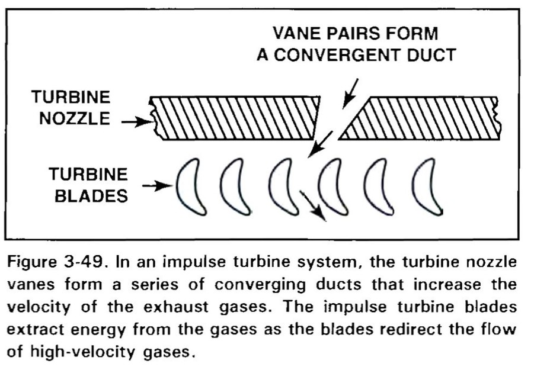
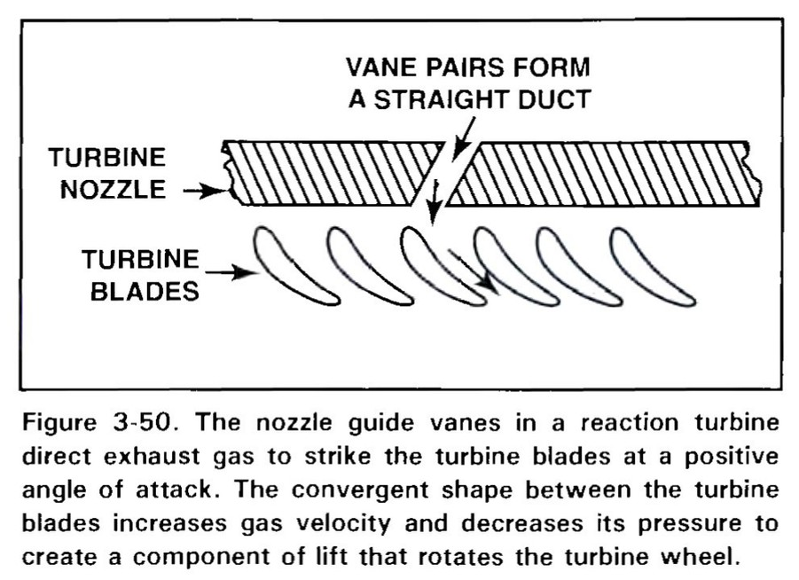
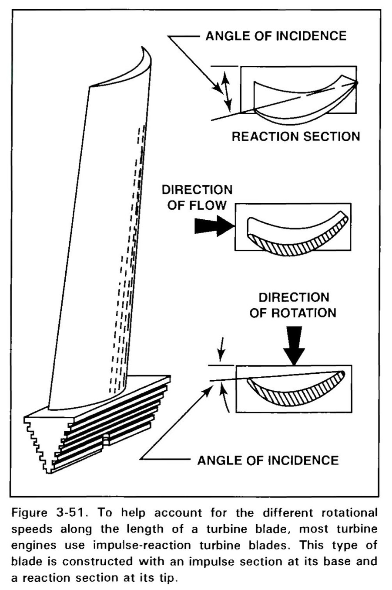
터빈 블레이드의 세 가지 유형과 슈라우드 심화 📙 Jeppesen 정독
Impulse, Reaction, and Impulse-Reaction Blades & Shrouds터빈 블레이드는 일반적으로 임펄스(impulse), 반동(reaction), 임펄스-반동(impulse-reaction) 조합형으로 분류됩니다. 임펄스 블레이드를 쓰는 터빈에서는 블레이드가 단지 터빈 노즐에서 오는 기류의 방향만 바꾸고 가스 압력이나 속도는 거의 변화시키지 않습니다. 터빈 휠은 기류 방향을 바꾸는 데 필요한 힘을 흡수해 회전 운동으로 변환합니다.Blades are generally classified as impulse, reaction, or combination impulse-reaction. In an impulse turbine, the blades merely change the direction of airflow from the nozzle with almost no change in gas pressure or velocity; the wheel absorbs the force needed to redirect the flow and converts it to rotary motion.
반동 터빈 블레이드는 공기역학적 작용으로 회전력을 만듭니다. 블레이드가 일련의 수렴 덕트를 형성해 가스 속도를 높이고 압력을 낮추는데, 그 결과는 에어포일에서 일어나는 것과 유사해 낮아진 압력이 양력을 만들되 그 힘이 회전 방향으로 작용합니다.Reaction blades produce a turning force by aerodynamic action: the blades form a series of converging ducts that increase gas velocity and reduce pressure. The result is like an airfoil—the reduced pressure creates a lifting force, but here it acts in the direction of rotation.
블레이드 길이 방향으로 작업 부하를 더 고르게 분배하기 위해, 대부분의 현대 터빈 엔진은 임펄스-반동 블레이드를 사용합니다. 이 블레이드는 베이스가 임펄스 형상, 팁이 반동 형상으로 되어 있어 블레이드 전 길이에 걸쳐 균일한 속도·압력 강하를 만듭니다.To distribute the workload more evenly along the blade, most modern engines use impulse-reaction blades—impulse-shaped at the base and reaction-shaped at the tip—producing uniform velocity and pressure drop across the whole blade length.
터빈 블레이드는 끝이 열려(open) 있거나 슈라우드(shrouded)로 덮여 있을 수 있습니다. 오픈팁 블레이드는 고속 터빈에, 슈라우드 블레이드는 회전 속도가 느린 터빈에 흔히 쓰입니다. 슈라우드 블레이드는 각 블레이드 팁에 슈라우드가 부착되어, 장착 시 서로 맞닿아 지지력을 제공하고 진동을 크게 줄입니다. 슈라우드는 또한 블레이드 팁 위로 공기가 새는 것을 막아 효율을 높입니다. 다만 무게가 늘어나 슈라우드 블레이드는 블레이드 성장(growth)에 더 취약합니다.Blade ends can be open or shrouded. Open-tip blades are used on high-speed turbines, shrouded blades on slower ones. With shrouds, a shroud attaches to each blade tip; installed, the shrouds contact one another for support, greatly reducing vibration, and also prevent air from escaping over the tips, improving efficiency. The added weight, however, makes shrouded blades more prone to blade growth.
슈라우드 블레이드 주위 기류 특성을 더 개선하기 위해, 슈라우드 바깥면에 나이프에지 실(knife-edge seal)을 가공해 블레이드 팁에서의 공기 손실을 줄입니다. 나이프에지 실은 바깥 터빈 케이스에 장착된 슈라우드 링에 좁은 공차로 끼워집니다.To further improve airflow around shrouded blades, a knife-edge seal is machined around the outside of the shroud to reduce tip air losses; it fits with close tolerance into a shrouded ring in the outer turbine case.
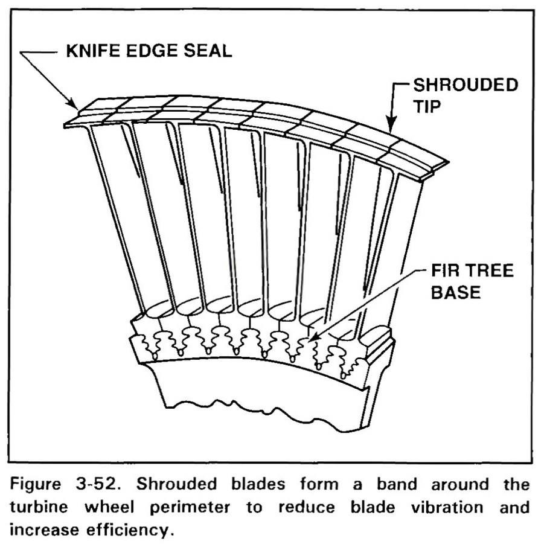
- A. 전나무형 블레이드 부착(fir-tree blade attachment).fir-tree blade attachment.
- B. 충동형 블레이드.impulse type blades.
- C. 슈라우드(shrouded) 터빈 로터 블레이드.shrouded turbine rotor blades.
- A. 터빈 블레이드 끝이 띠(band) 또는 슈라우드를 형성하도록 만들어진 것.The turbine blades are shaped so that their ends form a band or shroud.
- B. 터빈 휠이 고장 시 블레이드를 가두는 보호 슈라우드로 둘러싸인 것.The turbine wheel is enclosed by a protective shroud to contain the blades in case of failure.
- C. 터빈 휠에 블레이드 냉각 공기를 공급하는 슈라우드/덕트가 있는 것.The turbine wheel has a shroud or duct which provides cooling air to the turbine blades.
터빈 냉각·역회전 터빈·배기 섹션 심화 📙 Jeppesen 정독
Turbine Cooling, Counter-Rotating Turbines, and Exhaust Section터빈 섹션의 온도는 가스터빈 엔진 작동에서 가장 제한적인 요소입니다. 현대 엔진은 저압·고압 공기를 함께 사용하는 여러 공기 냉각법을 조합해 터빈 베인과 블레이드를 내부·표면 모두 냉각합니다. 추가 냉각을 위해 터빈 베인 슈라우드에 냉각 구멍을 뚫기도 합니다.Turbine-section temperature is the most limiting factor in gas-turbine operation. Modern engines combine several air-cooling methods using both low- and high-pressure air for internal and surface cooling of the vanes and blades, and the vane shrouds may be perforated with cooling holes for extra cooling.
대형 엔진에는 흔하지 않지만, 일부 소형 터보샤프트 엔진은 역회전(counter-rotating) 터빈 휠을 사용합니다. 역회전 터빈은 자이로스코프 효과를 감쇠하고 엔진 진동을 줄이는 데 효과적이어서 채택되며, 공기역학적 이점은 없습니다.Uncommon in large engines, some small turboshaft engines use counter-rotating turbine wheels. They are used to dampen gyroscopic effects and reduce vibration, but provide no aerodynamic advantage.
배기 섹션의 설계는 터보제트 엔진이 발생시키는 추력에 직접 영향을 줍니다. 배기 섹션과 그 구성품의 형상·크기는 터빈 입구 온도(turbine inlet temperature), 엔진을 통과하는 질량 유량, 배기 제트의 속도·압력에 영향을 줍니다. 전형적인 배기 섹션은 터빈 섹션 후방부터 배기가스가 엔진을 떠나는 지점까지 이어지며, 배기 콘·배기 덕트(테일파이프)·배기 노즐로 구성됩니다.The exhaust-section design directly affects thrust. The shape and size of the section and its parts affect turbine inlet temperature, mass airflow through the engine, and the velocity and pressure of the exhaust jet. A typical exhaust section runs from the rear of the turbine to where gases leave the engine, and includes the exhaust cone, the exhaust duct (tailpipe), and the exhaust nozzle.
배기 콘 조립체는 외부 덕트(셸), 내부 콘(테일 콘), 3개 이상의 방사형 중공 스트럿, 그리고 스트럿이 콘을 덕트 중앙에 고정하도록 돕는 타이 로드 그룹으로 구성됩니다. 외부 덕트는 보통 스테인리스강이며 터빈 케이스 후방 플랜지에 부착됩니다. 배기 콘의 목적은 터빈 배출 가스를 하나의 제트로 모으는 것입니다. 외부 덕트와 내부 콘 사이의 확산 통로 때문에 배기 콘 내 가스 속도는 약간 감소하고 압력은 상승합니다. 방사형 스트럿은 내부 콘을 지지하고, 터빈에서 약 45도 각도로 나오는 소용돌이치는 배기가스를 직선화합니다.The exhaust cone assembly consists of an outer duct (shell), an inner cone (tail cone), three or more radial hollow struts, and tie rods that help the struts center the cone. The outer duct is usually stainless steel, attached to the turbine case rear flange. Its purpose is to collect turbine discharge gases into a single jet; the diverging passage between shell and cone slightly decreases gas velocity while pressure rises, and the radial struts support the inner cone and straighten the swirling gases that would otherwise leave the turbine at about a 45-degree angle.
테일파이프는 배기 콘에서 배기(제트) 노즐로 배기가스를 안전하게 유도하는 배기 섹션의 연장부입니다. 테일파이프는 열과 덕트 마찰 손실 때문에 엔진 작동 효율을 낮추고, 배기가스 속도가 떨어지면 추력이 감소합니다. 테일파이프는 거의 동체 내부에 장착된 엔진에만 쓰이며, 이때 주변 기체를 보호합니다. 나셀(포드)에 장착된 엔진은 보통 테일파이프가 필요 없고 배기 노즐이 배기 콘 조립체에 직접 장착됩니다. 배기(제트) 노즐은 배기가스에 최종 속도 상승을 제공합니다.The tailpipe is an extension that safely directs gases from the exhaust cone to the exhaust (jet) nozzle. It lowers efficiency through heat and duct-friction losses, and reduced exhaust velocity reduces thrust. Tailpipes are used almost only with fuselage-installed engines, protecting the surrounding airframe; nacelle- or pod-mounted engines usually need no tailpipe, mounting the nozzle directly to the exhaust cone. The exhaust (jet) nozzle gives the gases a final velocity boost.
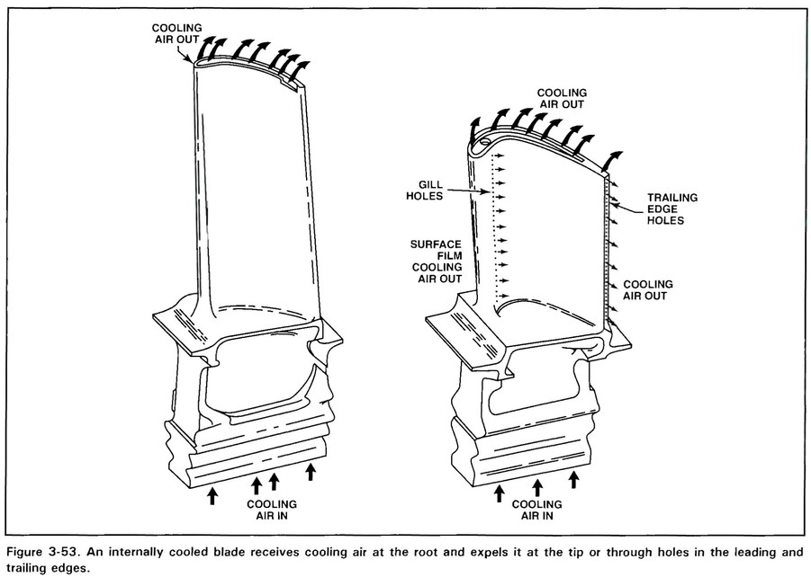
- A. 배기가스를 모으고 소음 억제기 역할을 한다.collect the exhaust gases and act as a noise suppressor.
- B. 배기가스를 단일 배기 제트로 와류시키고 모은다.swirl and collect the exhaust gases into a single exhaust jet.
- C. 배기가스를 정렬하고 모아 고체(solid) 배기 제트로 만든다.straighten and collect the exhaust gases into a solid exhaust jet.
- A. 진동을 줄인다.reduce vibration.
- B. 팁 속도를 높인다.increase tip speed.
- C. 공기 유입을 줄인다.reduce air entrance.
- A. 터빈 조립체의 균형(balancing)을 돕기 위해.To facilitate balancing of the turbine assembly.
- B. 압축기와 터빈 사이 압력을 안정시키기 위해.To help stabilize the pressure between the compressor and the turbine.
- C. 단일 휠이 흡수할 수 있는 것보다 더 많은 동력을 배기가스에서 추출하기 위해.To extract more power from the exhaust gases than a single wheel can absorb.
부속기어박스·엔진 스테이션 번호·소음 억제 심화 📙 Jeppesen 정독
Accessory Gearbox, Engine Station Numbering, and Noise Suppression부속기어박스(accessory drive gearbox)의 위치는 유선형 엔진 프로파일을 유지하도록 설계됩니다. 부속 구동부는 엔진의 전방·중간부·후방에 위치할 수 있으며, 흡입구와 배기구 위치가 부속품 위치를 결정하는 경우가 많습니다. 후방 장착 기어박스는 보통 가장 좁은 엔진 지름과 가장 낮은 항력 구성을 제공합니다.The accessory drive gearbox is located to keep a streamlined engine profile. Accessory drives may be on the front, mid-section, or rear, and inlet/exhaust locations often dictate their placement. Rear-mounted gearboxes typically give the narrowest engine diameter and lowest drag.
부속품을 구동하는 동력은 대개 엔진 메인 동력 샤프트에서 얻습니다. 베벨 기어가 부속 샤프트를 구동해 부속기어박스 내 기어를 돌리고, 이 기어박스가 각 부속품의 장착 위치를 제공합니다. 터빈 엔진은 고속으로 작동하므로 부속품을 적절한 속도로 구동하려면 감속 기어가 필요하며, 일부는 중간(전달) 기어박스로 필요한 감속비를 얻습니다. 대형 고바이패스 엔진의 부속 구동 시스템은 엔진에서 최대 500마력까지 가져갈 수 있습니다.Power to drive accessories usually comes from the engine's main power shaft. Bevel gears drive an accessory shaft to turn the gearbox gears, which provide mounting points for each accessory. Because turbine engines run at high speed, reduction gearing is needed to drive accessories at the right speed, and some use an intermediate (transfer) gearbox. On a large high-bypass engine the accessory drive can take up to 500 horsepower.
엔진 제조사는 터빈 엔진의 가스 경로를 따라 여러 지점에 스테이션 번호(station number)를 부여합니다. 동체 스테이션처럼, 정비 시 특정 영역을 빠르고 정확하게 찾도록 돕고 압력·온도 측정 위치를 정합니다. 예를 들어 엔진 압력비(EPR, Engine Pressure Ratio)는 엔진 입구와 마지막 터빈 로터 이후의 공기 압력을 비교해 추력을 결정합니다. 엔진마다 흡입·배기 덕트가 달라 표준 라벨로 EPR 측정 위치를 표시합니다. 엔진 입구는 스테이션 Pt2(스테이션 2의 전압력), 터빈 배출 압력은 Pt7에서 측정하므로 EPR은 Pt7/Pt2로 표현됩니다. 온도가 필요한 계기는 Tt 라벨을 쓰며, 엔진 입구 온도는 스테이션 Tt2에서 측정합니다.Manufacturers assign station numbers along the engine's gas path. Like fuselage stations, they let a technician quickly locate areas during maintenance and set pressure/temperature reading points. For example, EPR (Engine Pressure Ratio) compares air pressure at the inlet and after the last turbine rotor to determine thrust. Because inlets and exhausts differ between engines, standard labels mark EPR points: the inlet is station Pt2 (total pressure at station 2) and turbine discharge is Pt7, so EPR is Pt7/Pt2. Instruments needing temperature use the Tt label, with inlet temperature at station Tt2.
소음은 제트 엔진에서 연료를 연소할 때 생기는 의도치 않은 부산물입니다. 인구 밀집 지역 주변의 소음 제어는 엔진 설계자와 운영자가 최소화하려 노력하는 중요한 문제입니다. 터빈 엔진 소음의 상당 부분은 뜨겁고 빠른 가스와 엔진 주위의 차갑고 느린 공기가 섞이면서 발생합니다. 이 소음은 저주파와 고주파 진동을 모두 포함하며, 저주파가 지배적입니다.Noise is an unintended byproduct of burning fuel in a jet engine. Controlling it near populated areas is a significant issue designers and operators work to minimize. Much turbine noise comes from mixing hot, high-velocity gases with the cold, low-velocity air around the engine, producing both low- and high-frequency vibration, with low frequencies predominant.
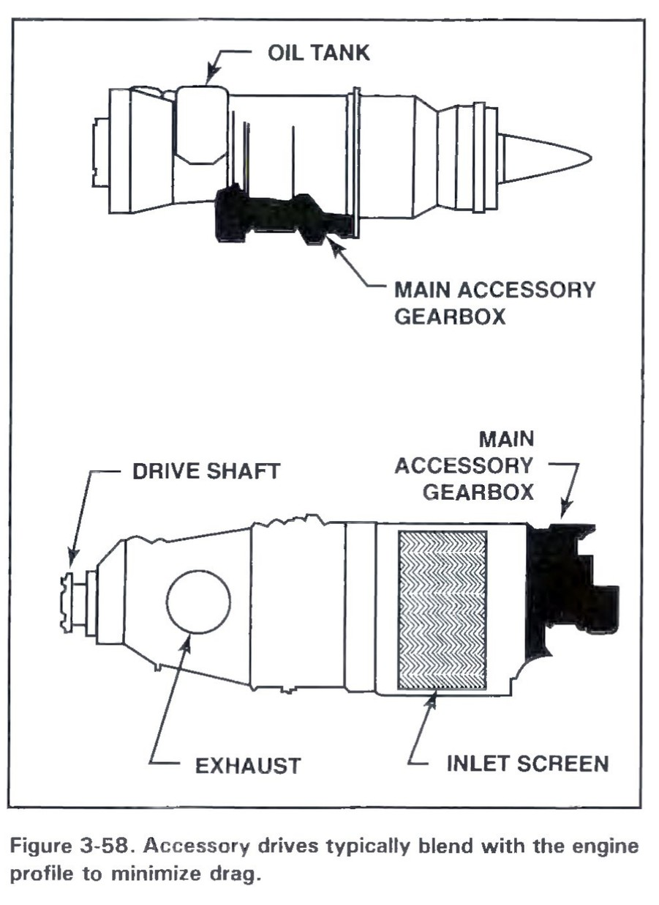
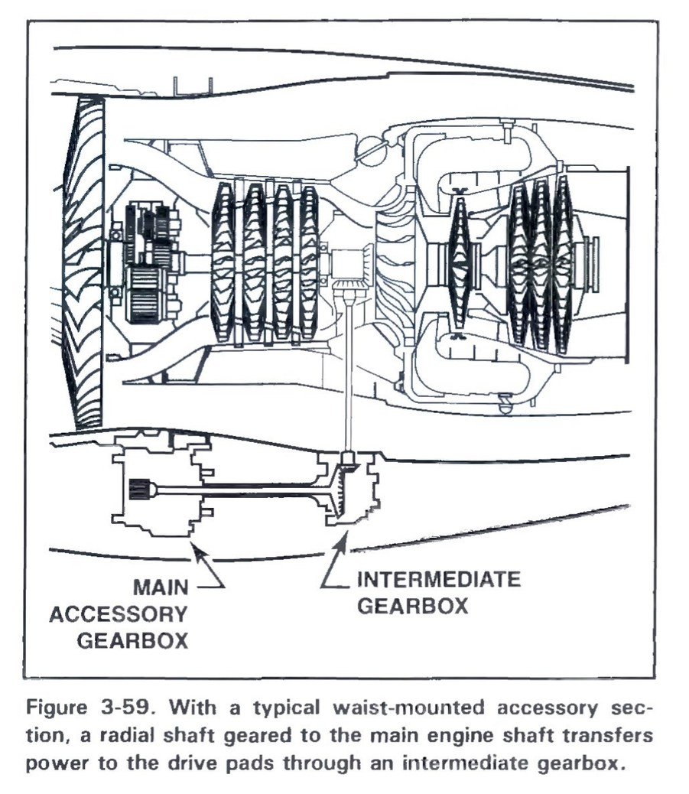
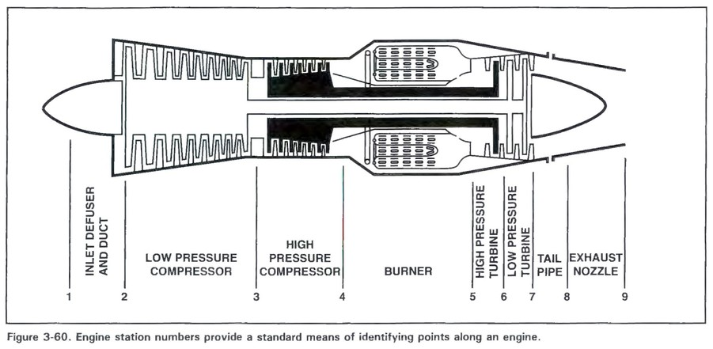
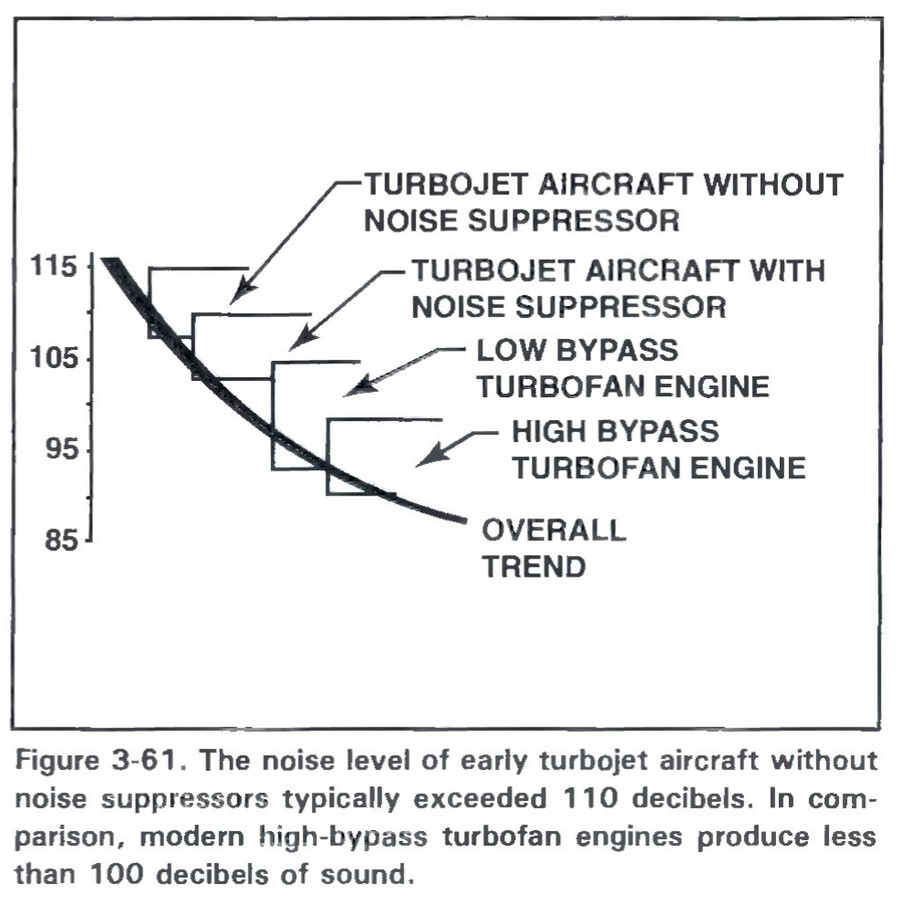
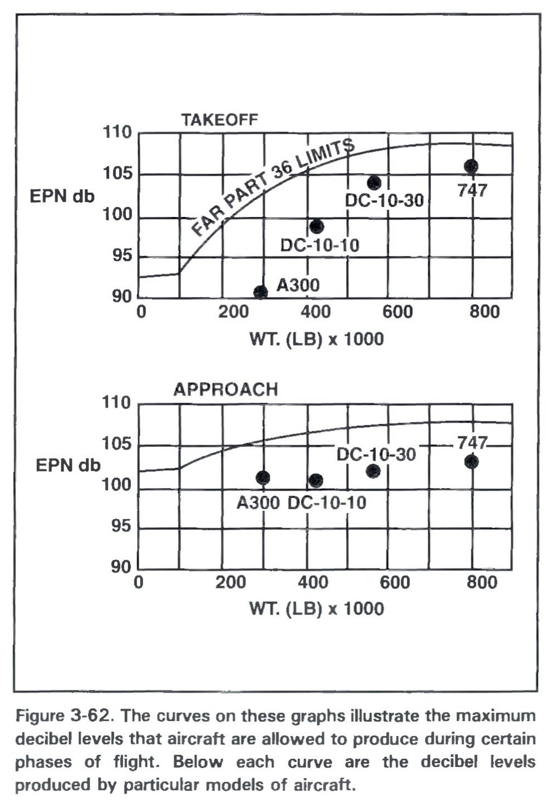
터빈 엔진 계기: 배기가스 온도(EGT)와 EICAS 심화 📙 Jeppesen 정독
Turbine Engine Instruments: EGT and EICAS가스터빈 엔진 작동에서 결정적 제한 요소는 터빈 섹션의 온도입니다. 터빈 블레이드와 배기 섹션 부품의 과열을 막으려면 터빈 섹션 온도를 감시해야 하며, 가장 흔한 방법이 배기가스 온도(EGT, Exhaust Gas Temperature) 게이지입니다.A critical limiting factor in gas-turbine operation is the temperature of the turbine section. To prevent overheating of the turbine blades and exhaust-section parts, this temperature must be monitored—most commonly with an exhaust gas temperature (EGT) gauge.
EGT 계통을 구분하는 특징은 온도 센서의 위치입니다. 흔한 터빈 온도 게이지에는 터빈 입구 온도(TIT, Turbine Inlet Temperature), 터빈 출구 온도(TOT, Turbine Outlet Temperature), 단간 터빈 온도(ITT, Interstage Turbine Temperature), 터빈 가스 온도(TGT, Turbine Gas Temperature)가 있습니다.EGT systems differ by sensor location. Common turbine-temperature gauges include turbine inlet temperature (TIT), turbine outlet temperature (TOT), interstage turbine temperature (ITT), and turbine gas temperature (TGT).
TIT 게이지는 파워 터빈 입구의 온도를 감지하는데, 이는 가장 중요한 엔진 파라미터입니다. 그러나 일부 대형 엔진에서는 터빈 입구 온도를 측정하기가 실용적이지 않아, 터빈 배출부에 열전대를 설치해 터빈 출구 온도를 측정합니다. 실용적으로 터빈 출구 온도는 배기가스 온도와 같으며, 둘 다 터빈 입구 온도를 상대적으로 지시합니다. 터빈을 빠져나가는 가스 온도가 입구보다 낮더라도, 조종사에게 엔진 내부 작동 상태를 알려주는 지표가 됩니다.The TIT gauge senses temperature at the power-turbine inlet, the most critical parameter. On some large engines measuring inlet temperature is impractical, so thermocouples at the turbine discharge measure outlet temperature. For practical purposes turbine outlet temperature equals exhaust gas temperature, and both relatively indicate inlet temperature. Although the gas leaving the turbine is cooler than at the inlet, it still gauges the engine's internal condition.
센서를 두 터빈 단 사이에 두면 조종석 계기가 단간 터빈 온도(ITT)를 표시하는데, ITT는 터빈 입구 온도에 정비례합니다. 모든 EGT 계통은 엔진 배기 섹션 케이싱 둘레에 배치된 여러 개의 열전대를 사용합니다. 높은 압력·온도 때문에 보통 크로멜-알루멜(chromel-alumel) 열전대를 쓰며, 조종석 EGT 지시계는 열전대들이 측정한 평균 온도를 표시합니다.With sensors between two turbine stages, the cockpit shows interstage turbine temperature (ITT), which is directly proportional to inlet temperature. All EGT systems use multiple thermocouples around the exhaust-casing circumference; because of the high pressure and temperature, chromel-alumel thermocouples are typical, and the cockpit indicator shows the average of their readings.
현대 비즈니스 제트와 수송기의 엔진 파라미터는 대부분 LCD나 CRT에 전자식으로 표시됩니다. 가장 흔한 전자 계통이 엔진 지시·승무원 경보 시스템(EICAS, Engine Indicating and Crew Alerting System)입니다. 전형적인 EICAS는 계기판 중앙의 두 디스플레이를 사용합니다. 상단에는 주 계기인 EPR·N1·EGT가 디지털·아날로그로 표시되고, 하단에는 N2·연료 유량·엔진 진동·오일 압력/온도/양 같은 보조 계기가 표시됩니다. 또한 승무원 경보 기능이 엔진 파라미터를 감시해 결함·경고 메시지를 표시합니다.On most modern business jets and transports, engine parameters are shown electronically on an LCD or CRT. The most common is the Engine Indicating and Crew Alerting System (EICAS), typically using two center-panel displays. The top shows primary instruments—EPR, N1, and EGT—in digital and analog form; the lower shows secondary ones such as N2, fuel flow, engine vibration, and oil pressure/temperature/quantity. A crew-alerting function also monitors parameters and displays faults and warnings.
순항 중에는 하단 화면이 비어 있을 수 있으나, 결함이 감지되면 상단에 경고가 뜨고 하단에 해당 시스템 계기가 나타납니다. EICAS는 정상 작동 중 보조 정보를 표시하지 않아 승무원 부담을 줄입니다. 한 디스플레이가 고장 나면 필요한 모든 정보가 작동 중인 디스플레이에 디지털 형식의 컴팩트 모드로 자동 전환되어 표시됩니다.During cruise the lower screen may be blank, but when a fault is detected a warning appears on top with the faulty system's instrument shown below. EICAS reduces crew workload by hiding secondary data in normal operation; if one display fails, all needed information moves to the working display in a digital, compact mode.
📌 ECAM과 EGT 계통 정비 — ECAM(Electronic Centralized Aircraft Monitor)은 에어버스 기체의 중앙 감시 장치로, 엔진·계통 지시를 화면에 보여 주고 고장이 생기면 경고 메시지와 조치 목록, 해당 계통 그림을 자동으로 띄웁니다(보잉의 EICAS와 같은 역할). EGT 프로브는 배기 흐름 둘레에 여러 개가 병렬로 연결되어 평균 온도를 냅니다. 검사는 프로브의 균열·휨·침식, 장착 너트·안전결선, 하니스 단자의 부식·느슨함을 보고, 탈착·장착은 같은 부품번호, 지정 토크, 하니스의 정확한 극성(크로멜·알루멜 단자 크기가 다름)으로 합니다. EGT 지시 고장탐구는 하니스 저항과 절연을 재고, 열전대 시험기로 프로브를 가열해 지시와 비교하며, 한 프로브가 끊어지면 평균이 바뀌어 지시가 낮게 나올 수 있음을 염두에 둡니다.📌 ECAM and EGT system maintenance — ECAM (Electronic Centralized Aircraft Monitor) is the central monitoring system on Airbus aircraft; it displays engine and system indications and, when a failure occurs, automatically shows warning messages, action lists, and the affected system synoptic (the same role as Boeing's EICAS). EGT probes are arranged around the exhaust stream and connected in parallel to give an average temperature. Inspect probes for cracks, bending, and erosion, mounting nuts and safety wire, and harness terminals for corrosion and looseness; remove and install them with the same part number, the specified torque, and correct harness polarity (chromel and alumel terminals differ in size). To troubleshoot EGT indication, measure harness resistance and insulation and heat the probes with a thermocouple tester to compare against the indication, bearing in mind that an open probe changes the average and can make the indication read low.
엔진 장탈 사유와 QECA·엔진 수명 심화 📙 Jeppesen 정독
Engine Removal: Reasons, QECA, and Engine Life많은 가스터빈 엔진은 정비 시간을 줄이기 위해 퀵 엔진 체인지 어셈블리(QECA, Quick Engine Change Assembly) 형태로 기체에서 장탈됩니다. QECA는 적절한 부속장치가 장착된 파워플랜트로, 항공기 운항 중단 시간을 줄이도록 설계됩니다. 엔진을 장탈할 때는 항상 항공기 제조사 지침을 따라야 합니다.Many gas-turbine powerplants are removed as a Quick Engine Change Assembly (QECA)—a powerplant with the appropriate accessories installed—to reduce downtime. Always follow the manufacturer's instructions when removing an engine.
엔진 장탈이 필요한 상황은 여러 가지입니다. 오버홀 권고 시간(시간 또는 사이클)에 도달했거나 성능이 저하된 경우, 이물질·잔해로 인한 심각한 손상, 핫 스타트(hot start) 손상, 오일에서 과도한 금속 입자가 발견된 검사 결과 등이 있습니다. 일부 일상 정비·수리도 엔진 장탈을 요구할 수 있으므로, 장탈·교체 전에는 항상 제조사 지침을 참조해 장탈이 필요한지 확인해야 합니다.Several situations require removal: reaching the recommended overhaul hours or cycles, degraded performance, serious foreign-object damage, hot-start damage, or excessive metal particles found in the oil. Even some routine maintenance can require removal, so always consult the manufacturer's instructions first.
터빈 엔진은 신뢰성이 높고 수명이 긴 파워플랜트입니다. 오버홀 간격(TBO, Time Between Overhaul)이 왕복엔진처럼 항상 지정되지는 않습니다. 예를 들어 엔진 전체에 TBO를 두는 대신, 일부 제조사는 개별 부품이나 엔진 섹션별로 권장 오버홀 간격을 정합니다. 또한 많은 운영자는 FAA 허가를 받아 TBO 한계를 넘겨 엔진을 운용하는데, 이 허가는 운항 규정(FAR), 승인된 검사 프로그램, 트렌드 분석 데이터 제출, 엔진 제조사 데이터 사용에 근거합니다.Turbine engines are highly reliable with long service lives. Time between overhaul (TBO) is not always specified as for reciprocating engines; some manufacturers set recommended intervals for individual components or sections instead of the whole engine. Many operators also gain FAA permission to run beyond TBO, based on the operating regulation, an approved inspection program, submitted trend-analysis data, and manufacturer data.
이물질 손상(FOD, Foreign Object Damage)은 무언가가 엔진에 빨려 들어갈 때 언제든 발생할 수 있으며, 발생 시 손상 정도에 따라 검사 수준이 정해집니다. 외부 검사에서 손상이 경미하면 보어스코프 검사만으로 충분할 수 있고, 팬 블레이드·베인·압축기 손상이 경미하고 다른 손상이 없으면 엔진을 기체에 장착한 채 수리할 수 있습니다. 그러나 상당한 손상이 육안으로 보이면 엔진을 장탈해 오버홀 시설로 보내야 합니다.Foreign object damage (FOD) can occur whenever something is drawn into the engine; the inspection level depends on severity. If external inspection shows little damage, a borescope inspection may suffice, and minor fan/vane/compressor damage with no other damage can be repaired on the aircraft. But clearly visible substantial damage means removing the engine for overhaul.
핫 스타트는 과도하게 농후한 연료·공기 혼합기로 점화되는 것으로, 계속되면 배기가스 온도가 작동 한계를 초과해 엔진이 손상됩니다. 핫 스타트는 항상 엔진 검사를 요구합니다. 많은 과열 검사는 엔진을 장착한 채 수행할 수 있으나, 상당한 손상이 발견되면 수리를 위해 장탈해야 합니다.A hot start is ignition with an excessively rich fuel/air mixture; if it continues, EGT exceeds limits and damages the engine. A hot start always requires inspection—many overtemperature checks can be done with the engine installed, but significant damage means removal for repair.
엔진 장탈 절차: 연결부 분리와 호이스팅 심화 📙 Jeppesen 정독
Engine Removal Procedure: Disconnection and Hoisting터빈 엔진 장탈 준비는 여러 면에서 왕복엔진과 유사합니다. 둘 다 위험 화학물질을 다루므로 환기가 잘 되는 곳에서 소화기를 가까이 두고 작업해야 합니다. 항공기를 주기한 뒤 메인 기어 휠에 촉(chock)을 괴어 정비 중 항공기가 굴러가지 않게 합니다. 일부 삼륜식(tricycle) 기어 항공기는 엔진 무게가 제거될 때 기울지 않도록 꼬리를 지지해야 하며, 일부 항공기는 착륙장치 쇼크 스트럿을 방출(deflate)해 과신장 손상을 막습니다.Turbine removal prep resembles reciprocating engines: both involve hazardous chemicals, so work in a well-ventilated area with a fire extinguisher nearby. After parking, chock the main-gear wheels so the aircraft cannot roll. Some tricycle-gear aircraft need the tail supported so they don't tip when engine weight is removed, and some require deflating the landing-gear shock struts to prevent over-extension damage.
장탈 전에 점화 계통을 분리했는지 확인합니다. 고전압 점화 장치가 있는 엔진은 점화 장치의 전압 공급을 끊고 제조사가 정한 시간 동안 방전시켜 치명적 감전을 피해야 합니다. 연료 누출을 막기 위해 모든 차단 밸브를 닫는데, 전기 솔레노이드식 차단 밸브는 밸브를 닫기 위해 배터리 전원이 필요할 수 있습니다. 연료 차단을 확인한 뒤 전기 스파크 가능성을 줄이기 위해 배터리를 분리합니다.Before removal, ensure the ignition system is disconnected. On high-voltage ignition units, cut the voltage supply and let the unit discharge for the prescribed time to avoid a lethal shock. Close all shutoff valves to prevent fuel leaks—an electric solenoid shutoff valve may need battery power to close—then disconnect the battery to reduce spark risk after confirming fuel shutoff.
터보프롭 엔진은 장탈 전에 프로펠러를 떼어냅니다. 대형 정속 프로펠러를 떼어낼 때는 호이스트와 프로펠러 슬링을 반드시 사용하고, 프로펠러나 주변 장비 손상을 막기 위해 한두 명이 보조해야 합니다. 유체 라인은 유연 호스, 알루미늄 합금 튜브, 스테인리스강 튜브가 쓰이며, 터빈 열과 작동 압력 때문에 강성 튜브가 자주 사용됩니다. 연료 라인을 배출한 뒤에는 끝을 방습 테이프로 막아 이물질 유입과 잔류액 누출을 막고, 재장착 시 위치 혼동이 없도록 모든 라인과 피팅에 라벨을 붙입니다.Remove the propeller before a turboprop engine; use a hoist and propeller sling for large constant-speed props, with one or two helpers to avoid damage. Fluid lines include flexible hoses and aluminum-alloy or stainless-steel tubing—rigid tubing is common due to turbine heat and pressure. After draining a fuel line, cap the ends with moisture-proof tape to keep out foreign matter and stop drips, and label all lines and fittings to avoid confusion at reinstallation.
전기 리드는 엔진 종류와 장비에 따라 부속품 또는 방화벽에서 분리하며, 방화벽에서는 AN·MS 커넥터로 간편하게 분리합니다. 전형적인 AN/MS 커넥터는 여러 전선을 위한 플러그·리셉터클 조립체로, 운항 중 우발적 분리를 막기 위해 플러그가 리셉터클에 나사 결합되고 안전선으로 고정됩니다. 분리 후에는 커넥터 노출 끝을 방습 테이프로 감싸 오염을 막습니다. 엔진 컨트롤 로드·케이블은 조종석에서 스로틀·혼합기를 조작하는데, 대부분 로드 엔드 베어링이 연료 조절 장치에 록 너트로 고정된 볼트로 연결됩니다. 컨트롤 링키지 분리 후에는 하드웨어 마모를 점검하고 코터 핀은 반드시 교체하며, 컨트롤 로드는 완전히 제거하거나 뒤로 묶어 장탈 시 손상을 막습니다.Electrical leads are disconnected at the accessory or firewall depending on the engine; AN/MS connectors simplify firewall disconnection—a plug-and-receptacle assembly for multiple wires that screws together and is secured with safety wire. After disconnecting, wrap exposed ends with moisture-proof tape. Engine control rods and cables operate the throttle and mixture; most use a rod-end bearing bolted to the fuel control unit with a lock nut. After disconnecting linkages, inspect hardware for wear, always replace cotter pins, and either remove control rods completely or tie them back to prevent damage.
공기 흡입·배기 계통 부품과 블리드 에어 덕트도 장탈 전에 분리합니다. 모든 연결부가 열리고 정리되면 엔진 장탈 준비가 끝납니다. QECA의 일부로 장탈할 때는 분리 지점이 흔히 방화벽이며 마운트가 엔진과 함께 제거됩니다. 터보팬·터보제트 엔진은 여러 방법으로 장탈하는데, 하나는 유압 리프트에 장착된 엔진 빌드업 스탠드로 만든 엔진 돌리(dolly)를 엔진 아래에 놓고 리프트로 마운트를 들어 올려 엔진에 부착하는 방식입니다. 엔진을 돌리에 단단히 볼트로 고정한 뒤 엔진 무게가 완전히 돌리에 실릴 때까지 천천히 올리고, 제조사가 정한 순서로 마운트 하드웨어를 제거합니다. 마지막 너트를 풀기 전에 엔진이 측방향 하중 없이 안정적으로 고정됐는지 확인합니다.Air-intake and exhaust components and bleed-air ducts are also disconnected before removal. Once all connections are open and clear, the engine is ready; in a QECA the separation point is often the firewall, and the mount comes off with the engine. Turbofan/turbojet engines are removed several ways—one uses an engine dolly (a buildup stand on a hydraulic lift) positioned under the engine, raised to attach the mount; after bolting the engine to the dolly and raising until it bears all the weight, mount hardware is removed in the specified order, confirming the engine is steady with no lateral load before the last nuts come off.
또 다른 방법은 엔진 나셀(또는 파일런) 위에서 호이스트와 슬링을 쓰는 것으로, 파일런 접근 포트를 통해 엔진 마운트의 지정 지점에 호이스트를 연결합니다. 케이블이 엔진 무게를 지탱할 때까지 슬랙을 천천히 제거하고, 모든 분리가 완료됐는지 확인한 뒤 엔진을 빌드업 스탠드와 운반 트럭에 내립니다. 터보프롭 엔진은 보통 일반 호이스트로 들어 올리며, 시작 전 호이스트 용량이 엔진을 안전하게 들 수 있는지 확인하고 지정 지점에 슬링을 부착합니다. 안전을 위해 들어 올리기 전 슬링과 호이스트를 반드시 점검합니다.Another method uses a hoist and sling above the nacelle (or pylon), connecting the hoist to designated mount points through pylon access ports. Slowly remove cable slack until it supports the weight, verify all disconnections, then lower the engine onto a buildup stand and transport truck. Turboprop engines are usually lifted with a conventional hoist—verify it has sufficient capacity, attach the sling at prescribed points, and inspect the sling and hoist before lifting for safety.
- A. 래버린스(labyrinth) 및/또는 카본 러빙(carbon rubbing).Labyrinth and/or carbon rubbing.
- B. 테플론과 합성 고무.Teflon and synthetic rubber.
- C. 래버린스 및/또는 실리콘 고무.Labyrinth and/or silicone rubber.
- A. 저전압·고전류 글로우 플러그.Low voltage, high amperage glow plug.
- B. 자기이온화/션티드 갭(shunted-gap) 플러그.Self-ionizing or shunted-gap type plug.
- C. 리세스드 표면 갭 플러그.Recessed surface gap plug.
엔진 컴파트먼트와 마운트 검사·부속품 장탈 심화 📙 Jeppesen 정독
Engine Compartment, Mount Inspection, and Accessory Removal일부 엔진 호이스팅 프레임에는 동력식 호이스트가 장착되는데, 동력 호이스트는 그 조작 훈련을 받은 경우에만 사용해야 합니다. 미숙련자가 조작하면 상당한 손상을 일으킬 수 있습니다.Some engine hoisting frames have power-operated hoists; use one only if you are trained in its operation, because an inexperienced operator can cause considerable damage.
엔진을 장탈할 때마다 엔진 컴파트먼트를 철저히 검사하고 필요한 수리를 합니다. 엔진 나셀에 부식·균열·리벳 탈락 등 눈에 보이는 결함이 있는지 살핍니다. 알루미늄 카울링이나 덕트의 많은 균열은 제조사 구조 수리 매뉴얼의 한계를 넘지 않으면 스톱드릴(stop-drill)이나 패치로 처리할 수 있습니다.Whenever the engine is removed, thoroughly inspect the compartment and make repairs as needed. Examine the nacelle for corrosion, cracks, missing rivets, or other visible defects. Many cracks in aluminum cowlings or ducts can be stop-drilled or patched if they stay within the manufacturer's structural repair manual limits.
엔진 컨트롤은 무결성과 자유로운 움직임을 점검합니다. 케이블의 소선 끊김, 풀리의 걸림·평탄 마모·모서리 손상, 풀리 베어링의 과도한 유격을 검사합니다. 컨트롤 로드의 무마찰 베어링은 자유롭게 움직여야 하고 로드는 변형되지 않아야 합니다. 케이블·로드가 벌크헤드나 패널을 통과하는 부위는 마찰·정렬 불량 흔적이 있는지 검사합니다. 노출된 전기 배선의 외피에 끊김·마찰·절연 열화가 있는지, 압착·납땜 단자의 견고함과 청결을 확인합니다.Check engine controls for integrity and free movement: inspect cables for broken strands, pulleys for binding, flat spots, and chipped edges, and pulley bearings for excessive play. Antifriction bearings in control rods should move freely and the rods should not be deformed. Inspect where cables and rods pass through bulkheads for chafing and misalignment, and check exposed wiring for breaks, chafing, or deteriorated insulation and terminals for security and cleanliness.
모든 호스를 철저히 검사해 웨더 체킹(weather checking)이나 콜드 플로우(cold flow)로 손상된 것은 교체합니다. 웨더 체킹은 호스 외피가 갈라지는 현상으로 때로는 보강 웨빙까지 침투하며, 콜드 플로우는 호스 클램프로 인해 생긴 깊고 영구적인 자국이나 균열입니다. 두 손상 모두 호스를 약화시켜 누출을 일으킬 수 있습니다.Thoroughly inspect all hoses and replace any damaged by weather checking or cold flow. Weather checking is cracking of the outer cover that can penetrate to the reinforcement webbing; cold flow is deep, permanent impressions or cracks from hose clamps. Both weaken hoses and can cause leaks.
새 엔진이나 오버홀된 엔진을 장착하기 전에 엔진 마운트 구조를 검사해야 합니다. 터보프롭 엔진은 마운트의 굽힘·찌그러짐·평탄 마모·볼트 구멍 늘어남을 점검합니다. 균열·다공 부위 등 결함은 보통 염료침투검사(dye penetrant)로, 엔진 장착 볼트 같은 철 부품은 자분탐상검사(magnetic particle)로 확인합니다. 터빈 엔진 마운트의 강도와 무결성은 매우 중요합니다. 프로펠러 때문에 터보프롭 마운트 구조는 터보팬·터보제트 마운트와 크게 다르며, 날개 장착 엔진은 파일런에, 후방 동체 장착 엔진은 추력 스트럿(thrust strut)에 부착됩니다.Before installing a new or overhauled engine, inspect the mount structure. For turboprops, check mounts for bends, dents, flat spots, or elongated bolt holes—dye-penetrant inspection typically finds cracks or porous areas, and magnetic-particle inspection checks ferrous parts like mounting bolts. Mount strength and integrity are critical; because of the propeller, a turboprop mount differs greatly from a turbofan/turbojet mount. Wing-mounted engines hang on pylons, and aft-fuselage engines attach on thrust struts.
QECA의 일부가 아닌 터빈 엔진을 장탈할 때는 엔진 부속품을 떼어내야 합니다. 교체 파워플랜트의 빌드업을 신속히 하기 위해 장탈 전 부속품의 위치와 부착 상태를 기록해 둡니다. 부속품은 교체 엔진에 재장착하거나 필요 시 오버홀을 위해 보냅니다. 오버홀을 보내든 보관하든 제조사 지침대로 보존하고, 필요한 부속품 식별·기록 카드를 각 부품에 부착하며 노출된 구동부와 포트를 덮어 오염을 막습니다.When removing a turbine engine that is not part of a QECA, remove the accessories. Note their location and attachments beforehand to speed buildup of the replacement powerplant. Hold accessories for reinstallation or send them for overhaul; either way preserve them per the manufacturer's instructions, attach the required identification and record cards to each, and cover exposed drives and ports to prevent contamination.
엔진 오버홀·모듈러 구조와 분해 심화 📙 Jeppesen 정독
Engine Overhaul, Modular Construction, and Disassembly많은 터빈 엔진은 부품 수명 한계를 기준으로 정비·오버홀됩니다. 예를 들어 핫 섹션의 수명 한계는 부속기어박스의 수명 한계와 다릅니다. 가스터빈 엔진에는 단일 수명 한계(TBO)가 지정되는 경우가 드뭅니다. 터빈 엔진의 신뢰성과 모듈러 구조는 오버홀 간격과 관련한 다양한 선택지를 제공합니다.Many turbine engines are maintained and overhauled based on part life limits—for example, the hot section's life limit differs from that of the accessory drive gearbox. A single life limit (TBO) is seldom set for a gas turbine engine; its reliability and modular construction offer varied options for time between overhaul.
모듈러 구조란 엔진이 서로 조립되는 별개의 모듈(섹션) 집합으로 설계됨을 뜻합니다. 각 모듈의 검사·라인 정비·오버홀 요건을 개별적으로 다룰 수 있습니다. 모듈 개념은 정비·오버홀 활동을 더 긴 기간에 분산시켜 운영자의 운항 중단 시간과 비용을 줄입니다. 많은 경우 모듈 교체는 경미한 수리(minor repair)로 간주되지만, 엔진(또는 모듈)의 오버홀은 중대한 수리(major repair)로 간주됩니다.Modular construction means the engine is designed as a set of separate modules assembled together, so each module's inspection, line-maintenance, and overhaul needs can be handled separately. This spreads maintenance over a longer period, reducing downtime and cost. Replacing a module is often only a minor repair, but overhauling an engine or module is a major repair.
터빈 엔진은 제조사나 승인된 오버홀 시설에서 오버홀합니다. 분해·검사·재조립에는 여러 특수 공구가 필요합니다. 터빈 엔진 오버홀은 승인된 시설에서만 수행할 수 있으므로, 특정 엔진의 구체적 절차는 정비·오버홀 매뉴얼에 따르며 여기서 다루는 내용은 일반적인 개요입니다.Turbine engines are overhauled by the manufacturer or an approved facility, using several specialized tools for disassembly, inspection, and reassembly. Because overhaul can only be done at an approved facility, specific procedures are in the maintenance and overhaul manuals; the practices here are general in nature.
터빈 엔진은 수직 또는 수평으로 분해합니다. 수직 분해 시 엔진 전방부를 아래로 향하게 고정구에 장착하는 것이 일반적입니다. 소형 엔진은 캐스터가 달린 고정구에 장착해 작업 구역 간 이동이 쉽게 하고, 대형 엔진은 발판(scaffold)으로 둘러싼 고정식 고정구에 수직으로 장착하거나, 작업장 바닥으로 내릴 수 있는 엘리베이터에 고정하기도 합니다. 발판과 엘리베이터는 엔진 길이 전체에 접근할 수 있게 해줍니다. 수평 분해 시에는 엔진을 뒤집어 모든 외부 영역에 접근할 수 있는 스탠드에 장착하기도 합니다.Turbine engines are disassembled vertically or horizontally. Vertically, the forward end is usually mounted facing down; small engines go on a caster-equipped fixture for easy movement, while large engines mount on a stationary fixture surrounded by scaffolding or on an elevator that lowers into the shop floor—both giving access along the engine's length. Horizontally, the engine may mount in a stand that turns it over for access to all external areas.
스탠드에 장착한 뒤 엔진을 모듈, 즉 주요 서브어셈블리로 분해합니다. 각 모듈은 별도 스탠드에 부착해 추가 분해·세척·검사·오버홀 구역으로 옮깁니다. 압축기 섹션·터빈 섹션 같은 크거나 무거운 모듈은 크레인이나 호이스트로 들어 올립니다.After mounting, the engine is broken down into modules (main subassemblies), each attached to a separate stand and moved for further disassembly, cleaning, inspection, and overhaul. Large or heavy modules such as the compressor and turbine sections are lifted with cranes or hoists.
부품 세척·베어링 취급·육안검사와 결함 용어 심화 📙 Jeppesen 정독
Cleaning, Bearing Handling, Visual Inspection, and Defect Terms분해 후 엔진 부품을 세척해 결함을 더 쉽게 발견합니다. 세척은 산화물 침전물과 이물질도 제거해, 재사용 전 도금·양극산화·도장 같은 특수 처리를 준비합니다. 부품은 의도치 않은 손상을 막기 위해 승인된 방법과 세제로 세척하며, 항상 제조사가 권장하는 공정과 재료를 사용합니다. 일부 세척액은 부품 도금을 벗기거나 모재와 반응할 수 있고, 티타늄 부품은 트리클로로에틸렌으로 세척하면 잔류물이 부식을 일으키므로 피해야 합니다. 흔한 세척법에는 유기용제 세척, 증기 탈지(vapor degreasing), 스팀 세척, 그릿 용액 텀블링이 있으며, 핫 섹션 부품에는 통제된 산·알칼리 배스와 물 헹굼을 연속으로 쓰는 방법이 효과적입니다. 그릿 블라스팅도 콜드·핫 섹션 부품 세척에 쓰입니다.After disassembly, parts are cleaned to make flaws easier to find and to remove oxides and dirt in preparation for plating, anodizing, or painting. Use only approved methods and agents, and always the manufacturer's recommended process—some solutions strip plating or react with the base metal, and titanium should never be cleaned with trichloroethylene, whose residue causes corrosion. Common methods include organic-solvent washing, vapor degreasing, steam cleaning, and grit-solution tumbling; hot-section parts respond well to controlled acid/alkali baths with water rinses, and grit blasting also cleans cold- and hot-section parts.
터빈 엔진 베어링은 엔진에서 분리했을 때 표면 부식이 시작되지 않도록 세척 과정에서 특별히 취급해야 합니다. 대부분의 오버홀 지침은 베어링을 환경 통제실에서 세척하도록 규정합니다. 설계 공차가 좁아 아주 미세한 부식 손상도 허용되지 않으므로, 터빈 베어링을 절대 무방비로 두지 않습니다. 베어링을 취급할 때는 보풀 없는 면장갑이나 합성고무 장갑을 껴서 손의 산·기름·수분이 베어링 표면을 오염시키지 않게 합니다. 각 베어링은 새 세척액을 담은 별도 용기에서 세척하고, 다른 부품의 잔류 오염 위험 때문에 작업장 세척조나 증기 탈지를 쓰지 않습니다. 터빈 베어링을 작업장 공기로 불어 말리면 공기 중 수분이 부식시킬 수 있으므로 절대 하지 말고, 보풀 없는 천으로 닦은 뒤 자연 건조시키고 완전히 마르면 즉시 지정 윤활유로 윤활합니다.Turbine bearings need special handling to prevent surface corrosion once removed; most overhaul instructions require cleaning in an environmentally controlled room, and because of close tolerances even the slightest corrosion is unacceptable, so bearings are never left unprotected. Handle them with lint-free cotton or synthetic-rubber gloves so hand acids, oils, and moisture don't contaminate them, and clean each in a separate container of fresh solvent—never shop vats or vapor degreasing, which risk residual contamination. Never blow a bearing dry with shop air (its moisture can corrode); use a lint-free cloth, let it air-dry, then immediately lubricate with the specified lubricant.
오버홀 중 수행하는 중정비 검사는 부품 세척 후 철저한 육안검사로 시작하며, 보통 검사등과 확대경을 사용합니다. 검사 전에는 지난 검사 이후의 엔진 운용 로그를 검토해야 합니다. 핫 스타트·행 스타트, 오일·연료 압력 변동, 과회전·과열 사건 기록은 어떤 결함이 발견될지 단서를 줍니다.Heavy-maintenance inspections during overhaul begin with a thorough visual exam after cleaning, usually with an inspection light and magnifier. Before inspecting, review the engine's operation logs since the last inspection: entries of hot or hung starts, oil/fuel-pressure fluctuations, and overspeed or overtemperature events hint at likely defects.
터빈 엔진의 결함·손상을 기술하는 용어는 왕복엔진과 유사하지만 일부는 터빈에 고유합니다. 블렌딩(blending)은 압축기·터빈 블레이드와 베인을 줄질해 손상을 제거하고 공기역학적 형상을 복원하는 방법입니다. 블리스터링(blistering)은 표면층이 모재에서 분리돼 솟아오른 부위로, 금속 도금의 벗겨짐으로 나타납니다. 보우(bow)는 블레이드 형상에 생긴 응력 유발 굽힘입니다. 벌지(bulge)는 과도한 압력이나 과열로 인한 약화로 바깥쪽으로 부푼 것입니다. 크리프(creep)는 열응력과 원심 하중으로 회전 에어포일이 영구 신장되는 상태로 성장(growth)이라고도 합니다. 다이내믹 밸런싱(dynamic balancing)은 터빈 엔진 주 회전체를 회전면과 로터 축 양쪽으로 균형 맞추는 절차입니다. 전해작용(electrolytic action)은 이종 금속 간 전기 활동으로 표면이 파괴되는 것으로 갈바닉 부식이라고도 합니다.Turbine defect terms resemble reciprocating ones but some are unique. Blending files blades and vanes to remove damage and restore aerodynamic contour. Blistering is a raised area where a surface layer separates from the base metal, seen as peeling plating. Bow is a stress-induced bend in a blade's contour. Bulge is an outward swelling from excessive pressure or heat weakening. Creep is permanent elongation of rotating airfoils from thermal stress and centrifugal load, also called growth. Dynamic balancing balances the main rotating assembly along both its rotational plane and rotor axis. Electrolytic action is surface breakdown from electrical activity between dissimilar metals, also known as galvanic corrosion.
비파괴검사(NDT)와 부품 마킹·베어링 소자 심화 📙 Jeppesen 정독
Nondestructive Testing, Part Marking, and Bearing Degaussing검사가 끝나 베어링이 사용 가능하다고 판정되면 자기(magnetism) 점검을 합니다. 베어링은 고속 회전, 항공기가 흡수한 낙뢰, 부적절한 접지로 엔진에 아크 용접을 한 경우 등으로 자화될 수 있습니다. 자기장 탐지기로 베어링 자화 여부를 확인하며, 잔류 자기가 있는 베어링은 반드시 소자(degauss, 탈자)해야 합니다. 소자는 교류가 흐르는 전자 코일 근처나 안으로 부품을 통과시켜 교번 자기장을 만들고, 이로써 부품 내 자기 도메인을 교란해 자기장을 없애는 절차입니다. 소자 후 자기 점검을 통과한 베어링은 엔진 재조립 때까지 방습 포장에 보관합니다.When inspection finds a bearing serviceable, perform a magnetism check. Bearings can become magnetized from high-speed rotation, lightning strikes absorbed by the aircraft, or arc welding with improper grounding. A magnetic-field detector checks for magnetization, and any bearing with residual magnetism must be degaussed. Degaussing passes the part near or through an AC electromagnetic coil, creating alternating fields that disrupt the part's magnetic domains until no field remains; after passing the check, the bearing is stored in vapor-proof packaging until reassembly.
검사 과정에서 콜드·핫 섹션 부품의 수리 필요 부위를 표시하는 것이 필수입니다. 승인된 마킹 재료에는 분필, 특수 레이아웃 염료, 일부 상용 펠트팁 애플리케이터와 마킹 연필이 있습니다. 왁스나 그리스 마킹 연필은 극한 열에 직접 노출되지 않는 부품에만 허용됩니다. 터빈 블레이드·디스크·베인, 연소실 라이너처럼 엔진 고온 가스 경로에 직접 노출되는 부품에는 승인된 마킹 재료만 사용해야 합니다. 일반 흑연 연필이나 탄소·구리·아연·납 침전물을 남기는 마커는 절대 쓰지 않는데, 이런 침전물이 가열 시 금속에 흡수되어 입계 응력(intergranular stress)을 일으킬 수 있기 때문입니다. 또한 다이켐 스틸 블루 같은 레이아웃 염료도 완전히 제거하지 않으면 핫 섹션 부품에 위험할 수 있으므로, 제조사가 지정한 마킹 절차·재료가 일반 관행보다 우선합니다.Marking areas needing repair on cold- and hot-section parts is essential during inspection. Approved materials include chalk, special layout dye, and some felt-tip applicators and marking pencils; wax or grease pencils are acceptable only on parts not directly exposed to extreme heat. On parts directly in the hot gas path—turbine blades, disks, vanes, and combustion liners—use only approved materials; never use a graphite pencil or any marker leaving carbon, copper, zinc, or lead deposits, which can be drawn into the metal when heated and cause intergranular stress. Layout dye like Dykem Steel Blue can also endanger hot-section parts if not fully removed, so manufacturer-specified procedures take precedence.
구조 검사는 자분탐상, 형광·염료침투, 방사선촬영, 와전류, 초음파 같은 비파괴검사(NDT) 방법으로 수행하며, 육안으로 발견할 수 없는 숨은 결함을 찾는 것이 목적입니다. 예를 들어 핫 섹션 부품의 실금은 염료침투검사로만 보일 수 있고, 표면 아래 결함은 자분·방사선·와전류·초음파로만 탐지됩니다. 자분탐상은 철 재료에만 쓸 수 있으며, 입자는 건식 또는 용제에 적신 습식으로 적용합니다. 건식은 표면이 거친 주조·단조 부품에 적합하고, 형광 입자 습식 용액과 자외선 램프는 매끈한 표면의 미세 균열 탐지에 더 좋습니다.Structural inspection uses NDT methods—magnetic particle, fluorescent or dye penetrant, radiography, eddy current, and ultrasonic—to find hidden flaws invisible to the eye. A hairline crack in a hot-section part may show only under dye penetrant, and subsurface defects only under magnetic particle, radiography, eddy current, or ultrasonic testing. Magnetic-particle testing works only on ferrous materials, applied dry or wet: dry suits rough cast or forged surfaces, while a wet fluorescent solution with a UV lamp better finds fine cracks on smooth surfaces.
염료침투검사 키트는 적색 또는 녹색 염료로 제공됩니다. 적색 염료는 현상제를 캔으로 부품에 분사할 수 있어 주광(daylight)에서 편리하며, 표면 결함에 갇힌 침투제를 붉게 만들어 부품 표면의 붉은 선을 뚜렷이 보이게 합니다. 녹색 염료는 부품을 떼어내 드립 트레이에 놓고 쓰는 데 가장 적합하며, 세척 후 녹색 형광 침투액을 분사·건조한 뒤 자외선 램프로 비추면 결함이 밝은 황록색 선으로 나타납니다. 방사선촬영은 X선이나 감마선으로 부품을 투과해 숨은 결함을 드러내는 방법으로, 인체에 위험해 특별한 훈련·면허와 안전 조치가 필요하며 육안·염료침투가 놓치는 결함을 탐지하지만 오버홀에서의 유용성은 제한적입니다. 와전류검사는 시험 코일에 교류를 흘려 부품에 2차 자기장과 와전류를 유도하고 이를 측정·분석해 표면·표면하 불연속을 찾습니다. 초음파검사는 고주파 음파를 부품에 통과시켜 불연속을 탐지하며, 침지식(immersion)과 접촉식 장비가 있습니다.Dye-penetrant kits come with red or green dye. Red dye is convenient in daylight—the developer sprays from a can and turns trapped penetrant red, making a clear red line on the surface. Green dye works best on removed parts in a drip tray: after cleaning, the green fluorescent fluid is sprayed, dried, and viewed under UV, showing defects as bright yellow-green lines. Radiography uses X-rays or gamma rays to reveal hidden flaws; it needs special training, licensing, and safety precautions, detects what visual and dye-penetrant methods miss, but has limited overhaul usefulness. Eddy-current testing supplies AC to a test coil that induces a secondary field and eddy currents in the part, measured to find surface and subsurface discontinuities. Ultrasonic testing sends high-frequency sound through a part to detect discontinuities, with immersion and contact equipment available.
블렌드 수리와 팬 블레이드·가이드 베인 손상 한계 심화 📙 Jeppesen 정독
Blend Repair and Fan Blade / Guide Vane Damage Limits전형적인 블렌드 수리는 길이 대 깊이 비가 약 4 대 1이며 여러 단계로 완성됩니다. 먼저 손상 부위를 파일로 충분히 갈아내 안장(saddle) 또는 오목한 형상을 만드는 스캘로핑을 합니다. 다음으로 숫돌이나 마무리 파일로 긁힌 자국을 매끄럽게 하고 수리 모서리를 반경 처리합니다. 마지막으로 에머리(emery)나 크로커스 천으로 광택을 내어 원래 마감을 복원합니다. 수리한 블레이드는 보통 자분탐상이나 염료침투로 검사해 손상이 모두 제거됐는지 확인하며, 수리 부위는 향후 검사 시 재작업 부위를 식별하도록 펠트팁 염료 마커로 표시하는 경우가 많습니다.A typical blend repair has a length-to-depth ratio of about four to one, completed in steps. First the damaged area is scalloped by filing away enough material to create a saddle or dished shape. Next a stone or finish file smooths score marks and radiuses the edges. Finally emery or crocus cloth polishes it to restore the original finish. Repaired blades are usually inspected by magnetic particle or dye penetrant to confirm all damage was removed, and repaired areas are often marked with a felt-tip dye marker to identify reworked areas in future inspections.
엔진 팬 블레이드, 인렛 가이드 베인, 압축기 블레이드에 허용되는 손상량은 엔진마다 다르므로 수리 전 반드시 제조사 수리 지침을 참조해야 합니다. 일반 원칙으로, 팬 블레이드 면의 nick·dent·침식·스코어링은 손상이 0.030인치를 넘지 않으면 수리가 필요 없습니다. 가장 깊은 손상이 허용되는 곳은 미드스팬 슈라우드 바깥쪽의 팬 블레이드 앞전으로, 이 부위 손상은 보통 0.060인치까지 블레이드 안으로 확장될 수 있습니다. 블레이드 밑부분 필렛과 슈라우드가 블레이드 면과 만나는 곳에는 어떤 손상도 허용되지 않습니다.Permissible damage on fan blades, inlet guide vanes, and compressor blades varies by engine, so always consult the manufacturer's repair instructions first. As a general rule, nicks, dents, erosion, and scoring on a fan blade face need no repair if the damage does not exceed 0.030 inch. The deepest damage is allowed on the fan blade leading edge outboard of a mid-span shroud, typically up to 0.060 inch. No damage is permitted around the fillets at the blade base or where a shroud meets the blade face.
중공(hollow) 인렛 가이드 베인에 허용되는 손상량은 압축기 팬 블레이드보다 훨씬 적습니다. 베인이 비어 있고 벽이 얇은 재료로 되어 있어, 손상을 블렌딩하다 실수로 베인 벽을 관통할 수 있기 때문입니다. 또한 인렛 가이드 베인을 직선화·브레이징·용접·납땜으로 수리하는 것은 보통 허용되지 않습니다.A hollow inlet guide vane's permissible damage is much less than a fan blade's, because the vane is hollow with thin walls and blending can inadvertently penetrate the wall. Repairing an inlet guide vane by straightening, brazing, welding, or soldering is usually not permitted.
일반 원칙으로, 가이드 베인의 날카로운 V자형 dent나 균열·찢김은 베인 교체를 요구합니다. 다만 작고 얕은 dent는 둥글고 완만한 윤곽이거나 제조사 규격 내라면 수리 없이 둘 수 있습니다. 인렛 가이드 베인의 뒷전 손상은 수리 후 용접 시임의 1/3이 남으면 블렌딩할 수 있습니다. 고무 충전(rubber-filled) 가이드 베인은 균열이 바깥 에어포일에서 안쪽으로 확장되고 특정 조건을 넘지 않으면 균열이 있어도 대개 재사용할 수 있습니다.As a general rule, any sharp V-shaped dent or any cracking or tearing of a guide vane requires replacement. Small, shallow dents may be left unrepaired if rounded, gradually contoured, or within manufacturer specs. Trailing-edge damage can be blended if one-third of the weld seam remains after repair. Rubber-filled guide vanes can usually be reused even with some cracking, as long as the cracks extend inward from the outer airfoil and stay within limits.
압축기 블레이드·터빈 노즐 베인·배기 섹션 수리 심화 📙 Jeppesen 정독
Compressor Blade, Turbine Nozzle Vane, and Exhaust Section Repair압축기 블레이드의 수리 가능 한계와 블렌드 수리는 블레이드 폭·길이·코드(chord) 치수를 기준으로 합니다. 대개 앞전·뒷전 손상과 팁 손상은 최소 코드와 최소 높이를 유지하는 한 수리할 수 있습니다. 블렌드 수리의 최대 깊이는 모재 두께의 1/4, 횡방향(가로) 최대 길이는 블레이드 폭의 1/4에 블렌드 길이를 더한 값이며, 종방향(세로) 길이는 제한이 없습니다.Compressor blade repairable limits and blends are based on blade width, length, and chord dimensions. Most leading-edge, trailing-edge, and tip damage is repairable as long as a minimum chord and height are maintained. The maximum blend depth is one-quarter of parent-metal thickness, the maximum transverse length is one-quarter blade width plus blend length, and there is no limit on longitudinal length.
침식된 터빈 블레이드는 침식 부위에 미립화 금속 재료를 여러 겹 분사한 뒤 원래 형상으로 연삭해 복원합니다. 오버홀 중 자주 수리가 필요한 또 다른 터빈 부품은 터빈 노즐 베인입니다. 노즐 베인에서 수리 가능한 전형적 손상은 nick·dent·긁힘·보우잉·균열입니다. 대부분의 nick·dent·긁힘은 단순 블렌딩·컨투어링으로 응력 집중을 완화하고 매끄러운 기류를 유지합니다. 보우(bow)된 노즐 베인은 보통 직선화할 수 있으나, 일부 노즐 베인 재료는 직선화 공정을 견디지 못합니다. 직선화가 허용되지 않는 경우 보우된 부위를 잘라내고 새 블레이드 재료를 용접해 넣은 뒤 적절한 형상으로 연삭하고 응력 완화를 위해 열처리합니다.Eroded turbine blades are restored by spraying atomized metallic material onto the eroded section in multiple coats, then grinding to the original shape. Another turbine part often needing repair during overhaul is the turbine nozzle vane, where repairable damage includes nicks, dents, scratches, bowing, and cracking. Most nicks, dents, and scratches are fixed by simple blending and contouring to relieve stress concentrations and keep smooth airflow. A bowed nozzle vane can usually be straightened, but some vane materials cannot withstand straightening; when straightening is not permitted, the bowed area is cut away, new material welded in, ground to shape, and heat-treated to relieve stress.
터빈 노즐 베인은 회전하지 않으므로 터빈 블레이드가 겪는 극심한 응력을 받지 않습니다. 따라서 노즐 베인에는 경미한 균열이 허용될 수 있습니다. 균열(또는 여러 균열)을 그대로 둘 수 있는지는 여러 요인이 결정하며, 정확한 허용 균열 기준은 제조사 오버홀 매뉴얼을 참조해야 합니다.Because turbine nozzle vanes do not rotate, they avoid the extreme stresses that blades face, so minor cracking may be permissible in vanes. Multiple factors determine whether a crack (or cracks) can be left, and exact criteria must come from the manufacturer's overhaul manual.
배기 섹션의 수리 가능한 손상은 보통 경미한 뒤틀림(warping), 좌굴(buckling), 균열입니다. 뒤틀림과 좌굴은 대개 직선화로 수리하고 균열은 보통 용접합니다. 추가 용접 수리로는 작은 구멍 메우기와 큰 손상 부위에 새 재료를 용접해 교체하는 것이 있습니다. 스테인리스강으로 만든 엔진 배기 섹션 수리에는 보통 불활성 가스 용접이나 전자빔 용접 기법을 씁니다.Repairable exhaust-section damage typically includes minor warping, buckling, and cracking. Warping and buckling are usually repaired by straightening, and cracks are welded. Additional welding repairs fill small holes or replace larger damaged areas with new material. Stainless-steel exhaust sections are usually repaired with inert-gas or electron-beam welding.
📌 터빈 엔진 연료 노즐 탈착·장착 — 매뉴얼 절차대로 연료를 차단하고 매니폴드의 남은 연료를 뺀 뒤, 노즐마다 위치를 표시하고 떼어 즉시 막습니다. 떼어 낸 노즐은 탄소 퇴적(coking)과 손상을 보고, 시험대에서 분무 형태(원뿔 각도·대칭·줄무늬)와 유량을 확인하거나 정비된 노즐로 교환합니다. 장착은 새 개스킷·실, 지정 토크와 순서, 안전결선으로 하고, 연료를 넣어 누설을 점검한 뒤 운전합니다. 노즐 분무가 한쪽으로 치우치면 연소실·터빈 노즐에 국부 과열(hot streak)이 생기므로, 고온부 검사에서 줄무늬 모양의 손상이 보이면 해당 위치의 노즐을 의심합니다.📌 Removing and installing a turbine engine fuel nozzle — Following the manual, shut off fuel and drain the manifold, mark each nozzle's position, remove it, and cap it immediately. Inspect removed nozzles for carbon buildup (coking) and damage, and check spray pattern (cone angle, symmetry, streaks) and flow on a test bench, or replace them with serviced nozzles. Install with new gaskets and seals, the specified torque and sequence, and safety wire, then introduce fuel, check for leaks, and run the engine. A lopsided spray causes local overheating (hot streaks) in the combustor and turbine nozzles, so if streak-shaped damage appears during a hot-section inspection, suspect the nozzle at that location.
정적·동적 밸런싱, 재조립과 엔진 시험 심화 📙 Jeppesen 정독
Static/Dynamic Balancing, Reassembly, and Engine Testing대부분의 엔진은 회전체가 진동하기 시작하는 속도보다 낮은 최대 속도로 제한됩니다. 그러나 수리가 부적절하게 이뤄지면 진동 시작 속도가 엔진 정상 작동 범위 안으로 떨어질 수 있습니다. 한 조립체의 진동은 같은 고유 진동수를 가진 다른 조립체에 진동을 유발하고, 심한 진동은 결국 엔진을 완전히 파괴할 수 있습니다. 이를 막기 위해 수리 과정에서 터빈 엔진의 정적·동적 밸런스를 모두 점검합니다. 정적 밸런싱은 회전면에서의 균형을 보장하고, 동적 밸런싱은 회전체가 회전면과 로터 축을 따라 모두 균형을 이루도록 보장합니다.Most engines are limited to a maximum speed below where the rotating assembly begins to vibrate. If repairs are done improperly, that vibration onset speed can fall into the normal operating range. Vibration in one assembly can induce it in others of the same natural frequency, and severe vibration can eventually destroy the engine. To prevent this, both static and dynamic balance are checked during repair: static balancing ensures balance on the rotational plane, while dynamic balancing ensures the rotating assembly is balanced both on the rotational plane and along the rotor axis.
일반적으로 중정비나 오버홀 후 가스터빈 엔진을 재조립할 때는 분해에 사용한 것과 같은 고정구와 공구를 씁니다. 또한 토크 렌치와 기타 토크 측정 공구로 부품이 제조사 규격대로 조여졌는지 확인합니다. 터빈 엔진 구조 특유의 정밀 가공 접합면과 좁은 공차 때문에 재조립 시 극도의 주의가 필요합니다.Reassembly after heavy maintenance or overhaul generally uses the same fixtures and tooling as disassembly. Torque wrenches and other torque tools ensure components are fastened to manufacturer specs. The closely machined mating surfaces and tight clearances typical of turbine construction demand utmost care during reassembly.
터빈 엔진은 수직 또는 수평으로 재조립하며, 재조립 절차는 분해의 역순입니다. 재조립은 적절한 끼워맞춤과 하드웨어 조임을 확인하기 위해 더 많은 시간이 필요합니다. 잘못된 토크 설정을 막으려면 지정된 하드웨어 조임 순서를 따르는 것이 중요합니다. 터빈 엔진에는 원형 볼트-링 세트가 많아 제조사가 특수 조립 절차를 규정하는 경우가 많습니다. 재조립 전 모든 모듈·섹션·부품의 감항 태그와 관련 서류를 확인해야 합니다. 전형적인 오버홀 매뉴얼은 재조립 시 반드시 교체해야 하는 부품을 지정하는데, 베어링·실·개스킷·O링·록와이어·록와셔·탭록·코터 핀 등이 흔한 예입니다.Turbine engines are reassembled vertically or horizontally, in the reverse of disassembly, requiring more time to ensure proper fit and tightening. Following the specified tightening sequence is crucial to avoid incorrect torque. Turbine engines have many circular bolt-ring sets, so manufacturers often stipulate special procedures. Check airworthiness tags and paperwork for all modules, sections, and components before reassembly. A typical overhaul manual specifies parts that must be replaced, commonly bearings, seals, gaskets, O-rings, lockwire, lockwashers, tablocks, and cotter pins.
오버홀 과정의 마지막 단계는 엔진 시험입니다. 엔진 성능은 특수 시험 장비와 표준 엔진 계기를 갖춘 테스트 셀에서 블록 테스트(block test)로 평가합니다. 작동 시험 절차는 엔진마다 다르지만, 모든 엔진에서 런인(run-in) 중 내부 부품이 고장 나면 분해·수리가 필요합니다. 엔진 부속품이 고장 나면 새 부속품을 장착하고 블록 테스트를 계속합니다. 블록 테스트 요건을 성공적으로 마친 뒤, 즉시 항공기에 장착하지 않을 엔진은 부식 방지 처리를 하고 보관합니다.The final overhaul step is engine testing. Performance is evaluated with a block test in a test cell using specialized equipment and standard instruments. Procedures vary by engine, but for all, failure of an internal part during run-in requires disassembly and repair; if an accessory fails, install a new one and continue the block test. After successfully completing block-test requirements, engines not slated for immediate installation get a corrosion-prevention treatment and go into storage.
블레이드 모멘트 웨이트 교체와 엔진 장착 심화 📙 Jeppesen 정독
Blade Moment-Weight Replacement and Engine Installation손상된 블레이드와 정확히 같은 모멘트 웨이트(moment-weight)의 블레이드를 구할 수 없을 때, 블레이드 수가 짝수인 압축기·터빈 휠에서는 같은 모멘트 웨이트를 가진 한 쌍의 블레이드로 두 블레이드(180도 간격)를 교체합니다. 블레이드 수가 홀수인 휠에서는 손상된 블레이드와, 그 왼쪽·오른쪽 120도에 있는 각 블레이드를 같은 모멘트 웨이트의 블레이드로 교체합니다. 이렇게 대칭으로 교체해야 회전체의 균형이 유지됩니다.When a blade of the exact same moment-weight as the damaged one is unavailable, on a wheel with an even number of blades you replace two blades (180 degrees apart) with a matched pair of equal moment-weight. On a wheel with an odd number of blades, replace the damaged blade and each blade 120 degrees to its left and right with equal moment-weight blades. This symmetrical replacement keeps the rotating assembly balanced.
수리·오버홀·교체된 엔진은 장착을 위해 준비해야 합니다. 이 준비는 보통 엔진을 장탈 직후의 구성으로 되돌리는 것을 뜻합니다. 다만 공장에서 새로 출하된 엔진을 장착하는 경우 추가 조립이 필요할 수 있고, 보관용으로 방부 처리된 엔진은 제조사가 요구하는 방부 해제(depreservation) 절차를 따라야 합니다.A repaired, overhauled, or replaced engine must be prepared for installation, typically by returning it to the configuration it had immediately after removal. A new factory-shipped engine may need additional assembly, and an engine preserved for storage requires the manufacturer's depreservation procedures.
엔진을 항공기에 장착하기 전에 적절한 하드웨어가 가까이 있는지 확인하고, 엔진 마운트 구조와 쇼크 마운트의 무결성을 검사합니다. 엔진 돌리로 장착할 때는 돌리의 지상 취급 지침 플래카드의 주의사항과 지침을 준수합니다. 돌리를 제 위치에 두고 엔진을 마운트 부착 피팅까지 조심스럽게 올리며, 올리는 동안 필요한 엔진-나셀 간극을 모두 유지해 호스나 라인이 끼이거나 꺾이지 않게 합니다. 후방 엔진 마운트를 항공기의 마운트 부착 피팅과 정렬한 뒤 엔진 마운트 볼트를 장착하고 지정 토크로 조입니다.Before mounting the engine, ensure the proper hardware is nearby and inspect the mount structure and shock mounts for integrity. Using an engine dolly, follow the precautions on its ground-handling placards; with the dolly positioned, carefully raise the engine to the mount attach fittings, maintaining all engine-to-nacelle clearances so no hose or line is pinched or kinked. After aligning the rear mount with the aircraft's mating fittings, install the mount bolts and tighten to specified torque.
호이스트와 슬링으로 터빈 엔진을 장착할 때는 교체 엔진을 나셀 아래 제 위치로 이동시키고 슬링을 엔진에 부착합니다. 호이스트 케이블을 조심스럽게 조작해 엔진을 수평으로 올리고, 엔진이 호이스트에 매달린 상태에서 필요한 만큼 인원을 동원해 안전하게 항공기 위치로 이동시킵니다. 인원 부상이나 항공기·엔진 손상을 막기 위해 모든 장애물을 피하며 엔진을 천천히 제 위치로 넣습니다. 엔진 장착 러그가 엔진 마운트와 배기 테일파이프의 장착 지점과 정렬되도록 위치시킵니다. 이런 엔진은 질량이 커서 호이스트에서 흔들릴 때 상당한 관성을 가지므로, 나셀 프레임·덕트·방화벽 연결부를 손상시키지 않도록 주의합니다. 엔진이 정확히 정렬되면 장착 볼트를 끼우고 적절한 하드웨어로 고정합니다.Using a hoist and sling, maneuver the replacement engine under the nacelle and attach the sling. Operate the hoist cables to raise the engine level, and with it suspended, use as many people as needed to safely position it on the aircraft, easing it in slowly clear of all obstacles to avoid injury or damage. Position the engine so the mounting lugs align with the mount and exhaust-tailpipe points. Because of their great mass, these engines carry substantial inertia when swinging from the hoist, so take care not to damage the nacelle framework, ducts, or firewall connections. Once correctly aligned, insert the mounting bolts and secure them with the appropriate hardware.